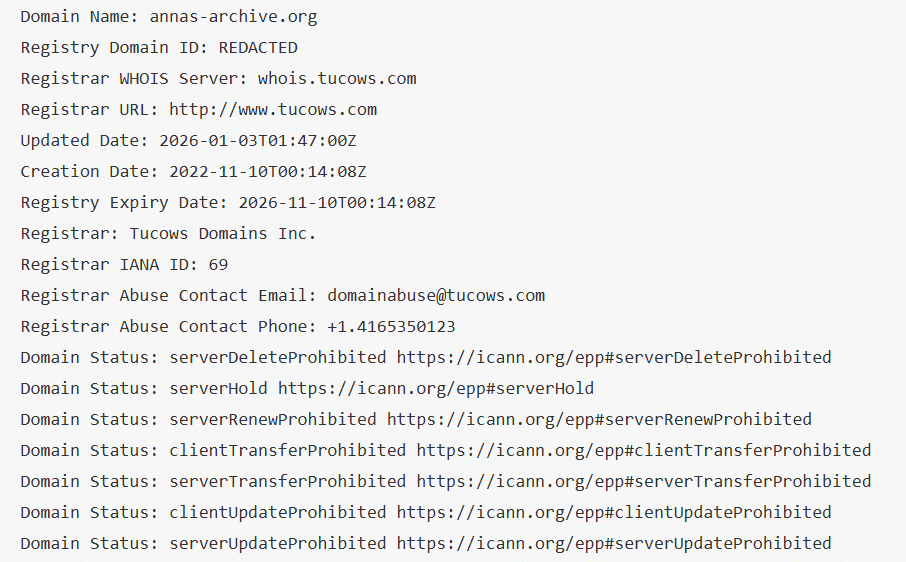
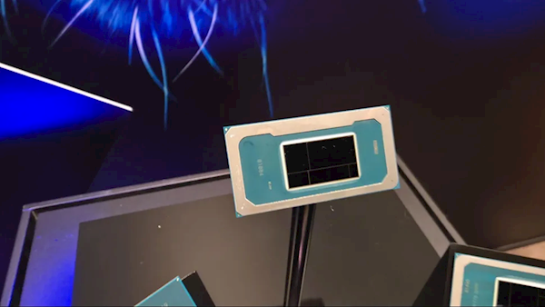
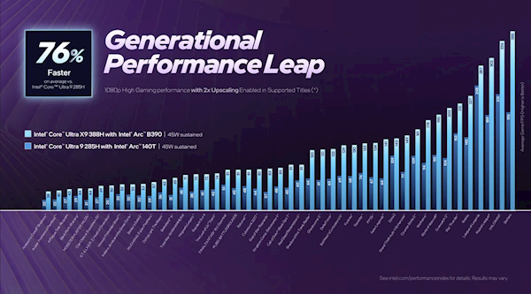
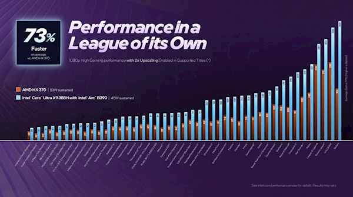
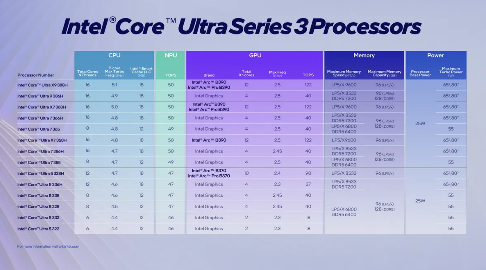

MakerVille旗下歌手日前參與在澳門的倒數騷演出，不過ERROR全晚僅佔少數出場時間表演，只唱2首半歌，有指193(郭嘉駿) 因而相當不滿，更嬲爆在社交網留言表示：「問吓監製」、「監製好似唔聽意見」，事後更缺席了《全民造星VI》的總決賽，事件掀起連串風波。
疑牽動粉絲騷擾高層 MakerVille 12月31日在澳門的倒數騷《全民造星Family跨年倒數》，ERROR全晚只唱2首半歌，眼見其他歌手如Winwin （楊安妮）有solo環節，反而早前推出新歌《你的名字 我的聖詩》的193完全無solo 機會，有不少粉絲在社交網留言替他們不值，向來火爆的193亦相當不滿，在社交網主動tag監製及經理人表示：「問吓監製」，疑似牽動粉絲去騷擾高層。
經理人濟哥為保錡解畫 而日前(1月4日)在《全民造星VI》總決賽，由強尼擔任大會主持，而ERROR成員阿Dee（何啟華）和吳保錡則負責於台下訪問評判團，有傳本來保錡的司儀位置是由193負責，不過193因私人理由突然缺席。而保錡當晚的表現卻獲不少觀眾負評，他以「港式英文」訪問韓星，被批「拉低水準」、「令人尷尬」等，ERROR的經理人濟哥即在社交網發文為保錡解畫，指保錡是臨時幫手頂檔：「得兩日，就係仲要今日5/1有工作，知道要幫手我同佢（保錡）講都即刻肯嚟頂。仲要佢早一日嚟咗production 叫佢幫手排一排，佢都即刻過黎排同夾下稿。」經理人濟哥續指：「訪問係得古生（古天樂）同gigi （梁詠琪）稿上面，因為直播要拖所以新加訪問，佢哋唔知有翻譯。英文講得唔好叫唔尊重，咁大家以後唔好用你啲港普啦，因為咁樣係好唔尊重，對唔住大家我以後都唔會講港普尊重thanks。」
193串爆回覆 經理人濟哥挺身出來為保錡辯護，疑似暗示保錡是臨時幫頂Job，又指臨行前兩日才通知，事件疑引發ERROR 及粉絲之間內訌。向來敢言193即在發文說：「其他嘢我唔方便評論，亦都唔覺得需要評論，正如我都唔覺得經理人應該亂發言一樣 ，不過你好似有啲誤會，以正視聽所以我都要講一講，首先係請大家千祈唔好盡信我經理人講嘅嘢；二，唔知你點樣聽返嚟係兩日？我肯定就最少有六日；又點解係無暇出席？邊個講㗎？同埋其實係可以唔需要人頂替嘅。」有網民就留言問193:「經理人究竟有冇經你？」193亦串爆回覆：「如果有嘅話，Error應該可以行得更遠。」對此，經理人濟哥亦在留言澄清：「我講清楚係，我冇話193兩日前通知呀，係話兩日前叫保錡頂咋」、「明白，解決清楚係6日通知，都要同公司內部溝通點，所以兩日前先通知保錡幫手做，係大家誤會咗個情況」。
02
殲16戰機-30℃起飛訓練 展現高強度作戰準備
oncc
新聞
2026-01-06 18:10
中國人民解放軍空軍殲16戰機近日在-30℃的嚴寒天氣下起飛訓練，官媒指是要在惡劣環境中練出真本領。
大埔宏福苑火災造成重大人命傷亡，後續調查工作仍在繼續。民政及青年事務局局長麥美娟、民青局常任秘書長林雪麗、民青局副局長梁宏正及民政事務總署署長杜潔麗，今日（6日）下午6時15分就大埔宏福苑管理事宜會見傳媒。
大埔宏福苑火災後，麥美娟罕有援引《建築物管理條例》，申請解散宏福苑業主立案法團管委會，及委任華懋集團旗下的合安管理有限公司為屋苑管理人。案件今在土地審裁處開庭聆訊，法官林美施透露，法庭收到現屆法團委員的聯署信，表示不會出席法庭聆訊，亦不反對解散法團。林官認為，災後重整工作刻不容緩及複雜，宜透過第三方及中立的機構處理，頒令華懋旗下公司「合安」無限期作管理人。
「小寒」是冬日的序章，凜冽的寒風伴隨着霜刃般的寒意，掀起了歲末的帷幕。它的氣場震懾天地，萬物不得不折服於其冷峻之下。有一民諺道：「小寒時處二三九，天寒地凍冷到抖。」這時候，大街小巷的人們一呼一吸盡是縷縷白煙，或縮起脖子、手插口袋，或裹上厚重衣服、圍巾繞了一層又一層。
莫被「小」寒騙了 今年的小寒在1月5日。
作為二十四節氣中第二十三個登場的主角，「小寒」通常在每年1月5日至7日準時赴約。古人云：「冷氣積久而為寒，小者未至於極也。」意即天氣雖嚴寒，但尚未到氣溫最低之時，故名「小寒」。
這個「小」字看似溫婉，實則暗藏鋒芒，千萬別小覷它的凜冽。中國長期以來的氣象紀錄揭示出其「廬山真面目」：全國大部分地區的小寒時節，往往比大寒更冷！北方大地冰封，南方濕冷蝕骨，難怪民間流傳着「小寒勝大寒」之說，警示着人們莫輕視「小寒」的威力。
古人將小寒分為「三候」，宛如展開三卷冬之繪卷：「一候雁北鄉」，小寒之際，陽氣已動，大雁開始啟程，踏上北歸之路；「二候鵲始巢」，喳喳叫的喜鵲忙着裝修新房，築起安樂窩；「三候雉始鴝」，野雞歌興大發，開啟冬日「唱K」模式。這三個現象提醒我們：最冷的時節，往往孕育着最蓬勃的生機。 舌尖上的冬日盛宴
臘八粥
「民以食為天」，越冷的天氣，越能展現中國人的飲食智慧。說到「小寒」，豈能不提「臘八粥」？民間有「過了臘八就是年」的說法，小寒前後恰逢臘八節（農曆十二月初八），一碗熱騰騰的臘八粥成了驅寒迎祥的必備良方。傳統臘八粥用料講究，糯米、紅豆、花生、蓮子、紅棗等八樣食材熬煮成稠滑香甜的粥品，象徵五穀豐登、吉祥如意。有些地方還會加入桂圓、栗子，甚至鹹口的臘肉、香菇，南北風味各有千秋。在最冷的日子裏，家人圍坐一起，喝一碗熱粥，心也暖了。
銅鍋涮肉
北方的「銅鍋涮肉」堪稱賞心悅目的冬日藝術，薄如蟬翼的羊肉片，在骨湯裏翻滾3秒，蘸上麻醬韭菜花，吃上的那一口，彷彿是太陽以它熾烈的針灸，甦醒冬眠似的骨骼。
南方的廣東人最愛捧着一盅「臘味糯米飯」，掀開蓋子香氣能醉倒半條街。最有趣的是嶺南地區的「吃糯驅寒」傳統，用五色糯米飯拼成吉祥圖案，暖胃又養眼。
這些傳承千年的飲食密碼裏，藏着先祖們對抗嚴寒的生活智慧。現代營養學發現，這些傳統食物恰好富含蛋白質、脂肪和碳水化合物，就像給身體穿上隱形羽絨服。當我們圍坐餐桌大快朵頤時，其實正在參與一場跨越時空的冬日儀式。
字裏「寒」間生命力 在全球暖化的背景下，現代人或不太能感受到季節更替，但敏銳的古人憑着對季節的觀察，便能在小寒嗅到一絲「春」的味道。小寒作為冬季倒數第二個節氣，相信離春季也不遠矣，不少文人墨客抱着對春天的期待，寫下一篇篇對生活的觀察，找到超越寒冬的生命力。
黃庭堅〈駐輿遣人尋訪後山陳德方家〉也寫道：「江雨濛濛作小寒，雪飄五老髮毛斑。」盡見小寒時節江雪朦朧的冬日魅力。元稹在〈詠廿四氣詩．小寒十二月節〉曾寫道：「小寒連大呂，歡鵲壘新巢。拾食尋河曲，銜紫繞樹梢。霜鷹近北首，雊雉隱叢茅。莫怪嚴凝切，春冬正月交。」詩人以小寒為背景，樂見喜鵲忙於築巢覓食、霜鷹登場、雄雉鳴叫，無一不是嚴冬裏的生命力。雖是寒冬，但鳥類似乎比人類更早感知春天的到來。這些微小的跡象不但展現寒冬中的活力，亦見大雪之下蘊藏的生機不滅、冬去春來的自然定律不變。
小寒不止是天氣的指南，更是生活的提醒：極寒之處必有暖意，就像生活苦樂參半。二十四節氣之美，不就體現於把自然的變化轉化為生活的詩意嗎？不如趁着寒潮未退，約上三五知己，參照以上的飲食指引，用熱氣騰騰的美食，把冬天過成值得期待的季節。畢竟，未嘗過透徹的寒冷，何懂溫暖的珍貴？
冷知識BOX：冷熱小寒及「雁北鄉」 圖片來源：新華社
香港最冷的小寒能夠降到5度（1955年1月6日），而最熱的小寒更高達20.3度（1931年1月6日）。
每年小寒一到，雁群裏的「先知」就悄悄行動了。元代學者吳澄在《月令七十二候集解》寫道，每年「小寒」節氣的第一個物候，則是「雁北鄉」，「北鄉」也就是「北嚮」。這時在南方避寒的大雁靈敏感應，已經察覺到地底下那股悄悄復甦的暖意，於是就有一部分「急先鋒」展開返鄉旅程，朝着北方啟程飛翔。
歷史充電站：農耕指標 圖片來源：新華社
俗語說：「小寒不寒，清明泥潭。」意指如果小寒時氣候不冷，清明時節可能多雨泥濘，對農耕造成影響。這亦反映了小寒在農業社會的重要性。
此外，每年臘月，宋人便鑿取河冰藏入地窖，將冰塊存入地下冰窖嚴密封存，待來年夏日取出，既可供家中自製冷飲，亦可供應給專營冷飲的攤販與商家。據說早在宋代就已出現類似現代冰棒，人們在寒冬以銅盆盛水，加入糖、果汁等，置於戶外凝結成冰，再送入冰窖儲存。待來年夏日，這些冰塊便被切割成小塊，或雕刻成動物等造型，在冷飲店中販售。
本欄逢周一刊出，由教育評議會邀請資深中小學教師及校長撰寫。
文章以生動有趣的方式，透過中國節氣氣候、各地風土民情及歷史人物故事，帶領讀者探索中國文化與歷史的奧妙。
文：中華基金中學中文科主任胡誦恩、中華基金中學中文科老師簡文雅
延伸閱讀：
烘焙麵包 蘊含科學知識｜星島教室
冰心：以文學溫暖時代人心｜星島教室
「昂坪360．駿馬躍動迎新春」將從1月24日至3月8日在昂坪市集各處帶來祝福滿滿的萌爆駿馬「打卡位」，包括在圓形廣場聚集祝福的駿馬大型裝置，以及駿馬祝福幸運輪盤。著名堪輿學家麥玲玲師傅今年特意參與新春裝置設計，並將在年初五（2月21日）吉時在昂坪市集現身，送上新春祝福兼大派開運小掛飾及朱古力金幣，機會難得。
昂坪360推「雙重暢遊」優惠 昂坪360亦為賓客特別準備「雙重暢遊」優惠。在優惠期內，賓客可以一張來回纜車（標準車廂）門票的價錢，在3月底前乘搭兩次來回纜車（標準車廂），以更優惠的價格，與親友登高參與不同新春節慶活動，更可獲贈開運小掛飾或馬年吊飾，於東涌纜車站現場親身換領，先到先得，送完即止。
大型新春裝置「金駿報喜迎新春」位於昂坪市集圓形廣場，裝置上的五匹駿馬分別穿上賀年唐裝、戴上粉紅色花朵、染成紅色鬃毛，以及披上「福」字馬鞍，以可愛新春造型出現，象徵「五福臨門」，寓意吉祥、富貴、健康、長壽和快樂。
昂坪市集設新春祝福「打卡位」 另外，昂坪市集放置兩個新春祝福「打卡位」，位於市集牌坊旁的「馬到功成幸運輪」以桃花、籤筒及金元寶佈置，象徵幸運、健康與財富，賓客還可以轉動中間的幸運輪盤，轉出財運、事業、愛情多重好運，讓祝福疊加。
而在菩提樹旁的「金禧福袋賀新歲」，賓客可踏進巨型福袋中，與堆滿的金元寶以及可愛駿馬合照，象徵新一年「財福環抱、金銀滿屋」。
著名堪輿學家麥玲玲將在年初五（2月21日）早上11時45分蒞臨昂坪市集，在昂坪市集涼亭前，向賓客派發開運小掛飾及朱古力金幣，同時送上新春祝福，祝願市民過一個好年。麥玲玲表示，昂坪市集的新春氣氛特別好、人氣旺，而且位處高地，鄰近大佛，能夠為自己提升正能量，約定大家屆時在昂坪市集見面。
昂坪360邀請專業醒獅團隊及財神，年初一至年初六（2月17日至22日）每日中午12時半及下午3時半，在昂坪市集涼亭前進行醒獅表演，以及財神向賓客派發「金元寶」，與賓客一同慶祝新春，並為昂坪市集加添節慶色彩。年初五（2月21日）首場醒獅及財神表演，將於提前於上午11時45分舉行。
盛寶金融因在其網上交易平台分銷非證監會認可的虛擬資產基金及虛擬資產相關產品時犯有缺失 ，遭證監會譴責，並處以罰款400萬元。
盛寶金融違規向130零售客戶執行虛擬資產相關產品交易 證監會表示，於2018年11月1日至2022年11月25日期間，盛寶金融上述在涉事期間，於其網上交易平台為六名個人專業投資者及130名零售客戶執行了1,446筆交易，涉及32項虛擬資產產品。有關產品全部均屬於複雜產品，包括21項交易所買賣衍生產品。 不過根據當時的兩份證監會致中介人的通函 ，這些產品只應售予專業投資者。
盛寶金融無設有任何特定程序 以對產品和客戶盡職審查等 證監會發現，盛寶金融在執行這些交易前，並無評估客戶是否具備投資虛擬資產產品的知識，亦無向客戶提供充足資料和特別就虛擬資產給予客戶警告聲明，因而不符合該兩份證監會通函所載的指引。 同時於涉案期間，盛寶金融並無設有任何特定程序，以就虛擬資產產品進行產品盡職審查。 及並無實施足夠和有效的政策及監控措施，以對網上平台的運作進行有效的管理及適當的監督；及沒有對客戶作出充分查詢或收集充足資料，從而讓其能夠妥善地評估客戶對衍生工具的認識等。
證監會認為，綜上所述，盛寶金融的缺失構成違反《網上分銷及投資諮詢平台指引》及《操守準則》 ，並在考慮盛寶金融該缺失持續了超過四年 、且自行向證監會匯報其失當行為等相關情況下，決定了罰款和譴責紀律處分。
入住酒佔，房間衞生情況是許多人的關注點。近日有網友發布帖子稱：自己與朋友（兩名女生）於2025年12月31日入住深圳一全季酒店。使用酒店浴巾後，有一使用過的避孕套從中掉落。
酒店免房費了事 該網友表示：事發後她第一時間聯繫了酒店方，店長到房間內處理，表示可能更換浴巾時未打開查看，並且免除了當日的房費。當晚酒店方發送了一段文字，表示查看閉路電視後確認所有與布料相關的用品全部撤出更換，且除工作人員外無任何人員再進入該房間。
對此，全季深圳國際會展中心福海店工作人員回應內媒查詢稱：確實發生過該事件，並且給客人提供了相應的閉路電視畫面，但該網友表示她從未看過。全季深圳國際會展中心福海店工作人員表示，母公司華住集團已介入調查。
網民留言熱議：
彭博報道，內房萬科（2202）（深000002）的危機餘波正一路蔓延至全資國有地產公司。
甘肅省政府原副省長趙金雲受賄、內幕交易一案1月6日在天津市第二中級法院一審宣判，法院裁定趙金雲受賄罪、內幕交易罪罪名成立，決定執行有期徒刑15年，罰款350萬元（人民幣，下同）。
法院審理查明，被告趙金雲2005年上半年至2024年10月單獨或伙同其丈夫包東紅（另案處理），利用趙金雲擔任甘肅省國土資源廳耕地保護處副處長、甘肅省公路航空旅遊投資集團有限公司副總經理、甘肅機場運營管理有限公司董事長、甘肅省政府副省長，以及利用包東紅擔任甘肅省敦煌市委副書記、市長、市委書記，甘肅省發展和改革委員會黨組成員、副主任，國家稅務總局甘肅省稅務局黨委書記、副局長、局長，國家稅務總局陜西省稅務局黨委書記、局長等職務上的便利以及職權、地位形成的便利條件，為有關單位和個人在承攬工程項目、申辦探礦權、解決涉稅問題、調整職務等事項上提供幫助，受賄5409萬餘元。
2018年6月至2022年3月，被告趙金雲利用在工作中獲悉的內幕信息，使用其控制的親友證券帳戶多次買入相關股票，成交額共計702萬餘元。趙金雲將上述股票賣出後，非法獲利人民幣30萬餘元。（新華社）
天文台今日（6日）在社交平台發帖，指今年首個「超級月亮」已於上周六現身。由於月球運行至距離地球最近的「近地點」，加上適逢滿月，令月亮看起來比平時更大、更光。
天文台指，「超級月亮」現象的出現，是基於月球圍繞地球運行的軌道呈橢圓形，導致月球與地球之間的距離時遠時近。當月球運行至距離地球最近的「近地點」時，若同時遇上滿月，從地球觀測月亮便會顯得比平時更大、更明亮。
對於有意捕捉「超級月亮」景象的攝影愛好者，可考慮使用長焦距鏡頭進行拍攝。透過長焦距鏡頭，其視角會相對收窄，有助於營造出遠處月亮顯得更巨大的視覺效果。
早前車路士宣佈馬列斯卡(Enzo Maresca)離任主帥一職，由U21隊的麥法蘭(Calum McFarlane)暫代主帥一職，但坊間一直有傳，由車仔老闆旗下的另一支法甲球會斯特拉斯堡主帥羅仙尼亞(Liam Rosenier)會接任車仔領隊一職，今日羅仙尼亞出席記者會證實將會離開斯特拉斯堡，並已與車仔達成口頭協議，他更直言這是一個「無法拒絕的機會」。
羅仙尼亞接手車路士 稱已準備好接受挑戰 執教法甲球會斯特拉斯堡的41歲英格蘭主帥羅仙尼亞，早前已盛傳將會加盟同屬清湖資本的車路士，今日羅仙尼亞舉行記者會，正式宣佈自己將會離開斯特拉斯堡，並已與車路士達成口頭協議接手車路士領隊一職，他的副手和分析師亦會一起轉投車路士，對於加盟車仔他直言：「是一個我無法拒絕的機會。」
羅仙尼亞也感謝斯特拉斯堡的高層對球隊的付出，他回想過往的日子表示：「過去的18個月非常愉快，也是我職業生涯中最美好的時光。我認識了一些非常棒的人，創造了一些美好的回憶，也創造了歷史。」對於接下來在車路士的挑戰，他也表示：「如果我沒有做好準備，我是不會接受切爾西的工作的。」他也希望斯特拉斯堡的球迷能夠理解他的決定和為他感自豪。
Google香港今日（6日）公布2025年搜尋榜，無綫劇集、綜藝節目及藝人再度傳來喜訊，其中《萬千星輝頒獎典禮》囊括9個獎的《新聞女王²》，除了成功進佔「熱搜關鍵字」排行榜第9名、成為唯一躋身10大的本地劇集；亦同時在「年度熱搜劇集及節目」力壓一眾勁敵榮登榜首，絕對大豐收！
A股上市公司、截至今日收市市值超過700億元人民幣的興業銀錫（深：000426）公告，正在籌劃發行境外上市股份（H股）並申請在港交所（0388）上市事宜，正與相關中介機構商討中，具體細節尚未確定。
本年度世界羽聯（BWF）巡迴賽今（6日）於馬來西亞揭開戰幔，港隊星將混雙的「鄧謝配」鄧俊文／謝影雪及男單的李卓耀分途在新年首擊旗開得勝，惟女雙8號種子的「雙楊配」楊雅婷／楊霈霖則意外「一輪遊」。
屬BWF千分級賽的馬來西亞公開賽今於吉隆坡國家體育中心展開，去年勇奪亞洲賽冠軍的鄧俊文／謝影雪以混雙7號種子身分出戰，首圈面對東道主組合黃顯維／賴沛君，輕鬆直落兩局21：10、21：9取勝，晉級16強後將鬥中華台北隊的陳政寬／許尹鏸。
至於去年表現低迷的港隊男將李卓耀在新一年取得好開局，這名世界排名第18位的29歲好手今惡鬥6號種子的法國隊名將基士圖波波夫，在先輸一局13：21下，連贏兩局21：19、23：21，局數2：1反勝過關，將與印度隊球手勒斯亞爭入8強。
另外，以8號種子參戰的楊雅婷／楊霈霖於女雙首圈力戰3局後，以19：21、21：11、16：21，局數1：2意外不敵泰國隊的鍾莎普恩柏恩／蘇瓦猜，經歷「一輪遊」。
其他報道： 籃球｜火箭偕獨行俠落實參戰下屆NBA中國賽 10月9及11日澳門兩度交手
第52屆香港貿發局香港玩具展、第17屆香港貿發局香港嬰兒用品展，以及第24屆香港國際文具及學習用品展，將於下周一（12日）起一連四日在灣仔會展舉行。今年以「全新玩意 與眾同樂」為主題，吸引來自37個國家及地區、超過2,600個參展商，其中更有孟加拉、新西蘭和挪威等新展商參展，並首次設立「潮玩館」（Pop & Play）集合約150個潮玩IP。
3個展覽參展陣容非常國際化 香港貿發局副總裁古靜敏稱，3個展覽是今年打頭陣率先舉辦的大型展覽，參展陣容非常國際化，玩具展包括來自中國內地展團、台灣展團、韓國展團，也有以歐洲展商為主的展團；嬰兒用品展則有備受矚目的「歐洲精選」，香港孕婦童業協會及韓國展團等。同時貿發局亦組織來自40多個國家及地區、超過200個買家團到場參觀採購，目標吸引約8萬名買家入場參觀，現時已有5萬名買家登記。
「潮玩館」 有約150個IP 部分推「會場首發」及「全球限量」珍品 香港貿發局玩具業諮詢委員會主席陳允誠表示，全球玩具市場去年首6個月錄得約5%增長，香港的玩具和遊戲出口表現去年首11個月止跌回升，按年上升近35%，中國內地是香港玩具業最大的出口目的地，東盟亦成為香港玩具業主要出口市場；亦預計今年本港整體出口將會增長約8至9%。
今年展會新增的「潮玩館」（Pop & Play） 有約150個IP，現場不同潮玩品牌及IP將展示最新作品，部分IP更推出「會場首發」及「全球限量」的珍品。此外，更有設計師為「潮玩館」設計了三款、全球只有800套的限量收藏卡，參觀者於現場玩扭蛋遊戲，便可抽到其中一款收藏卡；亦可玩 AI 照相與收藏卡角色合照，以及參加「專屬紀念品 DIY」工作坊，親手創作個人化的潮玩紀念品。
隨著全球人口高齡化，今年特別推出全新「樂齡產品 Happy Ageing」標誌，讓買家更容易識別樂齡玩具和相關產品，有逾40家展商採用產品標誌及展出有關產品。
三展提供一站式採購平台 線上展覽開放至1.22 至於嬰兒用品展，「手推車及座椅世界」及「ODM 手推車及座椅」兩大專區有共約230家展商，展商數目及展區面積較上屆增加。玩具展及嬰兒用品展續設廣受歡迎的「品牌廊」，匯聚超過380個國際知名品牌，方便買家即時採購最新設計及優質產品；而香港國際文具及學習用品展則網羅最新的校園、 辦公、美術及禮品文具。
3個展覽亦為買家提供一站式採購平台，締造更多跨行業商機，並繼續以融合展覽模式「展覽+」（EXHIBITION+）舉行，結合實體展及「商對易」（Click2Match）智能配對平台，進行線上洽商及配對，線上展覽已將開放至本月22日。買家亦可以使用「掃碼易」（Scan2Match）功能，在實體展期間掃描展商及產品陳列櫃的專屬二維碼，收藏喜愛的展商及瀏覽產品資訊。
記者：何姵妤
胰臟癌是本港致命癌症的第四位，素有「癌王」之稱，早期症狀不明顯，待發現時已屆晚期，存活率不高。有醫生分享案例，指有患者確診早期胰臟癌，拖延治療半年後驚覺腫瘤由6mm長到8mm，生長速度十分驚人。醫生呼籲，只要及早做1事，5年存活率可提高8倍；胰臟癌腫瘤的生長速度到底有多快？
男子腹脹易累揭患胰臟癌 半年拒治療腫瘤大30% 胃腸肝膽科醫生林相宏 在個人Facebook分享案例，一位60歲男患者有嚴重家族糖尿病史，父母及兄長均為糖尿病患；近期易感到疲倦、冒冷汗，上腹部偶有悶脹感覺，食慾尚可但體重緩慢下降；患者家人警覺其症狀符合胰臟癌3大警號：
患者求醫後，發現患嚴重糖尿病，空腹血糖高達200mg/dL、糖化血紅蛋白（HbA1c）達13%，透過胰臟內視鏡超聲波發現6mm腫瘤；患者起初抗拒切片手術與糖尿病治療，認為「自己沒怎樣」，故延誤治療半年。半年後在家人的堅持下再次檢查，經內視鏡超聲波切片檢查後，發現腫瘤已從6mm長至8mm，6個月內長大了3成，確診為胰臟癌，患者終於同意接受手術。
胰臟癌治療｜「早期篩檢」存活率飆升8倍 很多人以為，胰臟癌一旦出現症狀時再治療會非常困難，且超過8成都無法進行手術，5年存活率只有約10%。但林醫生解釋，只要腫瘤在1cm內被發現，5年存活率可增加至80%，飆升8倍；他呼籲，定期做早期篩檢以增加存活率。他分析，胰臟癌生長速度存在差異，早期篩檢十分重要：
按照60歲男患者的案例，其早期腫瘤生長緩慢，半年6mm長大到8mm。 有文獻指，早期胰臟癌腫瘤要超過200日，才會長到2倍大； 晚期胰臟癌腫瘤生長很快速，僅約60日就可長到2倍大，故晚期患者的病情易急轉直下。 胰臟癌徵兆｜胰臟癌6類常見症狀 腹痛/皮膚㾗癢也要小心 胰臟癌有何症狀？根據本港醫管局 資料，胰臟癌是本港第4號致命癌症。胰臟位於腹腔深處，在胃部與大小腸等器官後面，導致當出現胰臟癌時，其位置較隱蔽難發現，加上胰臟癌初期病徵並不明顯，不少病人到胰臟癌晚期才察覺患病，影響生存率。即使胰臟癌可以進行手術切除，復發的風險也比一般癌症高。若出現以下徵狀，有機會是患上了胰臟癌：
上腹部出現與飲食無關的持續疼痛，並會反射至背部 食慾不振、噁心、嘔吐、消化不良、腹脹等腸胃障礙現象 出現黃疸、皮膚搔癢、大便呈陶土色 體重短時間內銳減 上腹部出現固定、堅硬的腫塊 腹水 胰臟癌患者較常出現以下併發症：
黄疸 當腫瘤擴大壓迫神經，腹痛會加劇 嚴重體重下降，進食情況差的病人可能需要鼻胃管餵飼或靜脈輸入營養補充品 胰臟癌成因｜10類人患胰臟癌風險較高 胰臟癌成因是甚麼？甚麼人易患胰臟癌？醫管局指，胰臟癌的成因仍未完全明瞭，有可能是胰臟的細胞變異增生。大部份的胰臟癌指的是來自胰管上皮細胞的腺癌。胰臟癌較常發生於65歲以上人士身上，此外，以下10類人風險也較高：
種族：黑人的風險較高 性別：男性比女性有更高風險 抽煙：吸煙者比不吸煙者患上胰臟癌的機會高出大概2至3倍 糖代謝異常：糖尿病可以增加患上胰臟癌的風險 超重：超重的人有較大風險 飲食：長期過量進食動物脂肪和少吃蔬菜和水果會較易患上胰臟癌 化學品：長期接觸殺蟲劑後、石油或染料 感染幽門螺旋桿菌：患上胰臟癌的機會比非患者高出2倍 遺傳性胰臟炎：遺傳性慢性胰臟炎會增加胰臟癌的機會，但非常罕見 慢性胰臟炎：常與胰臟癌一同發現，但不一定是導致胰臟癌的原因 預防胰臟癌｜5大方法減胰臟癌風險 醫管局指，改變一些生活方式有助降低罹患胰臟癌的風險：
戒煙：吸煙的煙霧中含有致癌物質，可以破壞DNA調節細胞的生長 保持健康的體重：體重過高增加患上胰臟癌的機會，如果需要減肥，建議採取漸進和健康的方式，以達到目標 經常做運動：適量的運動可以減少患上胰臟癌的機會 健康飲食：多進食水果，蔬菜和低動物脂肪食品可以减少患上胰臟癌的風險 避免接觸危險化學品，或使用適當安全措施 延伸閱讀：胰臟癌年殺逾900港人 多吃3類食物降30%風險 按這穴位護胰臟
---
相關文章：
64歲醫生患胰臟癌 抗癌期間仍家訪病人：盡己所能直到生命盡頭
全球50萬人因喝這飲品患癌？每日喝一杯患胰臟癌風險增87% 醫生盤點4類天然防癌飲品
曾患這種病更易患胰臟癌！醫生警告患癌機率2年內增19倍 多吃1類蔬果降20%風險
糖尿病恐致3大癌症 這種癌症風險激增近5倍 研究揭1種人更高危
17
內地女涉申來港讀書時虛報曾在美大學就讀 准保釋至1.20再訊
oncc
新聞
2026-01-06 17:36
持雙程證的32歲內地女子，涉嫌於2021年申請來港就讀的入境許可時，虛報自己曾在美國德克薩斯大學奧斯汀分校就讀。
土地審裁處接獲今年首宗舊樓強拍申請個案，由資深投資者盧華家族併購的鰂魚涌麗池大廈舊樓，最新申請強拍以統一業權發展。
上述財團目前持有英皇道921號72.73%業權，尚餘3個單位並未成功收購，市場估值逾8,306.4萬元。而英皇道927號則持有100%業權，即平均持有86.37%業權。
整個項目地盤面積約4,560方呎，若以地積比率15倍發展，涉及可建總樓面約68,400方呎。
·Alaskanbabydaddy玩家的這台電腦機箱是自己花了30美元在亞馬遜買的MicroATX類型，上個月底下午4點半左右自家窗户突然飛進來3顆子彈，其中一發就打在機箱上，嚇得正在玩遊戲的孩子不輕。
·玩家報警後，目前警方仍在調查子彈的來路，帖子發出後網友表示人沒事就是萬幸，不過這台功臣電腦並沒有因為機箱遇襲而罷工掛掉，仍然能夠正常運行。
觀塘區近年成功舉辦多次夜市活動，2026年新春再度添食。由觀塘區議會與觀塘民政事務處聯同香港觀塘工商業聯合會合辦，並獲香港北京社團總會及香港文體旅交流協會協辦的「龍騰觀塘新春夜市2026」，定於2月6日至22日，一連17天在觀塘市中心自由空間（鄰近裕民坊）舉行。
年十九至初六舉行 周末開朝12晚11 主辦方曾於2024年新春及仲夏、2025年新春合辦三次夜市，並於2025年11月配合全運會舉辦「全運夜市」。四次活動累計吸引近145萬人次入場，總營業額超過2,100萬元，深受市民歡迎，成效顯著，既營造了歡樂節日氣氛，亦有效帶動了本地消費。
延續過往成功經驗，今次新春夜市旨在進一步提振觀塘區經濟，促進商業活動，吸引市民及遊客到區內消費。活動時間為周一至周四下午4時至晚上10時30分；周五至周日及公眾假期則由中午12時開始至晚上11時。開幕典禮將於2月9日下午6時舉行。
設各地美食、市集攤位 馬年打卡裝置 大會將設立多元化的市集攤位，分為飲食與非飲食兩大類。飲食攤位將匯聚各地特色美食，讓市民既能品嚐經典港式小吃，亦能體驗其他地方風味。非飲食類攤位則包括創意商品、年花專區及兒童遊戲攤位，適合全家參與。現場還設有綜合表演、配合馬年主題的裝飾打卡裝置，提供豐富娛樂及拍照體驗。
大會希望透過活動，提振觀塘區經濟，促進商業及經濟活動，吸引市民及遊客到本區消費，亦透過參加者、參展商及居民的互動，營造歡樂節日氣氛，增強社區凝聚力。另外善用觀塘區內閒置用地舉辦社區活動，提升土地資源運用效益，以及鼓勵家庭聚首一堂、參與市集、打卡互動及欣賞表演，共度新春佳節。
記者︰黃子龍
2010年度港姐冠軍、現年38歲的陳庭欣（Toby）早前宣佈與拍拖八年的彩豐行老闆楊振源（Benny）分手，《東周刊》最新一爆出Toby分手後已搬離昔日的3000尺九肚山愛巢，並搬至黃大仙500尺單位獨居，過自力更生的生活，至於她跟Benny的分手原因，則是因為男方多年來不乏桃色新聞的同時，對女色亦毫不避忌，令Toby不勝其煩，所以毅然決定在40歲前斬纜，而分手後的Toby亦驚爆與《東張西望》的爆肌「小鮮肉」主持曾錦燊近期過從甚密。
陳庭欣回應大屋搬細屋 對於兩人的分手原因，正在忙於工作的Toby以短訊回覆《星島頭條》時先多謝大家熱切的關心，又指分手其實是小事，大家不用擔心，因時間會治癒一切，「人生總會有高高低低，有離離合合，我相信終有一日會遇到對的人，一切隨緣。」至於居住問題，Toby坦言這些都較為私人，但無論住在哪，間屋大或細都不重要，最重要係住得舒服同開心。問到是否因Benny桃花太旺，又不避忌而分手？Toby說：「同Benny 嘅事情就唔再多講啦，佢始終係圈外人，要尊重對方，我們還是保持普通朋友關係。 而我一向思想同處事都比較偏向成熟，所以我可以照顧到自己，大家真的不用太擔心！」
相關閱讀：陳庭欣豪宅降格搬蝸居 《東周刊》獨家直擊與楊振源分手後生活 驚爆與TVB男主持過從甚密
陳庭欣稱曾錦燊為東張男神 至於被指曾錦燊（Charles）近期過從甚密，私下相約之外，更在IG中幫對方拉票，Toby就以「東張西望男神」稱呼對方，更表示對方加入《東張》前已認識：「我哋有好多共同朋友，《東張》嘅監製見我同佢熟絡，初時都有叫我教佢多啲，特別係dubbing （配音），因為佢咬字同發音都可以再進步。其實除咗佢，《東張》嘅小師妹我都好關心，因為我哋係《東張》Family，上下齊心，充滿愛。 」
陳庭欣感激Bob林盛斌 而Toby在最後亦要特別感謝陪著她一起的朋友們和 Bob 爺（林盛斌）：「完全感受到大家的愛護，非常感動。往後一如既往，努力工作，勤力打波，其他事一切隨緣。」對於圈中有「金牌媒人」的Bob在頒獎禮上公開表示今年會幫她找一個20億身家起跳的男友，Toby就表示要多謝Bob 爺，又大讚對方好細心、重情義及真心關心每位朋友：「其實每位得獎者上台分享感受嘅時間都好短，但佢竟然第一樣講嘅嘢係叫我唔使擔心，真係好感謝Bob 爺。我衷心祝賀佢成為最佳男主持，實至名歸！不過真的，大家不用擔心，一切順其自然。」
相關閱讀：陳庭欣認與富商楊振源分手 缺席男友生日會早暗示八年情斷 公開分手原因：不涉第三者
會計及財務匯報局基於公眾利益實體核數師容誠（香港）會計師事務公司、李偉志及陳健偉嚴重違反《會計及財務匯報局條例》（第 588 章）（會財局條例）有關註冊及通報的規定，對其作出以下處分；公開譴責容誠香、李偉志及陳健偉；處以罰款合共 118.3萬元，包括對容誠香港處以罰款80.8萬元、對李處以罰款14萬元及對陳處以罰款23.5萬元；及命令李及陳繳付會財局的調查費用及開支。
多個超級豪宅錄高價買賣，而建灝地產旗下赤柱「ONE STANLEY」，則推出全部付款方法。
新濠國際 （0200）主席何猷龍旗下家族辦公室黑桃資本宣布，旗下附屬公司發起的特殊目的收購公司（SPAC）Black Spade Acquisition III Co 將於今晚在紐交所上市，首次公開發行1,500萬單位，每單位10美元，股票代號為「BIIIU」。
機場貴賓室為特定旅客提供休息空間，環境安靜之餘，亦有免費餐飲、上網服務，部份更有淋浴設施，讓旅客等候上機或轉機時有一個舒適的環境。最近，社交平台上有網民分享透過內地二手交易平台，最平¥28起即可進入香港、內地、韓國等各地機場貴賓室，部份賣家更表示憑二維碼「實名包進」。惟小紅書上有多位網民均表示曾購買有關「商品」，惟最終因需要核對身份而未能內進，部分更不獲退款，直言「真的不靠譜」。
內地交易平台平價入機場貴賓室？香港/上海/韓國機場¥28起聲稱「實名包進」 機場貴賓室除了開放予航空公司頭等、商務艙乘客、高級會員及部份信用卡持卡人免費進入，旅客亦可以單次付費方式進入。最近，有網民於社交平台分享，透過內地交易平台可以平價進入內地各大機場、香港及韓國等機場的貴賓室。翻查內地交易平台網頁，機場貴賓室進出憑證收費最平¥28起，部份更稱「實名包進」，買家付款後會收到二維碼，憑碼即可內進。
有賣家表明其標價為非實名，「有概率前台會不讓使用，不進全退，實名價格因人流、航班等因揀價格不等，具體請諮詢客服」。如果買家個人不使用憑證的話，商家一律不退不換，「如因我方原因無法正常進入，一律極速退款」。有網民質疑使用機場貴賓室需核對登機證以及證件，而樓主則表示賣家只要求他提供旅客姓名、航班以及手機號碼。
小紅書網民「中招」籲小心：真的不靠譜 有小紅書用戶反映曾透過同一交易平台購買上海浦東機場實名貴賓室體驗，結果未能進入貴賓室，「前台說都核銷不了，賣家又給我發了個錄屏掃了兩次也還是不行，說必須是實時動態，碼掃不了，要發連結自己登，我買的還是實名制」、「我買過，說實名跟我機票名稱不一致」、「買的不包進，還查實名和登機牌是否一致」、「他給我發的一個鏈接，我點開是他的會員二維碼，然後給我的電子登機牌P圖P成他的會員碼」。有抖音用戶 則分享經歷，表示因並非「本人」而未能使用賣家發出的二維碼，當時職員稱只有信用卡持有人才能使用。
曾有網民購買後發現賣家以他人的權益卡積分兌換，「一刷結果發現實名核驗對不上，不讓我進，然後碼還用了，我退貨也退不掉」。不過，有網民表示曾成功以此方法進入貴賓室，惟認為容易出問題，不建議大家購買，「我之前買過一次，這個時間很短，還好進去了，不建議買，很容易出問題」。有網民表示以往非動態（二維碼）時經常購買，「現在都動態了，不敢買，就怕你這尷尬」、「現在機場也學精明了，搞了一分鐘換碼，然後他們慢點掃」。
文:R
資料及圖片來源:Threads 、小紅書
明日再有3隻新股暗盤交易，其中包括被稱為「大模型第一股」、「AI六小虎」之一的中國人工智能公司智譜 （2513）、 「國產GPU四小龍」之一的天數智芯（9903），以及手術機器人公司精鋒醫療（2675），當中以天數智芯「最難中」，即使頂頭槌也最多只能有2手。
天數智芯乙頭穩獲1手 據市場消息指出，天數智芯以144.6元定價，申購4萬股（乙頭）才可穩獲1手；值得留意的是，投資者認購乙頭至頂頭槌（4萬股至127.16萬股），最多也只是中1至2手（100至200股）。
精鋒醫療9萬股可穩獲1手 精鋒醫療以43.24元定價，申購9萬股可穩獲1手，甲尾（10萬股）最多可中2手；認購乙頭（20萬股）也是中1至2手；至於頂頭槌（138.61萬股）則最多可中5手（500股）。
智譜2萬股已可穩獲1手 智譜方面，以116.2元定價，申購2萬股已可穩獲1手，甲尾（4萬股）中1至2手；認購乙頭（5萬股）也是中1至2手；至於頂頭槌（93.55萬股）則最多可中13手（1300股）。
2025年日本中央競馬大賞評審委員會，於今(6/1)日在中央競馬會總部召開會議，決定大賞所有獲選馬匹名單，結果「青春永駐」以其在去年十一月勝出美國育馬者盃經典大賽，投票時以大比數擊敗對手，成為25年日本馬王，今次是首次有泥地馬獲選成為馬王，此駒同時成為全年最佳四歲雄馬和最佳泥地馬，最終三喜臨門。
此外，法國馬「格倫島」成為二十年來首匹捧走日本盃的賽駒，獲得特別賞，以表揚其成就，今次是首次有外國馬獲獎，另一方面，騎師橫山典弘因成為史上第二位贏馬最多的騎師，成為繼柴田善臣和武豐之後，第三位獲特別獎「黃絲帶章」的騎師。
文傑
今日（6日）下午4時許，警方接獲報案，指筲箕灣阿公岩道明華大廈一單位發生火警，現場火光熊熊，並冒出大量黑煙。消防接報到場開喉灌救，迅速將火救熄，事件中無人受傷，毋須疏散，正調查火警原因。
根據網上圖片所見，火勢一度猛烈，火舌及黑煙從露台湧出，並向樓上各層飄散至半空。
明華大廈一單位發生火警，火勢相當猛烈。fb「筲箕灣人筲箕灣事」圖片
明華大廈一單位發生火警。fb「筲箕灣人筲箕灣事」圖片
起火單位外牆嚴重熏黑。fb「筲箕灣人筲箕灣事」圖片
消防將火救熄。fb「筲箕灣人筲箕灣事」圖片
旺角半新盤ONE SOHO錄得一手業主蝕讓個案。
標普全球今日發布報告指出，中國消費者在2026年將傾向於增加服務類支出而非商品消費。
沈殷怡以嘉賓身份出席會展活動，喜歡收藏玩具的她，特別迷《寵物小精靈》周邊，「睇到會忍唔住買！」經常到日本購買收藏。問對象需有共同興趣？她笑言不一定，「若他不介意我嘅小小興趣仲好，嫌棄嘅都唔會唔開心，情侶自然有唔同興趣。」
拉埋徐㴓喬跳唱？ 問可有購物慾煩惱？沈殷怡自認︰「相較身邊收藏家級嘅瘋狂朋友，我算小兒科，我較冷靜。」續指有收藏時下流行的card game，「可以同朋友試試手氣！」自覺運氣不錯沒花大錢。談到新一年，她最近忙於拍攝真人騷綜藝節目，其他工作則以旅遊及綜藝為主，「都想有更多拍劇機會，體驗唔同生活好好玩。」
至於ViuTV近日公布，組兩人限定女團PAWS，成員身份保持神秘，網民齊估當事人是沈殷怡、徐㴓喬，問是否如網民所指？她保持神秘，指留意明天她的活動，避談是否女團成員。問是否有信心挑戰唱歌跳舞？沈殷怡笑言有機會就會努力，自覺歌藝非「魔音」，跳舞則手腳不協調，「中學讀書時有跳過，好快就知唔啱自己。」問會否請教Jeremy（李駿傑@MIRROR）？她笑稱不敢打擾同事。
荷蘭一名53歲的伊斯蘭父親，不滿18歲的女兒生活方式「太過西方」還結交男友，竟夥同兩名兒子將女兒騙往荒野，將其綑綁並溺斃於沼澤。荷蘭法院近日做出判決，該名潛逃中的父親被重判30年徒刑，兩名兒子則處20年監禁。
悲劇導火線，疑似是瑞安在TikTok上，沒戴頭巾且化著妝進行直播。此舉被家族視為「羞辱性的背叛」。
不同種姓棒打鴛鴦 男拒分手遭榮譽處決 女友與遺體「完婚」感動全國
警方認為哈利德分別23歲和25歲的兒子穆哈納德和穆罕默德（Mohamed）也有參與犯案，兩人被捕後否認，反稱哈利德是「怪物」，但法庭獲悉兩人曾和哈利德討論殺害方式，並為了協助掩蓋謀殺，刪除瑞安手機的照片和影片，還要求其他家人刪除對話紀錄。
33
煙盒藏鏡頭放酒吧女廁偷拍 的哥認罪判囚8個月
oncc
新聞
2026-01-06 17:15
一名的士司機涉將隱藏鏡頭偽裝成煙盒，放置在酒吧女廁內進行偷拍，其後被發現並因涉嫌窺淫罪被捕。
美國隔晚造好，道指更創收市新高，亞太區主要股市繼續狂歡。恒指收報26710點，升363點，連升3日累升1080點或4.2%，創逾一個半月高位，大市成交額2917億元，為去年11月24日以來最多。滬指再創10年新高，收市漲1.5%；至於韓台股市連續3個交易日破頂。
恒指高開155點，報26502點，隨即升幅收窄至151點後再步步高升，中午前高見26858點，為去年11月14日以來最高，升511點，終收報26710點，升363點，連升3日累升1080點或4.2%。國指扭轉日前跌勢，收報9244點，升95點。科指收報5825點，升83點或1.5%，連升3日累漲5.6%。
滬指再創10年新高 內地股市向好，上證指數以全日高位收報4083點，升60點或1.5%，創10年新高。深證成份指數和創業板指數則以接近高位收市，深成指報14022點，升193點或1.4%；創業板指數報3319點，升24點或0.8%。滬深兩市成交額近2.81萬億元人民幣，按日多約2600億元人民幣。
韓台股市連續3日新高 韓台股市均以全日高位收市，連續3個交易日創新高。韓國綜合指數報4525點，升67點或1.5%；台灣加權指數報30576點，升471點或1.6%。日經指數收報52518點，升685點或1.3%。
內地股市高歌猛進，帶動內險和券商股齊走高。中國平安（2318）收報72元，升5%；眾安在綫（6060）報17.73元，升4.4%。國泰君安國際（1788）收報2.95元，升11.3%；中金（3908）報22.24元，升8.7%。
小米阿里逆市軟 科技股個別發展，小米（1810）和阿里巴巴（9988）都以接近全日低位收市，小米報38.76元，跌1.5%，為表現第二差藍籌股；阿里報150.8元，跌1.3%。美團（3690）報106.1元，升0.7%；京東（9618）報115.5元，升1.6%；騰訊（700）報632.5元，升1.3%。
中國宏橋飆6%冠藍籌 個股藍籌股方面，恒安國際（1044）收報27.28元，跌2.6%，為表現最差的藍籌股。鋁價持續攀升，刺激中國宏橋（1378）報35.26元，升6.1%，為表現最好的藍籌股。
至於擬分拆車載相關光學業務在港上市的舜宇光學（2382）逆市向下，收報67.1元，跌1%。滙控（005）再破頂，一度高見129.5元，收報128.8元，升3.1%。
李澤銘：首季或達28500點 紅蟻資本投資總監李澤銘表示，在投資前景明朗下，不少投資者在港股通回歸後高追，基金亦作新一年的部署，而在成交配合下，港股升勢有望短期維持，恒指有機會上試27000點，但有明顯阻力，支持位為26000點。他預計，今年恒指目標價為28500點，或於首季達成目標。
梁杰文：突破27000可挑戰3萬點 宏高證券投資經理梁杰文表示，今年港股開局造好，成交增加、資金流入，多家大型藍籌股份亦已相繼創出新高，相信上半年市況較為理想，若果能突破27000點的阻力，下一步有望挑戰3萬點。惟港股去年已累計上升接近三成，相信今年升幅不會如往年那麼誇張。
他指出，去年帶動港股上升的主要動力來自AI概念股及生物科技股爆發，預計這兩個板塊今年仍然會是投資重點，帶動港股向上突破。另一方面，去年香港新股集資重歸全球第一名，今年新股市場仍然暢旺，預計新股數目維持高位，相信有利港交所（388）或券商股股價表現。
溫傑：恒指可上試28980點 香港股票分析師協會理事溫傑表示，對港股前景抱審慎樂觀態度，預期在盈利帶動下，港股可上試28980點。但他提醒，投資者仍要留意內地財政政策、美國減息進程及地緣政治風險；他補充，要特別留意美國通脹，並有機會是黑天鵝之一。
板塊表現方面，他看好科技股、生物科技、新能源、內需、內銀、電訊，及黃金，並點名看好7隻股票的上半年表現，包括騰訊（700）、信達生物（1801）、安踏體育（2020）、寧德時代（3750）、工商銀行（1398）、中移動（941）及價值黃金（3081）。
—————
—————
1205：在美國減息預期升溫下，恒指今早高開155點後，越升越有，曾升511點至26858點，半日收報26815點，升468點或1.78%，成交1626億元；若以2026年計，3個交易日已累升1185點或4.62%。科指方面，半日收報5868點，升126點或2.21%；今年累升352點或6.39%。
中國宏橋及京東健康冠藍籌 重磅藍籌股中，滙控（005）半日升逾3%，連同騰訊（700）升逾2%及平保（2318）大升5%，合力領漲大市，3隻股份已為恒指進賬156點。單計股價變幅，中國宏橋（1378）及京東健康（6618）更分別升6.4%及6.1%，為半日表現最佳藍籌，龍湖（960）及紫金（2899）亦各升5.8%及5%。
貴金屬及比特幣相關股炒上 委內瑞拉政局突變後，貴金屬市場獲看好，除了金價及銀價外，倫敦鋁價亦企於3,000美元大關之上。鋁業股中，除了中國宏橋外，創新實業（2788）半日升7.7%，中鋁（2600）則升2.8%。黃金股方面，招金（1818）半日升逾7%，山東黃金（1787）升逾4%，紫金黃金國際（2259）則升3.6%。至於中國白銀集團（815）亦升1.35%。
此外，比特幣亦見受惠，更一度反彈至9.48萬美元，最新則回落至9.38萬美元水平；惟相關概念股繼續炒上，其中國泰君安國際（1788）及金涌投資（1328）大升逾12%；藍港互動（8267）升一成；博雅互動（434）則僅升0.5%。
內險股普遍向上 國壽升逾4% 另一方面，內險股普遍向上，除了平保（2318）之外，國壽（2628）半日升4.2%；中國太平（966）及新華保險（1336）升4%；中國財險（2328）亦升3.3%。消息面上，近日國家金融監督管理總局數據顯示，去年首11個月保險業總計實現保費收入57,629億元，按年增長7.6%。其中，人身險公司實現保費收入41,472億元，按年增長9.1%；財險公司實現保費收入16,157億元，按年增長3.9%。東吳證券認為，2026年市場需求依然旺盛，保險產品預定利率仍高於銀行存款，相對吸引力仍然明顯，對新單保費和NBV增長持樂觀預期，同時分紅險佔比繼續提升有助於進一步優化負債成本
李在鎔買Labubu 泡泡瑪特向上 個股消息中，據內媒《快科技》報道，三星電子會長李在鎔昨午（5日）身穿休閒服裝在北京京東MALL雙井店現身購物，並購買了一個Labubu玩偶。值得留意的是，泡泡瑪特（9992）股價已連升第三日，今早曾升近6%至207.4元；半日報201.2元，續升逾2.5%。
相關文章：三星會長李在鎔據報北京行商場買Labubu
國航減持 國泰股價半日跌逾3% 此外，國航（753）公布，全資附屬公司Easerich配售約1.08億股國泰（293）股份，佔國泰已發行股份約1.6%，每股配售價12.22元，較國泰上日收市價13.09元折讓6.6%，涉資約13.2億元。國航今早股價曾升0.5%至7.19元，截至中午報7.16元，續升約0.14%；國泰股價則向下，中午以近全日低位收市，報12.62元，跌約3.6％。
相關文章：國航擬折讓近7%減持國泰航空 涉資逾13億
舜宇擬分拆車載相關光學業務 舜宇光學（2382）亦公布，正考慮分拆車載相關光學業務，並在本港聯交所主板獨立上市。該股今早曾升逾3%至69.95元，其後回落，半日報67.15元，跌0.9%。
心動擬回購最多4億元公司股份 至於心動公司（2400）擬回購最多4億港元公司股份，回購期直至今年6月4日。該股今早高開4%後升勢持續，最多曾升近9%，半日收報70.25元，續升逾6%。
0930：美國上月ISM製造業指數由48.2降至47.9，連續10個月低於50水平，並創2024年以來最大降幅。不過，經濟數據欠佳反刺激減息預期，美股三大指數周一全線向上，其中道指升594點或1.23%，報48977點；標指升43點或0.64%，報6902點；納指升160點或0.69%，報23395點。至於反映中概股走勢的金龍指數，周一升0.49%至7898點。
金價銀價向上 油價反彈 在地緣政治局勢升溫下，金價周一升逾2.6%，報4449美元；銀價亦升逾5%，報76.6美元。油價亦見反彈，其中紐約期油升約1.7%，報58.32美元；布蘭特期油則升1.7%，報61.76美元。
港股走勢方面，恒指今早高開155點，報26502點。科網股個別發展，阿里巴巴（9988）跌1.2%；騰訊（700）升0.4%；美團（3690）升0.8%；京東（9618）升1.1%；小米（1810）則跌0.3%。至於昨日急升的快手（1024），今早再升1.7%。
北水動向方面，昨日淨買入港股187.23億元，盈富基金（2800）、快手（1024）及小米（1810）分別獲淨買入68.26億元、15.56億元及10.19億元；相及，騰訊（700）及中移動（941）分別遭淨賣出9.19億元及4.06億元。
美國疾病控制及預防中心（CDC）周一（5日）宣布，除非嬰孩高危或有醫生建議，否則不再建議給美國嬰幼兒接種甲型肝炎、麻疹和百日咳等疫苗，即時生效。免疫學家、醫療衛生保健專家對此紛表憤慨，擔心這些可預防疾病死灰復燃。
CDC所屬美國衛生及公共服務部（HHS）修訂兒童接種疫苗建議，把常規疫苗種類由原來的17種大幅減至11種，不再建議每名嬰孩接種輪狀病毒、流感、腦膜炎雙球菌疾病、甲型肝炎等疾病的疫苗。CDC早前已把新冠疫苗剔除出建議接種名單。
當局指出此舉是要跟丹麥的做法等齊。HHS部長、疫苗懷疑論者小羅拔甘迺迪發聲明稱，美國的嬰幼兒疫苗接種建議「與國際共識保持一致」。總統特朗普讚稱這番改動是「讓美國衛生再次偉大」（MAHA） 的媽媽們多年所祈。
儘管各州保健服務仍會提供疫苗接種，但預計接種率將會下跌。醫學和公共衛生專家猛烈抨擊新措施缺乏科學證據，危害兒童健康。美國兒科學會傳染病委員會主席奧利里（Sean O'Leary）指出，兒童接種疫苗是「保護兒童免受嚴重甚至致命疾病侵害的最完善工具之一」，任何相關決策皆須建基於證據、透明、既定科學程序。（華盛頓郵報/法新社/BBC）
柬埔寨有年輕中國女子UMI（吳甄楨）遭人丟棄街頭，面目憔悴，腳部疑受傷骨折。《中國新聞周刊》報道，為涉事女子診治的當地醫院表示，吳甄楨出現肺部感染、胸腔積液等問題，同時，她的毒品檢測結果呈陽性。
相關新聞：福建20歲女流落柬埔寨街頭 中國使館：受「高薪工作」誘惑到柬
聲稱被房東趕出門 報道指出，吳甄楨昨日（5日）表示，2025年3月，自己在朋友介紹下前往柬埔寨工作，從事服務行業。工作期間，她在當地認識了男友，後來又分手。對於流落街頭的原因，吳某楨稱是因自己行動不便、身體狀況不佳，房東擔心她的安全問題，所以將她趕了出去。
柬埔寨西港同濟醫院負責人表示，吳甄楨住院時，其被診斷有肺部感染、胸膜炎、胸腔積液、尿瀦留等，還存在軀體化障礙、低蛋白血症。醫院曾對吳甄楨的毛髮進行檢測，冰毒和K粉均呈陽性。
身體出現肺部感炎 知情人透露，她周一（5日）接受警方問詢時，出現了表達不清的狀況：「她記得原來租住的小區樓棟和房間號，但不記得怎麼被房東趕出來、怎麼被酒店拒之門外。」
報道指，吳甄楨她提到自己曾被人禁錮幾天，卻無法說明被關的原因和地址；她也數次提到自己在柬做服務員，但不願說明具體工作內容。
母親周二出發接女兒回國 吳甄楨母親透露，女兒自初中畢業後就在外地打工，鮮與家人聯絡。她出國一個多月家裡才得知消息，「她說柬埔寨那裡好賺錢，但沒說具體在做什麼」。吳母又指，女兒工作半年後失業，之後便陸陸續續向家裡要錢，甚至找親友借錢。
2025年12月初，吳母曾求助親戚幫女兒買下一張回國機票，但出發前，女兒又稱無法回國。在福建當地警方的協調下，吳母將於今日（6日）出發，前往柬埔寨接女兒回國。
Google香港今天（6日）公布2025年度搜尋榜，彙整去年搜尋量飈升最高關鍵字，透過數據回顧2025 年港人關注的話題。
38
不服判決打球證 渝超球員重罰禁賽5年
oncc
新聞
2026-01-06 17:12
重慶城市足球超級聯賽（又稱渝超）上周六（3日）一場比賽中，有教練和球員分別因不滿判決和毆打球證，分別被判停賽4場和禁止參加賽事活動5年。
建灝赤柱臨海超級豪宅ONE STANLEY，發展商更推出全新「備用第一按揭貸款」計劃，最高可獲批成交金額8成半貸款額，以提供更靈活的財務安排。
建灝鄭智荣(右二)表示，ONE STANLEY推出全新「備用第一按揭貸款」計劃。
建灝投資及銷售部董事鄭智荣表示，為回應買家對按揭貸款安排的需求，ONE STANLEY推出全新「備用第一按揭貸款」計劃，買家透過新計劃最高可獲批成交金額8成半貸款額，貸款年期長達25年，而且按息全期更低至P減2%(P為5.25%)，即最新利率低至3.25%，預料此計劃能有效幫助買家靈活調動資金。
ONE STANLEY至今已累積售出32伙，總成交金額逾34億元，呎價最高達65,116元。隨著美國聯儲局早前再度減息，市場氣氛持續向好，不少意向買家對項目亦甚為關注，紛紛前來參觀；鑑於本港超級豪宅供應量較少，外圍減息氣氛更將有助推動豪宅交投，相信本港整體樓市將持續受惠，預期今年超級豪宅項目樓價繼續看高一線，可有8%至13%升幅空間。
另外，適逢農曆新年將至，ONE STANLEY將於本月17日(周六)於住客會所THE CLUBHOUSE舉辦一日限定的「賀年書法揮春體驗日」。
大埔宏福苑五級火影響近2000戶，負責處理災後重建工作的財政司副司長黃偉綸今日（6日）聯同政務司副司長卓永興、房屋局署理局長戴尚誠、民政及青年事務局副局長梁宏正等，與自由黨立法會議員及區議員會面，商討火災的善後安排。
黃偉綸指，政府的「應急住宿安排工作組」正積極研究宏福苑居民的長遠安置方案，會全面考慮各項因素，稱會以情、理、法處理，照顧居民的個別情況和意願，亦要善用資源，協助受影響的家庭重建家園。
出席會議的包括自由黨黨魁張宇人、主席邵家輝議員、副主席李鎮強議員、陳曉峰議員、梁進議員等。
35歲的士司機於2022年將隱藏鏡頭包裝成煙盒，並放在酒吧女廁內偷拍，當中有7名受害人被拍攝到如廁過程，最後由酒吧職員發現鏡頭。司機早前承認一項窺淫罪，案件今（6日）於區院判刑。辯方稱，被告在新冠疫情時收入減少以及與前女友分手，最後在喝酒後犯事。暫委法官黃士翔指，被告屬有預謀地偷拍，即時監禁是唯一合適選項，終判處他監禁8個月。
被告陳嘉維（35歲）承認一項窺淫罪。他早前否認另一項管有兒童色情物品罪受審，並被裁定罪脫。
辯方今求情指，心理報告顯示，陳在疫情時收入減少以及與前女友分手；他又曾在網上看到一些偷拍照片，令他「有衝動」，最後在喝酒後犯事。辯方稱，雖然報告指他的重犯機會為中等偏高，但沒證據指他有窺淫的癖好，加上他現與家人保持緊密溝通，也得到現任女友支持，相信他不會再犯事。辯方續指，陳曾向「大埔事件」中的有需要人士捐款以及提供義載服務，希望法庭接納他熱心公益，加上陳已還押3周，希望法庭再為他索取社會服務令報告，或判處短期監禁。
黃官引述辯方書面求情陳辭稱，陳已透過社福機構的計劃接受輔導。黃官又引述心理報告指，陳是衝動的人，會藉尋求刺激來緩解壓力，但他已意識到自己的問題。
黃官稱，陳把安裝在煙盒內的攝錄裝置放在酒吧廁所，在30多分鐘內拍攝到8名受害人，當中有7人被拍到如廁過程，而陳更曾進入廁所檢查裝置，可見他屬有預謀地偷拍。黃官說，陳安裝兩個鏡頭，拍攝受害人的樣貌及私人部位，法庭考慮各項因素後，以監禁12個月為量刑起點，經認罪扣減後，判處他入獄8個月。
控方開案陳辭指，案發於2022年11月20日，尖沙嘴一間酒吧的職員在女廁窗台和馬桶旁找到兩個煙盒，內有拍攝功能裝置，職員遂報警揭發事件。
勇士今日作客以102：103惜敗快艇，第四節風波不斷，球證搶鏡。主帥居爾（Steve Kerr）連吞兩個技術犯規被驅逐，當家球星居利（Stephen Curry）亦於最後43秒六犯畢業，錯過最後一攻，球隊最終一分飲恨。
判決爭議引爆衝突 第四節開局不久，球證連串判決惹怒勇士教練團。末節尚餘8分44秒，勇士僅以74:78落後4分，居利突破後在遭遇犯規的情況下神奇拋投命中，但被球證判定犯規在先，入球無效，錯失「And one」機會。居利當場情緒激動跳起，滿面驚訝，對於球證的判罰表示不解。賽後居利無奈表示：「通常這種情況會算進球繼續打。我很少見到延遲鳴哨，然後說是犯規，接著又說不算進球。」
在勇士下一個進攻回合，場上再現爭議判罰。勇士隊小披頓（Gary Payton II）上籃被快艇約翰哥連斯（John Collins）拍下，球證並無表示，比賽繼續但轉播鏡頭顯示皮球已觸板再被封阻，按規則應判干擾球。該次誤判隨即引發快艇快攻，居利迫不得已落手犯規，再吃個人第5犯。
連續兩次爭議判罰令勇士主帥居爾情緒失控，他衝入場內指責裁判，據報更出言辱罵，雖然被助教拉開，但最終連吞兩T被逐。雖然賽後當值裁判組長於聯合報告中承認誤判，坦言：「該回合應判定為干擾球違例。」，但無疑這個判罰大大影響了比賽走勢。
末節反撲仍差一口氣 雖然折損主帥，勇士反而被激起鬥志，末節淨勝9分追至只差一球。居利在最後兩分鐘連中兩記三分，全場攻下27分，把分差縮至一分。然而比賽末段他在爭搶防守籃板時伸手犯規，累積第6犯離場，居利賽後亦承認該判罰無可厚非。這是他自2021年以來首次六犯離場，最終只能在場邊目睹隊友錯失絕殺機會：占美拔拿（Jimmy Butler）壓哨後仰跳投偏出，勇士以1分見負。
全隊撐居爾 賽後包括居利、占美拔拿及戴文格連（Draymond Green）在內的勇士眾將賽後均表示理解並感謝居爾的情緒宣洩，認為其為球隊挺身而出。居利更指，若非居爾先發作，他自己也難抑怒氣：「講實話，我原本也想生氣發作。我很欣賞居爾的做法，這兩次判罰真的很離譜，今晚總會有人站出來做這件事。」
43
美智庫：武統台灣失敗代價高 料影響北京決策
oncc
新聞
2026-01-06 17:01
美國智庫德國馬歇爾基金會周一（5日）發表報告，假設武統台灣以失敗告終，將對大陸經濟、軍事能力、社會穩定及國際地位產生巨大代價，嚴重打擊北京2049年中華民族偉大復興目標。
近月二手樓價回升，屯門新屯門中心更錄得創歷史新高價買賣個案。
民航局今（6日）披露，2025年，中國民航全年完成運輸總周轉量1640.8億噸公里、旅客運輸量7.7億人次、貨郵運輸量1017.2萬噸，同比分別增長10.5%、5.5%、13.3%，其中國際航班恢復至2019年90%以上，國際旅客運輸量同比增長21.6%。民航旅客周轉量在綜合交通體系中的佔比為39%，航空總人口超5億，中國成為全球第一航空人口大國。
民航局表示，2025年，中國民航加快基礎設施建設，帶動行業完成固定資產投資1200億元（人民幣，下同）。全年實現盈利65億元，經營效益進一步向好。新修訂的《中華人民共和國民用航空法》頒布。傳統通用航空完成飛行121.8萬小時，實名登記無人機總數突破328萬架，累計飛行4530萬小時，同比增長近70%。
（央視新聞）
現年43歲、有「宅男女神」之稱的前TVB性感女星孫慧雪（Snow），她曾在《愛．回家之開心速遞》中演朱茜一角，令觀眾留下印象。自2016年與富二代老公羅天彥（Edwin Lo）結婚並育有兩子後，近年轉型為KOL，專心相夫教子。然而，近日她突然在社交媒體上載照片，驚爆身體出現嚴重問題，健康狀況令人擔憂。
孫慧雪健康亮紅燈達嚴重程度？ 從孫慧雪發布的圖片中可見，她身穿黑色上衣，頸部鎖骨位置明顯貼著一大塊白色紗布，似乎在遮蓋傷口或敷治患處。她在圖片上心酸地寫道：「媽媽湊仔後遺：頸椎+胸椎嚴重發炎，膊頭扭傷」，透露自己為了照顧兩位公子而弄得傷痕累累。據她所述，頸椎和胸椎這兩大身體主要部位已達嚴重發炎程度，加上膊頭扭傷，可見其身體勞損問題相當嚴重，讓一眾粉絲大為心痛。
相關閱讀：前TVB性感小花終於得償所願 星途屢受挫折臨陣慘被易角 曾因演死屍被叫「屍雪」
孫慧雪幸福人妻湊仔不易 孫慧雪於2016年與拍拖多年的木材、夾板批發商「富二代」羅天彥結婚，先後在2017年及2023年誕下大仔「水哥」和細仔「肉肉哥」，組成幸福的四口之家。雖然家庭生活美滿，但作為兩子之母，親力親為的她亦承受著不少體力勞損。
孫慧雪着性感衫竟惹負評？ 樣靚身材正的孫慧雪，即使已為人母，依然是不少人心中的女神。早前，她以豐胸公司代言人身份出席頒獎典禮，並代表公司領取「亞洲國際最佳美胸品牌大奬」。當晚她穿上一襲白色超低胸晚裝，完美展現其豐滿上圍與纖腰，身材澎湃洶湧，獲粉絲大讚。
孫慧雪嬲爆反擊網民 然而，性感的打扮卻惹來部分網民負評，批評她「谷得太行」、「谷到上頸」。對此，孫慧雪罕有地在網上發長文反擊，表示自己需履行代言人責任，而且該晚裝有正常承托，穿上後有肉地的身形自然會是如此效果。她更直言：「做乜要留啲抨擊言論，唔係呢個年代，要學識接受自己身型咩？唔通要做減胸運動咩！Right？」不過，她其後已將該帖子刪除。
相關閱讀：前《愛回家》女星奪亞洲美胸大獎？上圍幾乎奪衣而出極吸睛 竟惹負評撰千字文反擊
貿發局指本港玩具業出口於去年首11個月錄得超過169億港元，按年增長34.8%。
數碼通（SmarTone，315）公布，推出全港首個「AI Connect」服務，用戶毋須自行安裝及設定第三方VPN軟件，即可直連ChatGPT、Google Gemini、DALL·E及Sora等全球熱門AI平台。該服務月費28元，SmarTone新客戶選用指定5G服務計劃，可享首年免費使用優惠。
月費28元 可如常瀏覽本地網站 SmarTone指出，客戶在使用AI工具時，常遇到地區限制或因VPN設定繁瑣而受阻，其「AI Connect」可透過專屬網絡，免額外安裝VPN軟件，即可直接連接全球AI平台，方便客戶專注於學習、工作、旅遊規劃、翻譯及內容創作等AI日常應用。
該電訊商表示，該服務免卻處理VPN繁瑣設定、 選擇伺服器及處理連線不穩等步驟，專屬網絡亦能降低私隱外洩風險，而客戶同時可如常瀏覽其他本地網站。
香港科技大學今日（6日）宣布，委任安思遠（Prof. Frederik Anseel）為科大商學院院長，任期由2026年2月1日起生效。至於自2024年7月起擔任商學院署理院長的許佳龍，將轉任為科大協理副校長（學術發展）。
安思遠為全球前2%頂尖科學家 科大表示，安思遠曾任澳洲新南威爾斯大學商學院院長，在其領導下，該學院連續3年膺澳洲最佳商學院。他是組織領導、學習與回饋研究領域的知名學者，於比利時根特大學取得組織心理學博士學位，更獲史丹福大學評選為全球前2%頂尖科學家，並擔任7份國際期刊編委。
對於任命，安思遠表示，「我十分榮幸能在此關鍵時刻加入科大，期待與同仁攜手，進一步提升商學院的學術領先地位，拓展全球合作網絡，並培育學生成為在人工智能驅動的時代擔當重任的未來領袖。」
科大於2024年6月宣布，委任時任科大商學院院長譚嘉因為副校長（行政），由2024年7月1日起生效，許佳龍其後擔任商學院署理院長至今。科大表示，感謝許佳龍自2024年7月起擔任商學院署理院長，盡心服務大學，「在安思遠教授履任第六任院長之際，許教授將轉任為科大協理副校長（學術發展）。」
延伸閱讀︰
科大AI模型提前估算「樺加沙」來襲 冀精準預報未來兩周至兩月天氣｜專訪
科大研究團隊破解北極海冰融化速度放緩之謎
陜西省寶雞市太白縣相關部門今（6日）披露，5名違規穿越秦嶺主脈西段重要山峰鰲山的外地人員中，有2人已經死亡。另外3人中，1人自行下山，1人獲救，還有1人發生墮崖事故。目前相關部門正在全力組織救援。
1月3日上午11時，太白縣公安機關接到報警，聲稱有人穿越鰲山失聯。警方了解到，1月2日凌晨2時左右，5名外地人員避開管護站，從太白縣黃柏塬鎮附近違規登山。1月3日上午，1名穿越人員自行下山，其他4人失聯。
接到報告後，太白縣立即啟動應急救援預案，組織相關部門、4支專業救援隊和當地群眾全力搜救。寶雞市相關負責人帶領市級相關部門現場指揮搜救工作。1月4日11時，救援隊成功搜救到1名穿越者，其身體狀況良好。
1月5日凌晨4時30分，太白縣又組織雷霆救援隊等多支救援力量和群眾進山，並組織直升機參與救援工作。當日下午4時許，搜救隊員發現兩名失聯者，均已無生命體徵。此外，救援隊發現最後一名失聯者發生墜崖事故，但因現場坡陡崖高，搜救隊員無法到達，直升飛機正在全力救援。
鰲山區域地形複雜、氣候多變，部分區域屬於自然保護區，明確禁止違規穿越。然而，仍有一些驢友無視禁令，冒險闖入未開發區域，最終因迷路、失溫、墜崖等原因遇難。當地政府提醒，違規穿越危險性極大，請大家遵規守法，敬畏自然，珍愛生命。
（新華社）
51
港大研究指45歲以上男性前列腺篩查 晚期病例可降至1%
oncc
新聞
2026-01-06 16:54
前列腺癌近年已成本港男性最常見的癌症之一，發病率高踞第三，2023年間就錄得逾3,000宗新症。
南韓總統李在明繼續訪華行程，今天（6日）將分別與總理李強和全國人大常委會委員長趙樂際會晤。李在明與中國總理李強會面時，誓言將把恢復韓中兩國關係發展成不可逆轉的趨勢，並希望李強能促進朝鮮半島的和平與穩定。
相關新聞：李在明訪華｜持小米手機人民大會堂與習近平自拍 首腦會談延長30分鐘
據韓聯社和韓國國際廣播電台報道，李在明在北京釣魚台國賓館告訴李強：「通過此次訪問，（我們）計劃讓今年成為韓中關係全面恢復的第一年，並將發展雙邊關係牢固確立為時代不可逆轉的趨勢。」
李在明也說，期待李強為推動發展立足於民生與和平的韓中關係發揮重要作用。
李在明同一天在北京與中國全國人大常委會委員長趙樂際會面。李在明呼籲全國人大為基於鞏固互信的韓中關係進一步發展而提供積極支持。
李在明將在周二續程前往上海。有外交人士表示，預計李在明將到訪位於上海的大韓民國臨時政府舊址，以紀念臨時政府成立100周年。李在明預計將出席在上海舉行的一場規模較大的商務論壇，這是李在明本次訪華行的第二場商務論壇，上一場在北京舉行。
相關新聞：習近平晤李在明 籲照顧彼此核心利益 共同反對保護主義
李在明前一天與中國國家主席習近平舉行會談，時長90分鐘。兩位領導人對經濟合作、文創內容交流、中方在黃海設置的構造物、中國漁船非法捕撈、韓半島和平與穩定等議題進行討論。以韓中首腦會談為契機，兩國政府部門簽署了15項合作文件，兩國企業家還在韓中商務論壇上探索人工智慧和娛樂產業等多個領域合作方案。
周一晚間，李在明還在個人X平台賬號，上傳自己與夫人，跟習近平伉儷合影的自拍照。李在明稱，自己用習近平去年11月在南韓慶州會晤時送給他的小米手機拍下照片。
53
內地漢涉強姦女友女兒 控方指女事主母親在床上見安全套包裝揭發
oncc
新聞
2026-01-06 16:52
在內地任職街市管理員的男子，涉於兩年半前在女友位於上水某公屋單位內，強姦女友的16歲女兒。
宏福苑五級大火後，樓宇維修圍標問題受關注，由行會成員湯家驊帶領的「民思政策研究所」發表研究，形容本港圍標防賄條例範圍狹窄，執法資源與技術不足，面臨「制度失效」。湯家驊表示，不少亞洲已將圍標刑事化，本港應仿效並加重罰則，並倡議修改《防止賄賂條例》，明文納入私人屋苑圍標、業主法團等。
研究總監潘學智估算，樓修維修圍標每年可能導致數百億元損失，又列舉多項制度漏洞，例如政府未強制要求競爭性招標程序、法團缺乏專業知識及議價能力、資訊不透明等，形容樓宇維修圍標問題，已構成「系統性制度失效」。
湯家驊則表示，本港法律框架有漏洞，例如《競爭條例》雖禁止圍標，但僅以民事處理；而且《防止賄賂條例》第6條「賄賂他人撤回標書」罪，只適用公共機構招標，建議拓展至圍標及私人屋苑。他又說，條例第9條有關代理人貪污，但「代理人」定義存灰色地帶，未𨤳清是否涵蓋法團或屋苑成員，倡列明包括法團。
對於圍標難以舉證，例如宏福苑居民曾向廉署立案但被告知「證據不足」，湯家驊稱，目前本港有合謀罪，有不少成功檢舉的案例；至於調查工作不順，可能關乎競委會調查、執法力及資源不足。
潘學智則表示，香港可參考新加坡《競爭法》，採用「寬恕政策」，即圍標內部第一名舉報人可豁免刑責，鼓勵舉報。日本、韓國、馬來西亞、印尼、菲律賓等地已將圍標刑事化，並建立電子採購平台增加透明度。
對於增加資訊透明，潘學智建議建立「數碼樓宇護照」及區塊鏈招標平台，以區塊鏈技術確保招標數據無法篡改；並開發AI風險預警系統，上載不同項目標書，分析可疑招標模式。
潘學智又建議，設專責政府單位，協助資源不足的舊樓業主立業法團招標及管理工程合約，以及設立「統一維修基金」，政府按資助比例引入政府實體或其代表，行使部分監督投票權。社區監督方面，潘倡議培訓社區義工，例如已退休專業人士，協助業主審核工程報價及質量。
全球最年長領袖、兩度在馬來西亞擔任首相逾26年的百歲人瑞馬哈蒂爾，6日在家中跌倒，需留醫觀察。
綜合外媒報道，去年7月慶祝百歲生日的馬哈蒂爾，今日在家中前往露台時跌倒。
馬來西亞前領導人馬哈蒂爾。AP圖片
相關新聞：安華宣布修憲 限大馬首相任期不得超過2屆或10年
他的助手蘇菲（Sufi Yusoff）向《法新社》表示，馬哈蒂爾被送到國家心臟中心（IJN）留院觀察，目前清醒，「現階段還無法確定是否需要長期住院」。
馬哈蒂爾分別在1981年至2003年，以及2018年至2020年，出任馬來西亞首相，是該國在位時間最長首相，特別是2018年二度拜相時已高齡94，成為國際最年長的民選國家領導人。
馬哈蒂爾心臟曾接受多次手術，近年健康轉差，去年7月慶生後，曾因疲勞過度入院。
一條「霸王茶姬店員徒手操作」的短片今（6日）在網上流傳，一名霸王茶姬店員未佩戴手套，徒手捏擠檸檬片或者橙子片，並直接用手在奶茶杯內攪拌奶茶，配上印度音樂。此舉引發網民熱議，有人稱「愛喝霸王茶姬的我天塌了」。霸王茶姬官方立即發布調查及處理通報，表示片中店員為跟風網絡「印度奶茶」熱梗博取流量，該物料在拍攝結束後被當場倒掉，未對外銷售。涉事門店被調查，將無限期停業整頓。
當天上午，霸王茶姬表示關注到網絡上流傳的「霸王茶姬 手打」短片，對此高度重視，並第一時間展開了內部調查。跟據通報，涉事門店為福建漳州龍文寶龍廣場店，即刻起無限期停業整頓，直至徹底完成整改並通過嚴格驗收。涉事店員劉××，因嚴重違紀及誠信問題，予以辭退處理。門店店長及該區域督導，因管理監督失職，進行降職處分。
（新浪微博）
下午1時許，葵涌石蔭邨商場一長者中心職員報案，指一名50多歲坐輪椅女子在後樓梯欄杆吊頸，並將她救下。女事主昏迷送往仁濟醫院後不治。警方正調查事主身分。
防止自殺求助熱線 「情緒通」精神健康支援熱線：18111 生命熱線：2382 0000 撒瑪利亞防止自殺會：2389 2222 社會福利署：2343 2255 明愛向晴軒：18288 人生熱線：8100 8012
大埔宏福苑火災發生已過一月有餘，相關善後工作仍在繼續。身兼應急住宿安排工作組組長的財政司副司長黃偉綸今日（6日）聯同身兼緊急支援及募捐工作組組長的政務司副司長卓永興、房屋局署理局長戴尚誠、民政及青年事務局副局長梁宏正等，與自由黨立法會議員及區議員會面，跟進大埔宏福苑火災的善後安排。
黃偉綸在社交平台表示，感謝自由黨肯定政府的跟進和善後工作，並就未來長遠安置、大廈業主立案法團管理、樓宇維修工程監督等問題，提出了不少寶貴的意見，政府會小心考慮和研究。
黃偉綸感謝自由黨義務支援災民 黃偉綸指，「應急住宿安排工作組」正積極研究宏福苑居民的長遠安置方案，政府會全面考慮各項因素，以情、理、法處理，照顧居民的個別情況和意願，亦要善用資源，協助受影響的家庭重建家園。他亦感謝自由黨在火災發生後，義務支援居民。出席今次會議的包括自由黨黨魁張宇人、主席邵家輝、副主席李鎮強、陳曉峰及梁進等。
NBA賽會今（6日）宣布，下屆NBA中國賽將由侯斯頓火箭與達拉斯獨行俠出戰，於今年10月9及11日在澳門威尼斯人綜藝館上演兩次季前賽。
因應2019年香港社會事件引發的言論風波，NBA中國賽在該年戰畢上海及深圳兩站後停辦，直至去年才回歸，並與金沙中國有限公司簽下5年合約，連續5屆於澳門主辦賽事。而去年10月布魯克林籃網及鳳凰城太陽最終在威尼斯人綜藝館兩度交手各勝一場，而賽會更初次在兩場賽事中間的休息日舉辦球迷日，找來兩軍球員及香港男團MIRROR成員參與技巧挑戰賽等活動。
賽會今宣布，來屆NBA中國賽將由球星杜蘭特領銜的火箭，與應屆選秀狀元法拉格及星將艾榮領軍的獨行俠訪澳出戰，賽期落實在10月9及11日於威尼斯人綜藝館各演一仗。
35歲的士司機把隱蔽鏡頭偽裝成煙盒，放置在酒吧女廁的垃圾桶及窗台，偷拍女士如廁。他早前承認窺淫罪，今於區域法院被判監禁8個月。區域法院暫委法官黃士翔判刑時指，被告將偷拍裝置帶入酒吧，刻意以煙盒隱藏安裝，屬有預謀犯案，正如案例所指，窺淫行為自私可恥，踐踏別人的私隱，對受害者構成潛在威脅，必須嚴懲。
後悔一時衝動犯案 黃官複述辯方求情指被告陳嘉維2019年接觸到偷拍影像後，借此作排解及尋求刺激的手段，他非常後悔因一時衝動而犯案，希望向受害人致歉。親友的求情信反映被告勤奮、熱心公益、樂於助人，今次犯案不符合他的性格。女友及家人均表示支持被告，會監督和勉勵他重過新生，不再重蹈覆轍。而心理報告評估被告重犯機會屬中等偏高，持續的心理介入可有助改善。
官斥窺淫行為自私可恥 黃官進一步引述案例指，窺淫行為自私可恥，無情地踐踏別人的私隱，對受害者構成潛在威脅。偷拍影像一旦傳開，會對受害者造成難以估計的傷害，再加上現今網絡世界或有好事之徒能識別受害者身份，故必須嚴懲。黃官提及被告帶同偷拍裝置進入酒吧，刻意用煙盒隱藏，可見是有預謀犯案。涉案片段長約34分鐘，涉及8名受害者，被告更中途檢查裝置是否運作正常。受害者均是無辜的公眾人士，被告目的是拍攝他人如廁，包括面容及私密部位，須加以嚴懲，因此黃官認為監禁是唯一合適選項，經認罪扣減後，判處被告入獄8個月。
報告指無窺淫癖好 辯方求情指，心理報告顯示被告案發前與家人關係疏離，當時正值疫情導致收入減少，再加上被告與女友分手，又喝了3至4罐酒精故犯案。現在被告與家人保持緊密溝通，交往3年的女友亦支持他，被告認知到問題所在及如何改善，報告亦反映他無窺淫癖好。辯方續指，被告初犯，他2019年在網上看過偷拍影像後因衝動而犯案，相信他在親友監督下不會重犯。
宏福苑大火期間提供義載及捐贈物資 辯方另指被告深感悔意，自2022年參與明愛朗天共同對抗性侵犯計劃，並接受約1年的精神治療和輔導，被告在去年11月大埔宏福苑火災提供義載，又捐贈物資等。而精神科報告則指被告無精神問題，辯方望法庭輕判，或索社會服務令報告。
另一項管有兒童色情影片罪脫 被告陳嘉維，報稱的士司機，被控窺淫及管有兒童色情物品罪，控罪指他於2022年11月20日在尖沙嘴的酒吧女廁內，暗中拍攝他人；另於同日在柴灣富欣花園一個單位管有兒童色情物品，即12個影象片段。被告早前承認窺淫罪，否認管有兒童色情物品罪，辯稱朋友用其電腦下載影片，自己對電腦內的兒童色情影片不知情，經審訊後被裁定罪脫。
被揭酒吧女廁內置偷拍鏡頭 案情指，尖沙嘴酒吧職員於2022年11月20日在女廁窗台和馬桶旁找到兩個煙盒，內有拍攝功能裝置。職員潛伏觀察後，發現被告凌晨2時許進入女廁，惟相隔幾分鐘後仍未出來，隨即報警求助。警方到埸後，從被告的右褲袋搜出兩個煙盒，分別載有內置SD卡、具拍攝功能的裝置。2張SD卡各含長約34分鐘的片段，分別從垃圾桶及窗台位拍攝，片段錄到7名女士如廁及揭發事件的職員，亦有拍攝到被告。
案件編號：DCCC980/2024
沈殷怡（Shirley）今天（6日）以性感打扮現身灣仔，為玩具展發布會擔任嘉賓，她指自己仍然有顆童心，很喜歡寵物小精靈卡通，愛收藏周邊產品，甚至會飛日本搜購特別版，買玩具程度尚算冷靜，笑言近年認識玩具收藏家，正挑戰列入健力士世界記錄大全。
日本首相高市早苗發表涉台言論，中日交惡持續。1月6日，商務部發佈2026年第1號關於加強兩用物項對日本出口管制的公告。
商務部新聞發言人表示，日本領導人近期公然發表涉台錯誤言論，暗示武力介入台海可能性，粗暴干涉中國內政，嚴重違背一個中國原則，性質和影響極其惡劣。為維護國家安全和利益、履行防擴散等國際義務，中方決定禁止所有兩用物項向日本軍事用戶、軍事用途，以及一切有助於提升日本軍事實力的其他最終用戶用途出口。
早前趁聖誕節與老公李乘德及三名兒子一起到吉林滑雪的胡杏兒，來到新一年，一家五口就移師去哈爾濱過年，今日（6日）杏兒就在社交網站中貼出在主題樂園遊玩的照片。
杏兒笑到四萬咁口 相中可見杏兒與家人在樂園中的雪人、摩天輪及各式冰雕前瘋狂打卡，又與老公擺大字型甫士影合照，而童心未泯的她跟兒子一起玩冰滑梯，又拿着冰糖葫蘆坐在雪圈上玩飄移，更玩埋冰上碰碰車，整輯相片都見杏兒笑到四萬咁口，可見她與家人一起玩得有多開心，而她也留言指哈爾濱是一個特別冷的地方，每次外出上身要着5層衣服，下身3層再加2層手套，不過着完又開始出汗，「不過也沒有影響我們在這個這麼宏偉漂亮的地方遊玩的心情，小朋友玩得很開心。」而她更認為這個樂園是一輩子一定要去一次的地方。
64
孫東取消美國訪問行程
RTHK
新聞
2026-01-06 16:44
創新科技及工業局局長孫東取消美國訪問行程。
日本華裔參議員石平今天抵台，在台北松山機場發表談話強調，踏上台灣國土充分說明中華人民共和國和「中華民國」是完全不同的國家，台灣絕對不是中國一部分，台灣就是台灣。
中國外交部發言人毛寧今天在例行記者會上答問時回應：「宵小狂言不值一評。」
石平出生於四川，畢業於北京大學，後來赴日留學，2007年取得日本國籍，去年7月參議院選舉中，石平以日本維新會候選人身分參選，並首次當選。中國外交部去年9月對其「實施制裁」，批評石平「為了一己私利，數典忘祖，出賣良知，勾連反華勢力挑釁滋事」。
石平應印太戰略智庫邀請赴台出席研討會。他稱，踏上台灣國土非常高興且激動，中華人民共和國政府對他制裁、不允許他進入中國國境，今天順利進入台灣國境，充分說明中華人民共和國和「中華民國」是完全不同的國家。
被問及中國外交部指石平涉台言論「不值一提」，石平回擊，「愛提不提，我無所謂」。
中國商務部2026年1月6日宣布加強軍民兩用物項對日本出口管制。
商務部發言人稱，日本領導人近期公然發表涉台錯誤言論，暗示武力介入台海可能性，粗暴干涉中國內政，嚴重違背一個中國原則，性質和影響極其惡劣。
發言人表示，為維護國家安全和利益、履行防擴散等國際義務，根據《出口管制法》和《兩用物項出口管制條例》等法律法規有關規定，中方決定禁止所有兩用物項向日本軍事用戶、軍事用途，以及一切有助於提升日本軍事實力的其他最終用戶用途出口。任何國家和地區的組織和個人，違反上述規定，將原產於中華人民共和國的相關兩用物項轉移或提供給日本的組織和個人，將依法追究法律責任。（商務部網站）
粉嶺皇后山邨等多個屋苑的食水去年出現瀝青，引起社會對水管情況的關注。水務署指去年在短時間內以臨時喉管取代坪輋路一段地下瀝青保護層鋼管，但由於該臨時喉管外露並佔用部分路面，水務署仍需在該處地底敷設新的永久喉管，有關永久喉管的敷設工程現已完成，並將於1月10日晚上至1月11日早上將該喉管接駁至現有供水網絡。
水務署在其社交平台「滴惜仔」發文表示，接駁工程在1月10日晚上至1月11日早上進行，期間上址一帶住戶的食水及沖廁水供應需要暫停，預計停水時間由1月10日晚上10時至翌日早上8時，受影響地區包括皇后山邨、山麗苑及位於沙頭角公路（由孔嶺村至沙頭角墟）、坪輋路（由孔嶺村至雲泉仙館）、五洲路、禾徑山路及鹿頸一帶的68條鄉村。由於皇后山邨及山麗苑有大廈水缸作為緩衝，估計該兩屋苑實際停水時間可縮短為1月10日晚上11時至翌日早上7時。
水務署fb「滴惜仔」圖片
水務署fb「滴惜仔」圖片
暫停供水期間，水務署會提供臨時食水供應，供有需要的居民取用，當中包括：
水務署及北區民政處已就暫停供水安排與北區區議會、鄉事委員會及關愛隊代表等地區人士溝通，並陸續向受影響住戶派發暫停供水及注意事項的單張、在當眼位置張貼告示，亦將會探訪區內有需要住戶及社福機構以提醒其預早作出安排等。
水務署表示恢復供水前，署方會沖洗有關供水喉管，確保水質清澈，但由於水管內的食水在恢復供水時有機會含有較多空氣而形成大量氣泡，個別用戶的用水在恢復供水初期可能呈奶白色或出現稍為混濁的情況，此乃正常現象。如食水稍為混濁，用戶可先移除水龍頭隔篩及其他過濾裝置，並持續開啟水龍頭數分鐘，待水質回復正常再裝回隔篩及其他過濾裝置；如食水呈奶白色，可讓食水在容器中靜止一會，待氣泡消失後，食水便會回復清澈。
踏入2026年不足一周，土地審裁處已收到今年首宗強拍申請，物業位於鰂魚涌英皇道921至927號麗池大廈，該廈共涉4個地段，申請人就其中兩個地段（英皇道921及927號）申請強拍，持有的平均業權為86.37%，盼能透過統一業權而進行發展。
69
港股高收逾1% 金融及科技股支持
RTHK
新聞
2026-01-06 16:39
港股高收逾1%收市，創逾1個半月高位。恒生指數曾升逾510點，收市報26710點，升363點，升幅1.38%。主板成交額約2918億元。
美心旗下平價西餐出現破底價！踏入新一年，主打多元化西式餐點的休閒餐廳 &you 推出極具吸引力的震撼優惠，多款人氣菜式晚市堂食半價，折後價低至$24起！絕對是與親朋好友共享美食、溫馨聚餐的絕佳機會。
&you晚市震撼優惠！$24起歎焗薯/牛肋條/ 燒春雞 踏入新一年， &you 推出極具吸引力的震撼優惠。
&you 的菜單選擇豐富，能夠滿足不同食客的口味。對於芝士愛好者來說，「芝士肉醬焗薯」絕對是必點之選。新鮮焗製的馬鈴薯鋪上滿滿的香濃番茄肉醬，最後覆蓋一層金黃色的拉絲芝士，每一口都充滿濃郁的滋味和豐富的口感，折後僅需$24，極之抵食。若想品嚐經典滋味，「紅酒燴牛肋條配香菇飯」亦是不二之選。牛肋條經過紅酒的細火慢燉，肉質變得極為軟腍入味，入口即化，配上香氣撲鼻的香菇飯，讓人回味無窮。
除了經典菜式，&you 亦不斷推陳出新，最近更推出了兩款全新主食。「經典羅勒青醬捲捲意粉」選用了獨特的捲捲意粉，使其更能掛上由新鮮羅勒、松子及蒜蓉打成的香濃青醬，旁邊配上香脆的蒜香多士，口感清新而不膩，為味蕾帶來全新體驗。另一款「蕃茄燒汁香煎豬扒、太陽蛋配香菇飯」則充滿家常風味，厚切的豬扒煎得外脆內嫩，配上酸甜開胃的蕃茄燒汁和一顆完美的太陽蛋，拌著香菇飯一同享用，滋味滿分。此外，不能錯過的還有「脆皮燒春雞」，半隻份量十足，雞皮烤得香脆可口，雞肉卻依然保持嫩滑多汁，配上黑松露炒蛋，香氣更添層次。
&you 1月晚市優惠 優惠推廣期： 即日起至1月31日
適用時段： 晚市堂食時段
優惠內容： 堂食全單半價
精選折後價：
條款及細則：
&you 分店地址：
2大快餐店快閃優惠 大家樂/麥當勞 1. 大家樂大派$4優惠券
即日起至1月26日，大家樂與PayMe特別推出「$40減$4」的獨家優惠。顧客只需在推廣期間的每個星期一，打開PayMe應用程式，進入「優惠券」專區領取優惠券，便可在大家樂全線分店使用此折扣。
2. 麥當勞$10加配麥樂雞/麥炸雞/脆香雞翼
即日起至1月8日，麥當勞加推$10快閃優惠。顧客選購任何超值套餐或「麥麥心意賞」後，可額外以$10加配外脆內嫩的麥樂雞（4件）、金黃香脆的麥炸雞（1件），或是皮脆肉滑的脆香雞翼（2件）。
資料來源：Eatizen美心薈 、大家樂 Café de Coral 、McDonald's
證監會公開譴責盛寶金融（香港），並處以罰款400萬元，原因是盛寶金融在其網上交易平台分銷非證監會認可的虛擬資產基金及虛擬資產相關產品（下稱虛擬資產產品）時犯有缺失。
72
研究指本港法規對私樓圍標監管不足 促政府將圍標刑事化
oncc
新聞
2026-01-06 16:36
大埔宏福苑火災令圍標問題受到重視。
南韓總統李在明訪華4日至7日對中國進行國事訪問，三星電子會長李在鎔及200名韓企代表組成的「經濟天團」亦隨同訪華，據報他逛北京朝陽京東MALL買走100個Labubu，還看了海信163吋大電視，店員稱「三星副會長也來了」。
據「極目新聞」引述商場店員所述，1月5日下午2點左右，穿著一身休閒裝的三星電子會長李在鎔一行人現身北京京東MALL雙井店購物，看了很多店舖的產品，還狂掃Labubu，買了10個大首領和10個大天使，1-4代每樣20個盲盒，共計100個Labubu。
相關新聞： 李在明訪華｜中韓商務論壇舉行 三星等四大財團掌門人出現
三星會長李在鎔一行人現身京東MALL，被網友拍下。
三星會長李在鎔一行人現身京東MALL，被網友拍下。
大熱的Labubu產品。 Labubu官方IG
三星會長李在鎔「被野生捕獲」。
海信電視的一位店員稱，李在鎔還來海信店舖轉了一圈，看了半天海信的163吋大電視，陪同人員中還有三星中國區總裁，後來三星副會長也來了，進了海信廳，共有七、八個人。
此前報道，該商場京東家居館的一位店員還表示，李在鎔一行還帶有翻譯人員，在家居館問了沙發、馬桶等商品的情況。
相關新聞：李在明訪華｜持小米手機人民大會堂自拍合影 習近平讚「攝影技術不錯」
據報，此次隨同韓國總統李在明訪華的經濟代表團由韓國最大的民間經濟團體大韓商工會議所牽頭組建，其中包括三星電子會長李在鎔、SK集團會長崔泰源、現代汽車集團會長鄭義宣、LG集團會長具光謨等200多名韓國企業家。
政府今日（6日）中午發稿，宣布創新科技及工業局局長孫東將由1月6日（加州時間）展開訪問美國拉斯維加斯和加州三藩市行程，將出席在拉斯維加斯舉行的國際消費電子展2026，並推廣香港作為國際創新科技中心的優勢。
不過約4小時後，政府再發稿，宣布創科局局長孫東今日（1月6日）取消美國訪問行程。《星島頭條》向創科局查詢取消行程原因，局方回覆稱沒有補充。據了解，孫東原定香港時間今日下午啟程前往拉斯維加斯。
孫東原定將出席在拉斯維加斯舉行的國際消費電子展（CES）2026，並推廣香港作為國際創新科技中心的優勢。訪美期間，孫東教授將會參與相關交流活動，包括由香港駐三藩市經濟貿易辦事處（駐三藩市經貿辦）、貿發局和科技園公司主辦的香港科技推介會，以及駐三藩市經貿辦主辦的新年港人聚會。孫東亦會前往矽谷地區，參觀當地科技企業及大學，並進行交流。孫東原訂將於1月11日返抵香港。
75
宏福苑五級火｜土審處頒令解散法團管委會 華懋旗下公司任管理人
RTHK
新聞
2026-01-06 16:28
宏福苑五級火｜土審處頒令解散法團管委會 華懋旗下公司任管理人
2026-01-06 HKT 16:28
分享工具
一手樓市活躍，部份特色戶以高價成交。
77
筲箕灣明華大廈單位失火 黑煙席捲半空
oncc
新聞
2026-01-06 16:26
筲箕灣發生火警。
政府中午12時發稿公布，創新科技及工業局長孫東將出訪美國。不過，當局在4小時20分鐘後公布行程取消。據悉，出訪團隊仍身處本港。
政府較早前指，孫東原定於加州時間1月6日起訪問拉斯維加斯和三藩市，並出席國際消費電子展2026。當局亦提及，孫東原定在訪美期間會參與由香港駐三藩市經濟貿易辦事處、貿發局和科技園公司主辦的香港科技推介會，以及駐三藩市經貿辦主辦的新年港人聚會，亦會前往矽谷地區，參觀當地科技企業及大學並交流，並將於1月11日返港，離港期間將由創科局副局長張曼莉署任局長。
國際消費電子展屬全球最大科技展覽之一，於1月6至9日在拉斯維加斯舉行。香港科技園公司與香港貿易發展局亦會組織61家創科企業參加該展覽，為歷屆最大規模的香港創科代表團。
Google香港今日（6日）公布2025年度搜尋榜，港人去年所關注的本地及國際話題人物，包括政壇人物、體壇精英、網絡創作者、新聞事件主角。在「Google 香港 2025 年度熱搜本地話題人物」中，於國際賽事屢創佳績的香港網球新星黃澤林登上榜首，而政界人物方面，新任旅遊界立法會議員、「微笑劍后」江旻憓位列第五，因參選港姐而引發討論的民建聯西貢區議員莊雅婷則排名第八。
江旻憓以馬會「賽馬旅遊」經驗回應業界質疑 江旻憓在2024年巴黎奧運獲得金牌後退役，隨即加入馬會出任對外事務助理經理。她去年宣布參選立法會旅遊界功能界別議席，隨即成為社會焦點，其業界經驗一度受質疑。江旻憓回覆選舉主任闡述與旅遊界關係時表示，任職馬會期間參與「賽馬旅遊生態圈」項目工作，被納入《香港旅遊發展藍圖2.0》核心戰略，成功把沙田馬場打造成為亞洲頂級體育旅遊綜合體，為香港旅遊業開拓新的發展方向。
相關新聞：
江旻憓參選旅遊界 已申請放棄加拿大護照：體育精神適用所有界別｜立法會選舉2025
江旻憓參選立法會 遭半百記者包圍「舉步維艱」 展招牌笑容：大家食咗飯未？｜多圖
江旻憓：以「追落後」心態彌補經驗不足 江旻憓在選舉期間暫停馬會職務，全力投入選舉工作。其後她在旅遊界選舉論壇中承認自己業界經驗不足，但會以比賽「落後追上」的心態，保衛並傳承前輩的開拓與奮鬥精神，並以運動員的拚搏精神，推動香港旅遊發展。她最終以131票當選，並於今年1月1日正式上任。
相關新聞：立法會選舉｜旅遊界論壇 江旻憓：「追落後」心態彌補經驗缺乏 馬軼超冀揀旅遊業人士
莊雅婷參選港姐引爭議 翌日退選 另一位上榜的政界人士莊雅婷，為現屆區議會最年輕議員。她去年6月報名參加香港小姐競選並進入首輪面試，事件迅速引起公眾關注，期間更被問及議員助理陪同參選，是否涉及公帑運用問題。當時民政及青年事務局局長麥美娟曾表示，從新聞得悉莊雅婷參選港姐，強調所有區議員不論職業、背景或界別，均須遵守履職指引。莊雅婷所屬政黨民建聯主席陳克勤表示，區議員是一份非常嚴肅及要好好履行職務的工作，故政黨要求莊雅婷履職盡責。
在報名翌日，莊雅婷以選美「非所有人能接受」及擔心「影響市民對區議會的觀感」為由宣布退選。麥美娟對此表示，樂見區議員以服務市民為優先，冀做好紮實的地區工作，得到社會認同。
相關新聞：
港姐2025│24歲民建聯小花莊雅婷參選香港小姐！最年輕區議員 日前任國安法論壇嘉賓 ︱Kelly Online
港姐2025︱莊雅婷參選一日即退選：保護區議會形象 非所有人能接受 TVB：港姐代表香港品牌
港姐2025︱麥美娟從新聞獲悉莊雅婷參選 強調選美亦須確保履職盡責
港姐2025｜莊雅婷退選 麥美娟：樂見服務市民放首位 冀區議員紮實做好地區工作
2025年本地十大話題人物 黃澤林 五索 馬清鏗 試當真 江旻憓 潘浠淳 吳泳 莊雅婷 混血肥仔 張潤衡
80
土地審裁處批准解散宏福苑法團管委會 委任管理人無限期接管
oncc
新聞
2026-01-06 16:25
政府於上月19日首次引用《建築物管理條例》31條向土地審裁處申請「解散」現任宏福苑法團管理委員會，並委任華懋集團旗下「合安管理有限公司」為管理人「取代」管委會。
法興發布今年投資策略及市場展望，看好標普500指數今年底可升見7300點，預期人工智能仍是全球投資核心。
動力方面，新車將延續插混、純電雙版本佈局，插混版搭載2.0T發動機並匹配易三方系統，純電續航有望突破300km+。
純電版基於比亞迪超級e平台打造，高配車型綜合功率超640千瓦，零百加速成績邁入4秒級，CLTC續航里程或達620公里左右。
在外觀設計上，騰勢D9L預計將繼續採用“π-Motion”勢能美學設計語言，同時有望新增7字形燈。
從車身側面觀察，其線條相較於現款騰勢D9更顯平直，第三排車窗的明顯加長，暗示着新車在後排空間上的優化升級。
配置方面，該車的亮點同樣突出，雲輦-A智能車身控制系統、天神之眼B輔助駕駛功能均在列，隱藏式車門把手、雙側電滑門、二三排隱私玻璃等配置也一應俱全。
此外，騰勢D9L座艙將搭載10屏互聯，涵蓋17.3英寸中控屏，後排零重力座椅升級16點按摩，還搭配有車載冰箱和26揚聲器帝瓦雷音響。
在北水帶動下，港股今早表現強勢，日中最多升逾510點，高見26,498點，創去年11月14日以來新高。
民青局日前向土地審裁處申請委任華懋集團旗下「合安管理有限公司」（下稱合安）為宏福苑管理人，取代現屆宏福苑法團管理委員會。案件今日（6日）進行聆訊，局方代表稱是次申請在香港史上是史無前例，唯一目的是維持和促進宏福苑居民的權益，建議合安以「無限期」且「無報酬」方式管理宏福苑，並得悉現屆管委會不反對有關申請。法庭命令根據《建築物管理條例》31條，解散宏福苑業主立案法團的管理委員會，並委任合安作管理人，不設期限，合安需每月向民青局提交報告及匯報工作進度。
申請人為民政及青年事務局長，答辯人共15人，包括宏福苑業主立案法團及14名現屆法團成員。答辯人均無出席聆訊，獲法庭批准毋須到庭；民青局由資深大律師呂世杰代表，指答辯人不反對局方的申請，而政府知悉有關申請引來社會揣測，局方重申現在是眾志成城處理宏福苑事件的關鍵時期，不容任何人士以陰謀論等作無理指控。
局方在庭上提出多項支持合安出任管理人的理據，包括合安具有管理物業的資格、現屆法團由居民以自願方式組成，無力承擔處理宏福苑事件，須交由具備法律、財務及工程人士的協調及有結構下管理，以及當局仍在調查事件的法律責任，不能排除法團有可能承擔個人責任或法律後果，在不明朗因素下法團的公正與合適性存疑。
局方代表透露，龔如心慈善管理有限公司會就合安出任管理人，捐款1000萬元用於外聘專業人士、支付營運開支及購買公司保險。局方代表另指，由於難以評估合安需出任答理人至何時，故建議法庭委任合安以無限期形式出任管理人，合安承諾每月向當局及法庭提交報告。
半新盤屯門NOVO LAND錄得今年首宗二手成交。
這部電影被譽為“恐怖片教科書”的作品，以其獨特的敍事手法、超前的視聽語言和深邃的心理驚悚氛圍，穩居全球各大電影榜單前列。
消息稱本次公映為全新修復版，此前在北美、韓國等地已推出IMAX版本重映，不過內地是否同步上映IMAX版還要留待官方公佈。
據悉，《閃靈》改編自斯蒂芬·金的同名小説，由美國華納兄弟娛樂公司出品。
影片講述了作家傑克·託蘭斯為尋找創作靈感並擺脱經濟困境，接管了一家坐落於偏僻山區、有着血腥歷史的奢華飯店，卻在漫長的冬季封山期間，逐漸被幻象侵蝕心智，最終走向瘋狂並試圖殺害家人的故事。
該片以其獨特的“洛氏恐怖”美學著稱，它摒棄了傳統的Jump Scare（突然驚嚇）和血腥視覺刺激，轉而通過構建一個與世隔絕的幽閉空間，利用對稱構圖、長鏡頭和詭異的配樂，營造出一種“不可名狀”的恐懼感。
片中如237號房間、雙胞胎女孩、迷宮等意象，以及傑克·尼科爾森那句經典的“Here's Johnny!”和最終定格在1921年宴會照片上的結尾，都已成為影史不可磨滅的文化符號。
傑克·尼科爾森貢獻了影史級的表演，將角色從壓抑到崩潰的變態過程演繹得淋漓盡致；謝莉·杜瓦爾則真實地呈現了絕望與恐懼。
儘管上映初期褒貶不一，但隨着時間的推移，《閃靈》的聲譽與日俱增，被公認為是庫布里克最傑出的作品之一，也是恐怖類型片的巔峯之作。
87
華續成柬埔寨最大投資來源國 佔逾54%
oncc
新聞
2026-01-06 16:15
內媒周一（5日）報道，柬埔寨發展理事會去年共批准630個投資項目，協議投資總額100億美元（約780億港元），中國繼續穩居柬埔寨最大投資來源國地位。
繼此前 DLSS 4 為 RTX 50 用户帶來“每一真實幀生成最多 3 幀虛擬幀”的幀生成方案後，此次 6 倍多幀生成在插幀倍數上再度翻番，進一步擴大了 GPU 在同等渲染負載下可實現的表觀幀率空間。與此同時，英偉達還宣佈引入“動態多幀生成（Dynamic Multi Frame Generation）”選項，由系統根據屏幕內容動態決定生成幀的數量，試圖在極高幀率與畫面穩定性、輸入延遲之間自動尋找平衡點。上述兩項多幀生成功能預計將在 2026 年春季推送給 RTX 50 系列用户。
除了幀生成，DLSS 4.5 還在超分辨率模塊上進行重要更新：面向所有 GeForce RTX 顯卡推出第二代 Transformer 模型，用以提升 DLSS 超分辨率的畫質表現。英偉達表示，這一 AI 模型升級將帶來更好的光照還原、更精細的物體邊緣以及更清晰的運動呈現，尤其是 DLSS“性能（Performance）”和“超性能（Ultra Performance）”兩種模式的畫質提升最為明顯。官方宣稱，在第二代 Transformer 的加持下，性能模式的畫面質量已經可以媲美甚至超越原生分辨率，而超性能模式也首次成為在 4K 分辨率下可真正實用的選項。
英偉達同時強調，DLSS 4.5 在整體圖像質量上實現了“顯著躍升”，具體表現為抗鋸齒更鋭利、鬼影偽像減少以及時間穩定性增強，從而在高幀生成倍率下儘量降低動態畫面中的拖影與細節閃爍問題。為了方便用户體驗這次升級，所有 GeForce RTX 顯卡擁有者可以通過新版 NVIDIA App 測試版直接啓用 DLSS 4.5 的第二代 Transformer 模型，在應用的“圖形（Graphics）”標籤頁中，通過“DLSS Override feature - Model Presets”選項，對支持 DLSS 的 400 餘款遊戲進行統一模型覆蓋與調節。
據介紹，目前已經可用的，是面向全系 RTX 的 DLSS 4.5 超分辨率新模型，而動態多幀生成以及 6 倍多幀生成模式仍需等待數月。英偉達計劃在 2026 年春季，將這兩項多幀生成增強功能正式推送至 RTX 50 系列顯卡用户，為高刷顯示器與 4K 甚至更高分辨率遊戲場景提供更激進的幀率擴展工具。
中紀委6日披露，各級紀檢監察機關組織開展「天網2025」行動，2025年1月至11月共追回外逃人員782人，其中黨員和國家工作人員61人、「紅通人員」36人，「百名紅通人員」2人。
國家監委首次開展職務犯罪境外追贓挽損專項行動，多措並舉有效提升跨境追贓質效，去年前11個月共追回贓款236.57億元人民幣。
另外，中紀委在2025年全年通報接受審查調查的中管幹部達65人。（中新社）
儘管體積緊湊，EliteBoard G1a 依然集成了雙麥克風與揚聲器，並號稱可以提供桌面級的本地 AI 運算性能。在核心配置方面，這款設備最高支持 64GB 內存與 2TB SSD 存儲，搭載 AMD Ryzen AI 300 系列處理器，其內置 NPU 可提供超過 50 TOPS 的算力，面向 Copilot+ PC 場景。通過 HP Smart Sense、AMD Auto State Management 等技術，以及可選配的 32Wh 內置電池（官方標稱續航約 3.5 小時），系統可以根據使用情況動態優化性能、散熱與能效表現。
惠普表示，EliteBoard G1a 將於 3 月開啓訂購，具體售價將在接近上市時間時公佈。惠普商用系統與顯示解決方案事業部資深副總裁兼總經理 Guayente Sanmartin 在發布時表示，如今的工作方式正在被實時重塑，從地點、過程到工具都在發生變化，惠普的目標是消除阻礙效率的摩擦與複雜度，並把新興的 AI 技術轉化為真正的生產力優勢。她稱，EliteBoard G1a 通過在鍵盤級別的形態中提供下一代本地 AI 運算能力，使其能夠匹配現代工作節奏。
除這款鍵盤形態 AI PC 外，惠普同時推出了 HP Series 7 Pro 4K 顯示器。該顯示器採用 IPS Black 面板和 4K 分辨率，並配備 Neo:LED 背光技術，相比傳統 IPS 面板，可提供更高的對比度和更深邃的黑位表現，同時出廠經過專業色彩校準，並支持用户自定義色彩配置，以滿足不同工作流對色準的需求。在連接性方面，Series 7 Pro 支持 Thunderbolt 4，提供最高 140W 供電和 40Gbps 帶寬，可通過一根線纜同時實現供電、數據傳輸與視頻輸出，同樣計劃於 3 月上市，價格信息將於臨近發售時公佈。
摩根士丹利發表報告，睇好本港樓市前景， 預計住宅樓價、中環辦公室租金和本港零售銷售額將會自2018年以來首次實現按年增長，將香港房地產評級上調至「吸引」。
有宏福苑火災罹難居民遺屬日前向傳媒表示，其申請法律援助辦理亡妻的遺產承辦，查詢進度時獲社工引述法援署指「要集齊一次過處理」。法援署今日（6日）在社交媒體澄清，不會等收到所有申請後才一併處理，該署就事件設立特別專責組，職員會根據指引處理宏福苑居民的電話查詢，並告知查詢者收到申請表後會與其聯絡。
相關報道又提到，居民申請近兩周，僅獲法援署「認收通知」及叫其「請耐心等候」。法援署則指，相信個別居民或對申請遺產承辦及法援事宜有混淆，強調居民是去年11月29日向法庭而非法援署提出遺產承辦申請，另在去年12月23日向法援署提交法援申請。
法援署表示，非常重視協助宏福苑居民及其他受影響人士申請法援，會盡快與宏福苑居民聯絡，並安排辦理申請；又指已簡化申請程序，酌情豁免相關人士申請時提供部分資料，以加快審批進度。法援署指，宏福苑居民如有疑問可致電該署總部諮詢，電話為2867 4516或2867 3049。
週二的成交量為4.9284億股，成交額25.27萬億韓元（約合174億美元），482只個股下跌，394只股票上漲。
散户投資者當天淨買入5975.5億韓元股票，抵消了外國投資者和機構的淨拋售（分別為6188.3億韓元和689.3億韓元）。
“在新年的前兩個交易日，KOSPI指數上漲了近6%。它每天都在改寫歷史，”Kiwoom證券公司分析師Han Ji-young在一份報告中表示。
今年的上漲是由兩大芯片製造商——三星電子和SK海力士——以及汽車製造商和券商的大幅上漲帶動的。
三星電子股價週二收於創紀錄的13.89萬韓元，其競爭對手SK海力士以72.6萬韓元收盤，也打破了此前的歷史最高紀錄。
今年以來，三星電子和SK海力士分別上漲了7.5%和2.96%。
去年，這兩家芯片巨頭在人工智能（AI）引領的芯片熱潮中分別增長了一倍多和兩倍多。
由於外國投資者的持續需求和盈利的上升勢頭，今年KOSPI指數有可能突破5000點。
元大證券（Yuanta Securities）週一將KOSPI指數的目標位從3800 - 4600點上調至4200 - 5200點。Kiwoom證券也將其目標位上調到了5200點。
分析師表示，企業獲利增加和政策支持將提振市場。
入境處一連4日展開代號「劍魚」行動，拘捕12名非法勞工及8名涉嫌聘用黑工的東主。其中一宗個案涉及一間自設食品製造廠的東南亞餐廳涉嫌聘用5名印尼黑工製作及運送食品，食物除供應同一東主名下的餐廳，亦於美食展、活動展銷場等出售。
入境處高級入境事務主任（外傭專責調查）鮑曉峰指，今年1月3至6日，入境處在全港各區打擊非法勞工，搜查42個目標地點，包括餐廳、零售店舖、食物製造廠、賓館、商業大廈、住宅大廈單位等。被捕12名非法勞工為3男9女，大部分屬印尼籍及菲律賓籍，年齡介乎24至60歲，當中包括一名現職外傭、兩名逾期留港的前外傭、3名持「行街紙」人士、一名旅客及5名逾期留港訪客。至於8名被捕香港居民分別為7男1女，年齡介乎30至68歲，他們為涉案公司或餐廳的東主及負責人。
鮑曉峰指，署方於上周六（3日）搗破其中一宗個案。入境處根據情報，突擊搜查一個位於葵涌的食物製造廠，發現在場5名員工全屬非法勞工，當場被捕。3男2女被捕人全屬印尼籍，年齡介乎24至52歲，另有1男1女的公司東主及負責人當場被捕，兩人為香港居民。入境處也於現場檢獲煮食工具、食物包裝盒、食物包裝工具等。
據調查，該工廠持有效食物製造廠牌照，但餐廳東主懷疑因貪方便或為節省成本，自組生產線供應食材，並安排非法勞工在食物製造廠從事食物生產或加工工作，再安排他們運送食物到東主的東南亞餐廳出售。調查顯示，相關食物亦會透過不同渠道銷售方式流入市面，包括美食展、活動展銷場等出售，相信有關生產線維持約一兩個月，非法勞工透過同鄉介紹到工廠工作，日薪約200港元。
至於今次行動另外7名被捕非法勞工，分別涉嫌於餐廳或賓館從事洗碗、樓面、廚房雜工、清潔等，入境處會繼續跟進，不排除更多人被捕。
95
華禁止所有兩用物項 出口日本軍事用戶等
oncc
新聞
2026-01-06 16:07
中國商務部周二（1月6日）發布2026年第1號關於加強兩用物項對日本出口管制的公告，禁止所有兩用物項對日本軍事用戶、軍事用途，以及一切有助於提升日本軍事實力的其他最終用戶用途出口，自公布之日起正式實施。
96
涉串謀收受賄款助開戶 前銀行職員及中介認罪 各被判囚6個月
oncc
新聞
2026-01-06 16:07
廉政公署早前落案起訴一名前銀行職員及一名內地女中介，控告2人涉嫌串謀收受賄款逾1.3萬元人民幣(約1.5萬港元)，以協助該中介的客戶開立銀行戶口。
炎明熹（Gigi）去年離開無綫回復自由身，並自組工作室，去年參與音樂劇演出，去平安夜當晚還舉行音樂會，為回歸樂壇鋪路。
港股今年開局向好，富邦銀行香港第一副總裁兼投資策略及研究部主管潘國光看好恒指今年可見30000點，利好因素不只估值較低，中國在人工智能競爭上，有電力、礦產資源有優勢，而在機械人在製造業等實體經濟應用亦高於美國等其他國家，帶動去年開始中資科技股估值上升，他認為現時估值尚未反映中美科技差距並非太大的因素，內企在全球製造業領先，亦會改善相關企業的基本因素。
99
抗美援朝戰爭中犧牲7空軍英烈 身份獲確認
oncc
新聞
2026-01-06 16:04
內媒周二（6日）報道，劉德林等7位在抗美援朝戰爭中犧牲的空軍英烈身份確認，在遼寧省丹東瓦房烈士陵園舉行的北部戰區空軍某部「戰友請入列」活動上，和百多名新兵一起被呼點「入列」。
農曆新年將至，珠寶品牌邀請鄭裕玲（Do姐）與黃金拍檔「農夫」突擊街頭，為市民送上別具心思的壓歲金片。
101
內地更新85國跨境投資稅收指南 增葡萄牙等5國
oncc
新聞
2026-01-06 16:01
國家稅務總局周一（5日）更新發布90份《國別（地區）投資稅收指南》，更新美國、加拿大、法國等85個近年來稅制變化較大的國家和地區稅制情況，新增葡萄牙、智利、剛果民主共和國、津巴布韋、哥倫比亞5國稅收指南。
大埔區議會今舉行本年首次會議，議程包括宏福苑火災善後及支援工作安排 ，會議在全場默哀後開始。多名區議員關注重建方案，促政府提供多項選擇，有區議員提議原區覓地建樓，並指頌雅路西有一公屋熟地，可加快重建、也有區議員問及廣福公園寵物公園能否用作重建。規劃署代表指，當局正統籌方案，知道居民希望有選擇，會詳細考慮，適時公布。
經民聯大埔區議員羅曉楓在席上提到，大埔區頌雅路西、毗連富蝶邨及富亨邨有一幅1.8公頃土地，該地點為公屋熟地，建議各界考慮。席上有多名議員表示認同建議，認為熟地可加快重建。
大埔區委任議員李細燕期望政府聽到居民想法，在鄰近地方提供不同安置方案，並問及廣福公園寵物公園能否用作重建。大埔區議會地區委員會界別議員麥成灝指，大埔宏福苑援助基金已花12億於提供不同支援，餘下金額未必足以重建，冀政府作清晰承諾「包底」。
民建聯大埔區議員梅少峰則提及不少宏福苑居民反映知道單位未受火災波及，望於不影響調查的情况下上樓收拾貴重物品；另關注廣福邨道路封閉、交通未完全恢復，居民出行受影響的情况。
就重建方案，規劃署沙田、大埔及北區規劃專員曾永強指，當局正統籌方案，涉及意見多，也知道居民希望希選擇，會詳細考慮不同意見，適時公布。
至於返回單位，警務處大埔區指揮官江永祥指安全是最大考量，拆棚工程會影響周圍環境安全，往後會因應拆除棚架棚網工程及搜證進度檢視能否安排居民返回單位。他也說會盡量減少封路，現時因應拆棚工程，未必能重開廣宏街及廣福邨內巴士站，但過往曾因應個別情况，如在鄰近學校上課時段作特別安排，惟需時探討。
上月起陸續入伙的元朗朗天峰，租賃交投持續活躍。
央視新聞報道，中國國務院新聞辦今日召開新聞發布會，商務部副部長盛秋平表示，2024至2025年，中國實現汽車以舊換新1830萬輛，其中新能源汽車佔近60%，實現家電以舊換新1.92億讂，其中一級能效（水效）佔90%以上。
105
宏福苑五級火｜政府提請解散法團管委會 指為保護居民權益
RTHK
新聞
2026-01-06 15:51
政府早前向土地審裁處提交申請，要求解散大埔宏福苑業主立案法團管理委員會，並委任華懋集團旗下合安管理有限公司為管理人，協助受影響業主跟進火災後續事宜。土地審裁處下午開庭處理。
運輸署原定去年第四季全面改為網上預約免試簽發本地駕駛執照，取代現場派籌，惟署方早前稱正最後測試網上預約系統，需延至今年3月才推出。金鐘牌照事務處近日有人通宵排隊，本報記者今午（6日）到場觀察，有排隊人士手持一大袋至少數十份申請表，聲稱是受「老闆」聘用來幫忙排隊處理俗稱「吸牌」的免試簽發本地駕駛執照申請，「工人費用400元」，又指很多內地人申請換香港車牌以申請粵車南下。有親自來場的申請者嘆已連續3天清晨來排隊，但仍鬥不過排隊黨，批評排隊情况「核突」，盼署方盡快改為網上預約。
位於統一中心的金鐘牌照事務處現時為全港唯一免試簽發本地駕駛執照申請點，辦事處每日會分別發放「一般駕駛執照服務」（即一般續牌及新領牌等）及「免試簽發本地駕駛執照服務」籌號， 前者每日上下午分別派170及130個籌號，後者每日上下午發放80和60個籌號。
記者今午12時到金鐘牌照事務處觀察，運輸署將「一般駕駛執照服務」及「免試簽發本地駕駛執照受服務」分為兩條隊；前者安排在中心樓下的樂禮街及金鐘道交界排隊，「免試簽發本地駕駛執照」 則在辦事處門口排隊。有職員解釋，因「一般駕駛執照」籌號有百多個，辦事處門口無位排隊，故安排在樓下排隊。
不過，據記者觀察及申請者所述，有大量本身是申請 「免試簽發本地駕駛執照」服務的「排隊黨」，連日在中心樓下通宵露宿排隊，目的為可爭先在臨近派籌時間，轉到樓上辦事處門口正式排隊。
記者下午12時半以尋找代辦服務的顧客身分向在樓下排隊的人士查詢，在場人士約有10多人，但用作「霸位」的摺櫈已有數十張。有操普通話的排隊者向記者稱，連日已在樓下通宵排隊，今晚會繼續留守，輪候翌日的上午籌。他指是受「老闆」聘用來港排隊，並向記者展示一個膠袋，內裏有數十份內地駕駛者填寫的免試簽發香港駕照申請表，附有申請人的內地駕駛執照。記者問這些申請人換香港駕照是否為申請粵車南下，該排隊者稱「聽說是」，代辦費數百元，著記者向老闆查詢，他稱僅知道「工人（排隊者）費用就400元」。
有親自來排隊申請免試簽發駕照的申請者批評當局縱容「排隊黨」。來自內地、已來港定居4年的申請人黃生指，因網上預約未來70日均已滿額，他已是連續第3日清晨來排隊，而且與家人「輪更」，家人每日早上6時許從馬鞍山搭頭班車到場排隊，他則下午12時到場接更，「飯都無食，廁所都唔敢去」但仍鬥不過「排隊黨」。他指來排隊多日，已認得「每日都是同一批人」，慨嘆香港出現這樣的排隊場面「核突」，當局不應容許派籌發展成一盤生意，縱容「排隊黨」生存，對有需要並親自來排隊的申請者不公平。黃生今午終排到後補籌頭位，最後成功取籌。
同樣來自內地、已在港定居申請者陳生，連續第2天來排隊，他今晨5時半到場，終成功取得下午籌。陳先生向記者呻「好辛苦，已經講嘢都無力」，認為署方不應容許同一批人每日排隊，隊伍中亦不時有人插隊，令他感十分無力及無奈。他期望運輸署盡快全面改為網上預約，杜絕排隊黨出現。
商務部副部長盛秋平今日（6日）表示，2024至2025年，中國實現汽車以舊換新1830萬輛，其中新能源汽車佔比近60%，實現家電以舊換新1.92億台，其中一級能效（水效）佔比達90%以上。以舊換新政策帶動消費品銷售額3.92萬億元人民幣（約4.4萬億港元），惠及消費者4.94億人次。
國務院新聞辦當日召開新聞發布會，介紹推進綠色消費有關情況。盛秋平在發布會上表示，新能源汽車、綠色智能家電等綠色商品消費增長帶動綠色消費市場規模穩步擴大，綠色產品供給更加豐富，綠色消費模式不斷創新，綠色消費環境持續優化。（央視新聞 ）
108
有研究審視圍標案例 稱有組織透過賄賂恐嚇令維修費高及質量低劣
RTHK
新聞
2026-01-06 15:48
有研究報告審視多宗本港樓宇維修圍標案例，認為有組織犯罪以串通報價、賄賂恐嚇等手段，扭曲市場競爭，導致維修費用虛高、工程質量低劣，最終由業主承受損失和安全風險。
一站式全球團隊支薪及人力資源管理平台Deel公布2026 職場趨勢，2026年重塑香港及全球勞動力的九大職場趨勢中，包括「抱緊工作崗位」，因員工不再為更高薪水跳槽，轉而選擇「緊抱」現有職位。
110
入境處反非法勞工拘20人 涉事製造廠疑製食品部分流入美食展
RTHK
新聞
2026-01-06 15:43
入境處一連4日在全港採取反非法勞工行動，至今拘捕20人，包括12名懷疑非法勞工或逾期逗留人士，以及8名懷疑聘用非法勞工或涉案的本港居民。
二手市場做價回升，鑽石山星河明居亦錄特色戶成交。
112
玩具展、嬰兒用品展及文具展下周同步舉行 冀吸引8萬買家參觀
RTHK
新聞
2026-01-06 15:38
香港玩具展、嬰兒用品展以及文具展，下周一至四將於灣仔會展同步舉行，有來自37個國家及地區、超過2600家展商參展，當中包括孟加拉、新西蘭和挪威等地的新展商。
草蜢日前現身「RE:GRASSHOPPER Concert 藍光碟發佈會」，商場3層擠滿近千粉絲，非常熱鬧。
國泰（0293）行政總裁林紹波發表新年賀詞，表示爾雅商務艙及全新特選經濟艙將在更多波音777-300ER客機上投入服務，每日往返法蘭克福、倫敦、墨爾本、三藩市、悉尼及溫哥華等航線，未來還會擴展至其他目的地。
115
拘12非法勞工8港人僱主 有餐廳被揭自設生產線聘印尼籍黑工
oncc
新聞
2026-01-06 15:30
上周六至今日(3日至6日)，全港一連4天進行反非法勞工行動，期間入境處人員共搜查42個目標地點，包括餐廳、零售店舖、食物製造廠、賓館、商業大廈及住宅大廈單位等。
蘇姿豐還發布了MI440X芯片。作為MI400系列的企業級版本，它專為企業本地部署環境設計，旨在適配那些非AI集羣專用的現有基礎設施。值得注意的是，MI440X是美國計劃用於某台超級計算機的一款早期芯片的衍生版本。
AMD是英偉達（Nvidia）最強勁的競爭對手之一，但在市場表現上仍難以企及後者。去年10月，AMD與OpenAI簽署了一項協議。這筆交易不僅帶來可觀的財務收益，更被視為對AMD AI芯片與軟件的一次重要信任票。
不過，分析師表示，這不太可能撼動英偉達的主導地位。這家市場領軍者生產的每一顆AI芯片，依然供不應求。
週一活動現場，OpenAI總裁格雷格·布羅克曼（Greg Brockman）登台助陣。他表示，芯片技術的持續進步對於滿足OpenAI巨大的算力需求至關重要。
着眼於OpenAI等公司的未來需求，蘇姿豐提前披露了MI500的信息。她表示，這款處理器的性能將是舊版本的1,000倍。公司稱，該系列芯片計劃於2027年推出。
同一場活動中，蘇姿豐還邀請了意大利AI開發商Generative Bionics的首席執行官達涅萊·普奇（DanielePucci）登台，發布了一款名為GENE.01的人形機器人。
“我們的首款商用人形機器人將於2026年下半年投產，”普奇表示。
週一稍早時候，英偉達展示了其下一代Vera Rubin平台。該平台由六顆獨立芯片組成。首席執行官黃仁勳（Jensen Huang）表示，該平台已進入全面量產階段，預計將於今年晚些時候首秀。
去年10月，AMD與ChatGPT開發商OpenAI簽署了上述協議。這將為公司年度營收增加數十億美元。首批集成AMD MI400系列的AI芯片部署計劃於今年啓動。
相比之下，英偉達憑藉AI芯片銷售，每季度已能創造數百億美元營收。這是AMD至今仍難以企及的成績。
同樣在週一，AMD還發布了面向AIPC的Ryzen AI 400系列處理器，以及面向高級本地推理與遊戲場景的Ryzen AI Max+ 芯片。英特爾（Intel）則於稍早時候舉辦了Panther Lake芯片發布會，並表示相關產品將於週二開放訂購。
該公司在美國拉斯維加斯的威尼斯人會展中心設立了以“創新的AI，可持續的明天”為主題的AI存儲器解決方案展示廳。
此次展示廳將首次展示繼12層HBM4 36GB芯片之後的16層HBM4 48GB芯片。
最新型號目前正在根據客户的時間表進行開發。
SK海力士還將展示搭載HBM3E芯片的英偉達圖形處理單元（GPU）模塊。
據業界透露，SK海力士社長當地時間週一在美國拉斯維加斯的一家酒店會見了英偉達有關人士，討論了合作事宜。
118
3流動圖書館分階段暫停服務 市民可到其他圖書館借閱歸還圖書
oncc
新聞
2026-01-06 15:20
康樂及文化事務署今日(6日)宣布，流動圖書館一、五及十將於一月不同時段暫停服務，以便進行例行保養維修工程，在暫停服務期間，市民可使用其他公共圖書館借閱或歸還圖書館資料。
Google香港今公布2025年度搜尋榜，彙整去年搜尋量飆升得最高的關鍵字，透過數據回顧2025年港人關注的話題。
滬深三大指數今日繼續走高，兩市合共成交額27781億元人民幣（下同）
121
內地印發固體廢物治理計劃 5年內遏制非法傾倒
oncc
新聞
2026-01-06 15:16
國務院日前印發《固體廢物綜合治理行動計劃》，提出到2030年，重點領域固體廢物專項整治取得明顯成效，固體廢物歷史堆存量得到有效管控，非法傾倒處置高發態勢得到遏制。
122
天文台：周三至周五市區最低約11度 周末期間早上仍然清涼
RTHK
新聞
2026-01-06 15:16
寒冷天氣警告生效。
丹麥首相弗雷澤里克森周一（5日）說，如果美國攫取並控制丹麥領地格陵蘭，將意味着北約軍事聯盟的終結。【相關報道
弗雷澤里克森表示，當美國總統特朗普表示他想要取得格陵蘭時，人們應當認真對待，但重申格陵蘭並不想要成為美國的一部分。她又說，丹麥是北約成員國，如果美國選擇對另一個北約國家發動軍事攻擊，「那麼一切都將停止」，包括北約。格陵蘭總理尼爾森則要求與美國恢復「接觸」。
特朗普去年上台後，多次提出美國應控制格陵蘭，且未排除使用武力的可能性。在美軍突襲委內瑞拉捉走總統馬杜羅夫婦後，特朗普再稱基於安全利益考慮，美國「絕對需要」格陵蘭，令外界憂慮特朗普可能在格陵蘭複製類似行動。
英國首相施紀賢周一強調格陵蘭的未來只能由其自身和丹麥決定，歐盟重申對國家主權原則的承諾，而德國外長瓦德富爾建議北約討論加強對格陵蘭的保護。
成龍最新作品《過家家》預告片曝光，即引起熱議，沒想到71歲的成龍這次「不打」演出，竟然觸動了觀眾。
125
青衣過路漢捱客貨車撞 頭頸受傷送院救治
oncc
新聞
2026-01-06 15:13
青衣發生交通意外。
126
歌手羅啟聰涉製毒販毒等罪 同案另2人包括科大生 均還押至3.31再訊
oncc
新聞
2026-01-06 15:11
執法部門於本月初在元朗一帶執行掃毒行動，突擊搜查一村屋單位，檢獲價值逾770萬港元的毒品及製毒工具，並拘捕兩名本地男子和一名內地女子，當中包括被暱稱為「狗毛」、曾參加《全民造星》歌唱節目的歌手羅啟聰。
70歲夜更的士司機涉在荃灣沙咀道駕的士轉彎時，撞倒推着手推車的老婦，令對方捲入車底拖行數十米，傷重留醫3個月。涉事司機早前被裁定危駕等3罪罪成，還押至今天（6日）在沙田裁判法院求情及判刑。辯方指出，案發時事主沒依照交通燈過馬路，冀法庭「俾一次機會」不幸涉案的年邁被告。裁判官判刑時稱，事主雖沒依交通燈過路，但被告「完全係冇睇到佢」，更將事主拖行，行為嚴重，終判監5個月及停牌兩年。
被告余偉成（70歲）早前不認罪受審後，被裁判官黃國輝裁定各一項危機駕駛引致他人身體受嚴重傷害、發生交通意外後沒有停車，以及發生有人受傷的意外後而沒有備案罪成。黃官擔任區院暫委法官時，曾審理一宗涉及「P牌」督察姚新燊撞斷女途人腳的案件，姚不認罪受審，被黃官裁定危駕致他人身體受嚴重傷害罪成，判處240小時社服令。辯方早前求情時呈上該案，望法庭參考，惟黃官認為兩案不能相提並論，拒為被告索取社服令被告，只索取背景報告。
辯方今進一步求情稱，本案不涉及醉駕、超速及衝紅燈，相反劉姓女事主沒依照交通燈及使用行人過路處過馬路，形容本案不算同類案件最差。辯方又指，被告一直過著簡單、自給自足的生活，從無交通定罪紀錄。辯方強調，今次是被告首度被關押，他已受到懲罰，將來亦「唔會有太大機會揸車」，冀法庭「俾一次機會」這位不幸涉案的70歲老人。
黃官判刑時稱，雖則事主沒有依照交通燈過馬路，但被告轉彎時「完全係冇睇到佢」，更將事主拖行，亦無即時停車及報警，形容被告行為嚴重。黃官考慮到案情、被告年紀大及紀錄良好等因素，判處5個月監禁、停牌兩年，並下令被告自費完成駕駛改進課程。
被告早前在審訊中供稱，去年1月7日晚案發時視線被阻擋，看不見事主正推着手推車，並稱輾過事主後以為輾過垃圾。黃官早前裁決時提到，事主被撞後遭捲入車底拖行14秒及數十米之多，事主的證供亦顯示她被撞時身處司機位正前方，認為被告必然看到事主，終裁定他3罪罪成。
將軍澳寶林邨寶儉樓2019年藏屍案，無業漢殺死女友後藏屍女友寓所牀底，經審訊後裁定謀殺罪成，依例判處終身監禁。無業漢不服定罪上訴，高院上訴庭今（6日）審理上訴許可申請。上訴方投訴，原審法官引導陪審團時，未明確表達被告服食冰毒後容易被激怒，可能增加暴力傾向。上訴庭將於6個月內頒下書面裁決。
上訴人羅偉文（定罪時50歲）被控2019年3月17日謀殺事主劉莉芝（終年34歲），案件原審由法官陳仲衡處理。代表上訴方的資深大律師林芷瑩表示，辯方審訊時以被告遭激怒為由抗辯，精神科醫生供稱被告服食冰毒及長期渴睡，可能增加攻擊性及失去自制能力，影響案發時行為。上訴方爭議，原審法官引導陪審團講述的引導詞，未清楚表達被告精神狀態影響暴力傾向，「希望有完美的引導詞」。
上訴庭法官陳慶偉表示，根據聆訊謄本，原審法官曾向陪審團援引專家證供，講解被告吸毒後可能情緒煩躁，其毒癮可與涉案暴力行為掛鈎。上訴方回應，原審法官應詳細講述吸毒增加暴力傾向，將證據扣連在法律議題上，質疑原審引導詞不足夠。陳官提到，控辯雙方的精神科專家僅稱吸毒影響暴力傾向，無交代影響多少，「正所謂『太陽底下無新事』，任何事情都有可能」。上訴方強調，應由陪審團裁斷冰毒如何影響被告行為，這是陪審團客觀審視的議題。
律政司一方表示，原審法官已向陪審團解釋被告吸毒影響理性判斷；服用冰毒並非複雜的精神病因，相信陪審團已考慮冰毒對被告的影響。在法官提問下，律政司稱若被告上訴得直，將申請案件發還重審。上訴庭3名法官聽畢控辯雙方陳辭後，押後至6個月內頒發裁決。
根據控方案情，被告被捕後在警誡下稱，事主當時精神病發大叫，誣蔑他非禮及強姦，就另案被通緝的被告不欲驚動他人，故踢打及綁事主在窗邊。被告其後發現事主疑已去世，遂將屍體放入碌架牀底。事主的女同事一度借宿，睡在下格牀。
警方今日（6日）於新界區打擊非法載客取酬「白牌車」行動，拘捕兩名本地男司機，並扣查兩輛涉案私家車。
新界北總區交通部執行及管制組特遣隊高級督察張展鴻表示，警員喬裝乘客透過網約車平台由上水到元朗，車資分別為90及110元，成功截獲兩輛涉嫌非法載客取酬私家車。
涉案兩名本地男司機，年齡分別49及53歲，涉嫌「利用汽車作非法出租或取酬載客用途」，其中49歲男子報稱職業司機，53歲男子報稱汽車維修員，2輛涉案私家車已被扣查作進一步檢驗。
根據《道路交通條例》，除非汽車獲發有效出租汽車許可證，否則任何人不得駕駛或使用車輛作出租或載客取酬之用。首次定罪可處罰款10000元及監禁6個月，再犯則可處罰款2.5萬元及監禁12個月。
警方呼籲市民出行時亦應選擇合法公共交通工具，如相關車輛沒有有效出租汽車許可證，作非法載客取酬，有關車輛第三者風險保險或會失效，發生意外，其他道路使用者包括乘客及行人均會失去應有保障。
新地（0016）西沙矚目新盤SIERRA SEA第2A期加推3號新價單，涉73伙，戶型涵蓋1房至3房間隔，實用由297至700方呎，以最高15%折扣計算，折實平均呎價12,263元，由於樓層景觀座向有所不同，屬原價加推。
131
流落柬埔寨街頭華女網紅曾吸毒 記憶模糊多病纏身
oncc
新聞
2026-01-06 15:00
福建20歲女網紅吳甄楨雙腿骨折流落柬埔寨街頭事件備受關注，內媒周二（6日）引述當地收治醫院透露，她體內檢測出毒品反應，同時出現肺部感染、胸腔積液等多種疾病。
將軍澳The Parkside剛錄3房海景戶成交。
正在中國訪問的韓國總統李在明周二（6日）在北京與全國人大常委會委員長趙樂際會面。李在明呼籲全國人大為基於鞏固互信的韓中關係進一步發展，而提供積極支援。
李在明表示，與中國國家主席習近平舉行會談，就兩國政府政治互信和民間友好信任關係的基礎上，推動韓中戰略伙伴關係進一步成熟發展達成了共識。
李在明還表示，此時此刻，全國人大在推動韓中關係發展方面扮演的角色，較以往任何時候更重要，期待全國人大能為增進兩國互相理解和擴大共識做出重要貢獻。
趙樂際說，友好和合作始終是中韓關係的基礎，健康、穩定、持續深化的中韓關係符合兩國人民利益，有利於地區和世界的和平、穩定、發展和繁榮。趙樂際評價稱，在習近平主席和李在明總統的戰略領導下，中韓關係重返正常軌道，迎來新的局面。（韓聯社）
由森美、Eric Kwok（郭偉亮）帶領Plan V成員李茵彤Desta主持的全新互動音樂Game Show《唱錢》，將由1月24日起、逢周六晚八點半翡翠台播映。
菲律賓炸雞快餐連鎖店快樂蜂Jolibee母公司快樂蜂食品（JFC)表示，計劃分拆國際業務美國上市，預計2027年底完成。
警方早前在元朗一間村屋搜出總市值逾700萬元的多種毒品及製毒工具，包括曾參加《全民造星I》的歌手「狗毛」羅啟聰在內的3名男女被捕，共被控製毒等3罪。案件今（6日）於觀塘裁判法院提堂，被告暫毋須答辯。署理主任裁判官鍾明新應控方申請，將案件押後至3月31日再訊，以等候化驗所報告以及警方作進一步調查。3名被告還押候訊。
被告依次為陳嘉宇（21歲，報稱香港科技大學學生）、羅啟聰（35歲，報稱歌手）、裴茹（28歲，無業）。3人同被控各一項危險藥物的販運及危險藥物的製造罪，陳另被控一項危險藥物的販運罪。
控方申請押後案件，以等候化驗所報告以及警方作進一步調查。陳及裴申請保釋被拒，羅則沒保釋申請。羅不時望向旁聽席，又在庭上落淚。
控罪指，3名被告被控於2026年1月3日，在元朗山下路山下村某房屋的單位非法販運危險藥物，以及在同日同地非法製造危險藥物。陳另被控於2026年1月3日，在元朗山下路山下村某房屋外小路非法販運危險藥物。
無綫節目《尋歡作樂的姐姐》，由麥玲玲帶領兩組「佳麗」何依婷、何沛珈、林凱恩、劉曉昆；及戴祖儀、吳若希、游嘉欣分別玩轉上海、廣州及深圳，體驗當地新興的女性消費群吃喝玩樂勝地。
近日隨同韓國總統李再明訪華的三星電子會長李在鎔，周一（5日）下午現身北京京東MALL雙井店購物。網傳圖片顯示，李在鎔身穿休閒裝在商場，不時駐足看商品。京東全球購的一位店員表示，李在鎔還購買了 Labubu。
多名該商場店員表示，偶遇李在鎔本人。京東家居館的一名店員表示，李在鎔等人大概下午2時到達商場，一行有6、7人，還帶同翻譯人員。商場京東家居館的一名店員表示，「當時他還來我們家居館轉了一圈，我起初沒認出來（李在鎔），是另一名店員接待的，他問了一下沙發、馬桶等商品的情況。」該店員稱，後來李在鎔又去其他商舖逛了。（江南都市報微信公號）
139
「破轉拉射」口訣教用消防喉轆 電器拖板起火不宜用水撲滅
oncc
新聞
2026-01-06 14:27
石硤尾邨美如樓日前發生1死8傷奪命火災，事後有居民反映，當時打算使用21樓的消防喉轆滅火時，卻發現沒有水噴出。
140
警方新界北打擊「白牌車」截兩私家車 拘捕兩名男司機
RTHK
新聞
2026-01-06 14:19
警方新界北總區交通部，採取打擊非法載客取酬、即是俗稱「白牌車」的行動，截獲兩輛非法載客取酬的私家車，拘捕兩名男司機。
141
3名內男女涉賭場放貴利被捕 檢逾29萬元現金籌碼
oncc
新聞
2026-01-06 14:18
三名內地男女涉嫌賭場放貴利被捕，被捕者為兩男一女內地人，均無業，兩男分別姓曹(41歲)及姓余(48歲)，女姓程(35歲)。
第42屆哈爾濱國際冰雪節於周一（5日）在哈爾濱冰雪大世界開幕，本屆冰雪節以「冰天雪地 共創未來」為主題，展出大型冰雕，更有煙火表演。除場內本身有的冰雕外，活動亦吸引來自俄羅斯、美國、韓國、法國等多個國家的百餘名藝術家參與比賽，用天然冰塊和大型雪塊進行創作。滿場的冰雕琳琅滿目，晚上更有不同顏色射燈照亮冰雕。（新華社/法新社）
143
愛爾蘭總理晤趙樂際 堅持一個中國政策
oncc
新聞
2026-01-06 14:12
愛爾蘭總理馬丁周日（4日）抵達北京開啟為期5天的訪華行程。
144
兩機構簽合作備忘 培育年輕女性AI技能
oncc
新聞
2026-01-06 14:11
「明日女菁基金會」與「Microsoft香港」簽署合作備忘錄，推出為期兩年的策略性合作計劃，旨在為香港12至19歲的年輕女性提供更多接觸人工智能（AI）及STEM教育機會，根據合作計劃，自2026年開始，Microsoft香港將支持基金會發展融合人工智能教育、實踐數位技能訓練及職場實戰機會的學習體驗。
145
石蔭商場平台女子上吊 獲救昏迷送院搶救
oncc
新聞
2026-01-06 14:05
葵涌有人上吊。
146
5人違規穿越小鰲太線 2人遇難1人墮崖
oncc
新聞
2026-01-06 14:02
內地5人在元旦期間，違規穿越位於陝西省秦嶺山脈的「小鰲太」徒步路線，惟4人失聯，僅一人下山。
147
喬裝乘客上水放蛇打擊白牌車 拘2司機兩私家車被扣查
oncc
新聞
2026-01-06 14:00
執法部門今日(6日)早上在新界北進行打擊白牌車行動。
正在中國訪問的韓國總統李在明周一（5日）在其facebook個人帳號上發帖表示，在不斷變化的內外環境中，兩國始終秉持相互信任、互利共贏的原則，持續推進合作，這正是韓中關係最寶貴的資產。這種合作的韌性，在歷史中也曾多次得到驗證。
在貼文中，李在明首先梳理了建交30多年來兩國在人員與經貿往來上取得的驚人飛躍。談及經貿成果，李在明表示兩國貿易規模實現了跨越式增長，從建交之初的65億美元（約506億港元）大幅擴張至前年的2729億美元（約2.15萬億港元），增幅超過40倍。當前，中國已穩居韓國最大貿易伙伴地位，韓國則是中國的第二大貿易伙伴。
李在明特別提到，900多年前高麗與宋朝在「碧瀾渡」建立的不僅是商品貿易，更是技術與文化的深度共融，這種「在變革的浪潮中中保持聯通與對話」的智慧，正是當下兩國關係所必需的。
「碧瀾渡」是朝鮮高麗王朝都城開京（今朝鮮開城）西南邊的重要港口，也是當時高麗對宋貿易的關鍵交通樞紐與海上門戶。
談及中韓兩國未來的合作方向，李在明還提出兩點合作方向：一是製造業領域的創新合作，二是更加活躍的文化交流。他表示，韓國政府將與中國政府保持密切合作，持續完善制度與環境，支持兩國企業拓展合作航道。
「良鄰千金難買」，李在明認為中韓兩國，早已用漫長的時間共同證明了這一點。他表示希望今次論壇能成為深化中韓鄰里關係、共同描繪新航路的重要起點。（李在明facebook）
149
國泰80周年推復古塗裝飛機 重現經典「生菜三文治」設計
oncc
新聞
2026-01-06 13:55
國泰航空於今年成立80周年，宣布將推出兩架復古塗裝飛機，分別為A350客機及747貨機，重現1950至1990年代經典的綠白間條設計。
原生 Linux 客户端是 GeForce Now 用户長期呼聲極高的功能，此前玩家多依賴非官方應用或瀏覽器“偏方”來訪問服務。英偉達表示，GeForce Now for Linux 將率先以測試版形式登陸 Ubuntu 24.04 及更新版本，時間點接近其此前簡化在基於 Linux 的 SteamOS 上使用 GeForce Now 方案的一年後。英偉達產品營銷經理 Michael McSorley 介紹稱，之所以優先支持 Ubuntu 24.04，是因為該長期支持版提供了更穩定的圖形驅動和系統庫；在持續測試過程中，官方計劃在接下來幾周內將正式支持擴展到更多 Linux 發行版。
面向客廳場景，英偉達還將把 GeForce Now 推向亞馬遜 Fire TV 平台。GeForce Now 應用將於今年稍早時間率先登陸 Fire TV Stick 4K Plus 和 Fire TV Stick 4K Max，用户只需搭配手柄即可在電視上串流遊玩 PC 遊戲。
針對飛行模擬愛好者，英偉達宣佈 GeForce Now 將新增對專業飛行控制設備的完整支持。更新推出後，來自 Thrustmaster 和羅技（Logitech）等廠商的搖桿、方向盤式操縱桿（yoke）等設備，都可以在雲端環境下用於諸如《微軟飛行模擬》等遊戲。通過這一系列更新，GeForce Now 試圖在平台覆蓋和配件兼容性方面進一步縮小云遊戲與本地 PC 遊戲體驗之間的差距。
根據微軟 2026 年的終止支持時間表，Windows 11 24H2 計劃於今年 10 月結束生命週期，這一時間點距離 Windows 10 停止標準安全更新僅一年。微軟已在 24H2 發布後自動將部分設備升級至 25H2，未來該升級將對仍停留在 24H2 的用户變為強制行為，而最新版本在功能層面只帶來相對温和的改動。隨着 24H2 的退場，作為微軟應對 ChromeOS 而推出的教育平台系統 Windows 11 SE 也將同步退役，因為 24H2 是其最後一個可用的 Windows 版本。
面向企業和教育市場的 Windows 11 23H2 版本同樣面臨時間壓力，其中包括 Windows 11 IoT Enterprise、Windows 11 Enterprise 與 Windows 11 Education 等版本，將在 2026 年 11 月停止接收更新。與此同時，多款 Windows Server 2022 版本將於 10 月 13 日從“主流支持”轉入“擴展支持”階段，繼續獲得免費的安全更新，但通常不再增加新功能。
辦公軟件方面，獨立版 Microsoft Office 2021 的五年支持窗口將於 2026 年 10 月 13 日到期，Office LTSC 2021（Windows 與 macOS 版）也將在同一天走到生命週期終點。對於不願訂閲 Microsoft 365、但希望持續獲得功能更新與安全修補的用户而言，轉向獨立版 Office 2024 成為主要選項。目前 Office 2021 市場上經常能看到較大幅度折扣，價格低至約 35 美元，但新一代 Office 2024 仍明顯更貴，且價格促銷有限。
微軟給出的價格參考顯示，Office 2024 一般的終身授權定價約為 150 美元，當前優惠價約為 120 美元。在功能層面，Word 2024 增加了對 ODF 1.4 的支持、新的協作能力以及文檔恢復功能；Excel 2024 引入新的數組函數，以應對複雜數據與公式場景；PowerPoint 2024 則加入語音錄製、墨跡批註、隱藏字幕以及更多與視頻相關的演示能力。
除 Windows 與 Office 外，微軟還計劃在 2026 年結束對多款企業級與開發相關產品的支持。具體包括：Advanced Threat Analytics 1.x（2026 年 1 月 13 日）、Dynamics 2016（多批次日期）、InfoPath 2013（7 月 14 日）、Project Server 2016 與 2019（均為 7 月 14 日）、SharePoint Designer 2013、SharePoint Server 2016 與 2019（同樣為 7 月 14 日）。在開發與腳本平台方面，.NET 9 將於 5 月 12 日結束支持，.NET 8 LTS 以及 PowerShell 與 PowerShell 7.4 LTS 則計劃於 11 月 10 日到期。
隨着上述產品陸續退場，微軟的支持策略正無形中重塑數以百萬計用户與企業的安全與升級節奏。在 Windows 10 標準安全更新剛剛落幕不久、Windows 11 與 Office 新舊版本交替加速的背景下，如何在成本、風險與使用習慣之間取得平衡，將成為許多用户和機構在 2026 年前後必須正面回答的問題。
這項研究由佛羅裏達大學和得克薩斯大學 MD 安德森癌症中心團隊聯合完成，發表於 2025 年 10 月的《自然》雜誌，回顧性分析了 2019—2023 年間在 MD 安德森接受免疫治療的 1000 餘例晚期非小細胞肺癌及轉移性黑色素瘤患者的病歷資料，重點比較在開始免疫檢查點抑制劑治療前後 100 天內是否接種新冠 mRNA 疫苗，與患者後續生存結局之間的關係。 結果顯示，在控制多種臨牀及分子特徵後，接種 mRNA 疫苗的患者總體生存期顯著延長，且在按常規指標本不被看好、理論上對免疫治療反應較差的那一部分患者中，獲益反而最為突出。
具體來看，在晚期非小細胞肺癌隊列中，180 名患者在開始免疫治療前後 100 天內接種了新冠疫苗，另有 704 名類似患者未接種；前者中位總生存期達到 37.3 個月，而未接種組僅為 20.6 個月，差距接近翻倍。 在轉移性黑色素瘤患者中，43 人在免疫治療窗口期內接種新冠疫苗，167 人未接種；未接種組中位生存期為 26.7 個月，而接種組則延長至約 30–40 個月，且由於部分接種者在隨訪結束時仍然存活，研究人員認為真實獲益可能被低估。 值得注意的是，研究在對比接種流感、肺炎等非 mRNA 疫苗的患者後發現，這類傳統疫苗並未帶來類似的生存優勢，進一步指向 mRNA 技術本身的獨特作用。
團隊成員指出，這一臨牀信號與他們此前在基礎與轉化研究中的發現高度吻合。多年來，Sayour 團隊一直在探索將脂質納米顆粒與 mRNA 技術結合，用以激發機體對腫瘤的免疫攻擊，他們此前在動物實驗中意外發現，要引發強烈的抗腫瘤免疫反應，並不一定非要針對腫瘤中特定的蛋白或抗原，反而是類似病毒感染那樣的“廣譜激活”更容易調動免疫系統全面出擊。 在小鼠模型中，當他們將自研的“非特異性” mRNA 疫苗與免疫檢查點抑制劑聯合使用時，原本對治療耐藥的腫瘤出現了明顯縮小甚至生長停滯，這一疫苗雖然既不針對新冠刺突蛋白，也不瞄準某一種癌症，但所採用的平台技術與新冠 mRNA 疫苗高度相似。
在此基礎上，第一作者、現就職於 MD 安德森的 Grippin 提出關鍵問題：既然實驗室裏的“非特異性” mRNA 疫苗能顯著放大免疫治療效果，那麼現實世界中大規模接種的新冠 mRNA 疫苗，是否也在無形中扮演了類似的免疫增強角色？ 回顧分析的結果為這一猜測提供了有力支持，也因此被多位專家視作腫瘤免疫治療領域潛在的“轉折點”。 佛羅裏達大學兒科腫瘤學家、該研究共同通訊作者 Sayour 甚至表示，如果這一現象在前瞻性隨機臨牀試驗中得到證實，未來或有望設計出更優的、可批量生產的“非特異性” mRNA 疫苗，作為一種通用、現成的癌症疫苗平台服務於各類腫瘤患者。
為進一步闡明機制，研究團隊在小鼠體內又開展了補充實驗：將針對新冠刺突蛋白設計的 mRNA 疫苗與免疫檢查點抑制劑聯合應用於對治療耐受的腫瘤模型，結果同樣觀察到腫瘤生長放緩乃至被控制的現象。 Sayour 解釋稱，mRNA 疫苗在機體內如同一枚“信號照明彈”，會促使各類免疫細胞從“壞區域”——例如腫瘤微環境——遷移到“好區域”如淋巴結，重新激活並整合免疫攻擊力量，從而讓原本“剎車踩死”的免疫系統重新“踩下油門”。 正是這種對免疫系統整體“重置”的能力，使得 mRNA 疫苗具備了為免疫治療“助攻”的潛力。
儘管結果令人鼓舞，多位研究者也強調，這一發現目前仍來自回顧性、觀察性研究，尚不足以證明疫苗與生存獲益之間存在直接因果關係，仍需通過嚴格設計的前瞻性隨機臨牀試驗加以驗證。 佛羅裏達大學臨牀與轉化科學研究所負責人 Mitchell 指出，這樣規模和幅度的生存獲益通常是腫瘤學家對新療法“夢寐以求”的目標，但現實中極為罕見，因此當前工作的緊迫任務是在更大人羣、更嚴謹條件下復現並確認這一效果。
下一步，研究團隊計劃依託佛羅裏達大學牽頭的 OneFlorida+ 臨牀研究網絡開展大規模臨牀試驗，該網絡覆蓋佛羅裏達、阿拉巴馬、喬治亞、阿肯色、加利福尼亞和明尼蘇達等多州的醫院和醫療機構，目標是將高校和研究中心的發現儘快帶入真實世界的臨牀場景。 如果未來試驗證實新冠 mRNA 疫苗確能系統性提高免疫治療敏感性，研究者希望在此基礎上進一步開發改良版、專為增強抗癌免疫而設計的非特異性 mRNA 疫苗，用於更廣泛的癌種和人羣。 對於已經用盡手術、放化療等常規手段、寄希望於免疫治療的晚期患者而言，即便是 5%—10% 的生存改善，或是中位生存期的“再翻一番”，都意味着極其寶貴的時間。
據介紹，該研究由美國國家癌症研究所及多家基金會資助，Sayour、Grippin 和 Mitchell 等人持有與佛羅裏達大學開發的 mRNA 疫苗相關的專利，這些專利已授權給從該校孵化而出的生物科技公司 iOncologi Inc.。 研究團隊與企業之間的利益關聯也在論文中進行了披露，以提醒同行在解讀結果時充分考慮潛在利益衝突，但他們同時強調，無論從基礎機制還是從現有臨牀數據出發，mRNA 技術在腫瘤免疫治療領域的前景都正在日益清晰，值得投入更多資源和關注，以期在未來為更多癌症患者贏得生存機會。
編譯自/ScitechDaily
截至1月5日，美國疾病控制與預防中心（CDC）估算，本季流感至少已導致約1100萬人感染、12萬人住院以及5000例死亡，這一住院人數已是有記錄以來同期最高水平，且專家預計，隨着冬季流感高峯到來，疫情仍將進一步惡化。
此次引發流行的H3N2 K亞分支源自此前的J.2.4譜系，通過所謂“抗原漂移”在病毒關鍵基因區域發生了一系列小幅但疊加效應突變，從而改變了病毒攻擊人體的方式。 CDC對自2025年9月下旬以來收集的275例H3N2樣本進行基因測序後發現，其中近九成（89.5%）已屬於這一新亞分支，顯示其在傳播競爭中迅速佔據優勢地位。 在K亞分支中，病毒表面血凝素蛋白（HA）發生了10處氨基酸改變，這是流感病毒吸附並進入宿主細胞的關鍵蛋白，也是人體免疫系統以及季節性流感疫苗的首要攻擊靶點。
專家指出，對於流感病毒而言，血凝素上的少數結構性改變，就足以讓既往感染或接種疫苗所形成的抗體“認不全、抓不牢”，而K亞分支一次性攜帶了10處變異，顯著提高了免疫逃逸能力。 其中不少突變集中在血凝素表面暴露區域，即通常為抗體結合位點的部位，使蛋白整體構象發生細微改變，從而削弱既有抗體的結合效率。 除了氨基酸變異外，病毒還通過改變血凝素上的糖基化模式——利用宿主細胞提供的糖分子對蛋白進行“偽裝”——重排了這些“糖盾”的佈局，更有效遮蔽關鍵抗原位點，使免疫系統更難精準識別。
綜合這些變化，過去感染或接種疫苗所誘導的抗體仍能在一定程度上識別這一毒株，但中和效率明顯下降，病毒更容易突破初道防線，在體內站穩腳跟並擴散。 與此同時，K亞分支在提升免疫逃逸的同時，並未明顯犧牲病毒本身的穩定性和傳播能力，甚至在這兩方面達成了新的平衡，因此並不一定更“兇猛”，但在免疫不完全人羣中的擴散速度卻顯著提高。 這也是為何本季無論在歐洲還是美國，流感季出現啓動更早、上升更快的趨勢，發病曲線比往年更陡。
世界衞生組織（WHO）指出，歐洲本季流感比往年提前約四周進入高發期，在向其報送監測數據的38個國家中，至少有27個國家處於高或很高水平的流感活動。 世衞組織歐洲區域主任Hans Henri P. Kluge表示，本輪流感季的特殊之處在於，A(H3N2) K亞分支已在該地區的確診病例中佔比高達九成，目前尚無證據顯示其會導致更嚴重的臨牀結局，但由於人羣對這一新變體缺乏既有免疫，“哪怕是極小的遺傳變異，都足以給醫療系統帶來巨大壓力”。
當前流感形勢也暴露了傳統季節性疫苗體系的侷限性。2025/2026季節性流感疫苗的設計目標正是H3N2毒株，當時根據預測，該型病毒將成為冬季主要流行株，但K亞分支的關鍵抗原漂移發生在疫苗株確定之後，使得現有疫苗在阻斷感染方面的保護效果打了折扣。 不過，來自英國的一份早期評估報告顯示，目前疫苗對於2至17歲兒童預防因流感導致的住院的有效性仍可達約70%至75%，對成人預防住院的有效性則在30%至40%之間，説明其在降低重症與死亡風險方面仍具有重要價值。
令人擔憂的是，本季流感疫苗接種率不僅低於2024/2025季，也延續了較前一年度回落的趨勢。CDC數據顯示，截至2025年12月中旬，約42.3%的兒童完成接種，約10.4%的家長明確表示計劃為子女接種；成人方面，只有約42.2%的人報告已經接種，當中約7.4%表示有接種意向。 接種率在美國各地區差異顯著，這意味着在K亞分支高效傳播的背景下，仍有相當規模的人羣處於高風險暴露狀態，使得疫情進一步擴散的空間依然存在。
美國布朗大學公共衞生學院大流行病中心主任、流行病學教授Jennifer Nuzzo指出，本季美國“很可能迎來一場相當棘手的流感季”，而當前在監測數據與疫苗覆蓋方面都處於“欠佳起點”。 她強調，現有流感疫苗並不能做到“打了就不會患流感”，這種期待並不現實，但其中包含的H3N2成分能夠在降低重症和死亡風險方面提供重要保護，這是疫苗防控策略中最關鍵的意義所在。
在治療方面，專家提醒，各類抗流感病毒藥物仍然可用，目前尚無證據顯示K亞分支對現有抗病毒藥物產生耐藥性。 耶魯大學公共衞生學院高級研究員Anne Zink表示，在出現明顯抗原漂移的流感季，抗病毒藥物作為疫苗接種的有力補充，尤其對於高危人羣格外重要，而目前沒有跡象表明該亞分支會削弱這些藥物的療效。
從全球視角看，本季北半球的走勢延續了南半球的嚴峻態勢。此前澳大利亞已在2025年冬季經歷“有記錄以來最嚴重的流感季”，實驗室確診病例超過41萬例，刷新上一季36.5萬例的歷史紀錄，而當地疫苗接種率同樣在高峯前陷入停滯。 當前美國的感染、住院和死亡估算數據均已遠高於此前對2025/2026流感季的預期，顯示這一波流感浪潮的強度被普遍低估。
在多國承壓的背景下，科學界呼籲加快開發可實時調整的新一代“通用型”mRNA流感疫苗，以更好應對病毒在既有疫苗生產週期之後才出現的抗原漂移。 研究人員認為，若能建立一套可快速更新、靈活匹配新變異的mRNA疫苗平台，將有助於縮短從發現新毒株到完成針對性免疫防護之間的時間鴻溝，從根本上提升人類對快速進化流感病毒的整體防禦能力。
羅森被公認為日本街機產業的奠基人之一。1950年代，他在日本開展事業，最初將美國的街機娛樂設備引入日本市場，其中包括早期街機遊戲機。這一舉措不僅迅速提升了日本民眾對街機遊戲的興趣，更推動了本地開發者針對此類設備創作遊戲的熱潮，為日本日後成為全球街機遊戲巨頭奠定了基礎。
作為世嘉的聯合創始人，羅森在公司的全球化進程中扮演了關鍵角色。他協助創立了世嘉美國分公司，推動了公司電子遊戲業務的發展，並將多款日本創作的經典遊戲與遊戲機成功引入國際市場，對全球遊戲產業格局產生了深遠影響。
羅森的離去標誌着遊戲行業失去了一位真正的開拓者。他留下的遺產，將繼續影響着無數玩家與創作者。
馬來西亞航空集團（Malaysia Aviation Group，簡稱 MAG）發布為期5年的《長遠業務計劃3.0》，目標在2030年前讓馬航躋身Skytrax全球十大最佳航空公司之列、總收入倍增至逾240億令吉（約458億港元），以及令第三方航空服務收入增長逾60%。
156
低空經濟發展論壇 探討電動垂直起降飛行器經濟潛力
oncc
新聞
2026-01-06 13:34
本港首個專注於電動垂直起降飛行器(eVTOL)及低空經濟發展的論壇，「低空經濟論壇：塑造 eVTOL 的未來」今日(6日)於科學園舉行。
高通正尋求產品多元化，以減輕對智能手機業務的依賴。公司在去年的CES上通過首款Snapdragon X處理器拉開了這一戰略的序幕。
這家芯片技術開發商報告稱， 2025財年（2024年9月30日至2025年9月28日）總營收為443億美元。其中，384億美元來自其QCT業務，該業務涵蓋智能手機、PC和汽車芯片的相關銷售。
據高通介紹，Snapdragon X2 Plus將提供6核或10核CPU兩種配置。與上一代Plus產品相比，其峯值性能最高可提升35%，功耗降低43%。
高通還宣傳了這款芯片的多日續航能力，以及其內置的神經網絡處理單元（NPU）。高通表示，該NPU的算力最高可達每秒80萬億次運算（80 TOPS）。TOPS是衡量設備運行AI應用能力的通用指標。
高通計算與遊戲業務高級副總裁兼總經理凱達爾·康達普（Kedar Kondap）在一份聲明中表示：“當下的專業人士和創作者，都希望做得更多、創造得更多，並不斷突破生成式AI和全天候性能的邊界。Snapdragon X2 Plus平台提供的算力、能效和智能，足以超越他們的期待，讓每一次體驗都更靈敏、更貼合個人需求。”
高通進軍消費級與商用PC市場之際，正值英特爾持續推動自身的重整計劃。英特爾曾是PC芯片領域無可爭議的領軍者，但近年已不斷被AMD蠶食市場份額。
不過，英特爾在去年10月推出了基於其籌備多年的18A工藝技術打造的Core Ultra Series 3，這可能有助於阻止份額繼續下滑，並讓高通和AMD在接下來的戰鬥中面臨更大困難。
除了X2 Plus，高通還在2026年CES上公佈了一項新的機器人戰略，其中包括向人形機器人方向發力。公司表示，其認為“物理AI”的市場規模到2040年可能高達1萬億美元，並希望能從中分一杯羹。
這一計劃的一部分，包括高通全新的Dragonwing IQ10芯片，面向從工業機器人到人形機器人的各類物理AI系統。
不過，希望在機器人產業掀起波瀾的並非高通一家。隨着該技術在未來幾年持續成熟，英偉達（Nvidia）、英特爾、AMD以及一批其他芯片廠商，都致力於成為物理AI領域的首選企業。
奔馳CLA轎車首先搭載英偉達L2++系統
以下是文章全文：
舊金山一個晴朗無雲的日子，我坐在一輛奔馳CLA轎車的副駕駛座上。司機盧卡斯(Lucas)的手放在方向盤上，但這實際上只是裝裝樣子：這輛車基本上是在自動駕駛。
該車正在使用英偉達新型點對點L2++級輔助駕駛系統，該系統計劃於2026年面向更多汽車製造商推出。這是英偉達在自動駕駛領域的重大押注，該公司認為自動駕駛能幫助其規模尚小的汽車業務發展成更龐大、更盈利的版塊。外界可以把它視為英偉達對特斯拉FSD的回應。
流暢應對複雜路況
在大約40分鐘的時間裏，我們穿梭在舊金山一個典型的混亂路況中：送貨卡車、騎自行車者、行人，甚至偶爾還會出現Waymo自動駕駛出租車。這輛奔馳在英偉達AI驅動系統及車輛自帶攝像頭與雷達的引導下，從容應對各種路況：交通信號燈、四向停車路口、並排停放的車輛，甚至偶爾遇到無信號燈指引的左轉。有一次在十字路口遇到卡車佔道，系統先禮讓緩行的行人通過，隨後流暢地做出大半徑右轉繞行。
特斯拉的支持者們或許會對英偉達的演示嗤之以鼻，認為特斯拉的FSD在能力上遙遙領先。雖然英偉達涉足該領域的時間不及特斯拉長久，但他們在最複雜路況下展示的技術，無疑已具備與特斯拉FSD正面較量的實力。得益於奔馳雷達系統提供的冗餘保障，甚至可以説其安全性與穩定性可能優於僅依靠視覺方案的特斯拉FSD。
不過，將這兩家公司置於對立競爭的框架或許並不恰當。畢竟，特斯拉是英偉達最重要的客户之一，使用數萬塊英偉達GPU訓練AI模型，這涉及數十億美元的AI基礎設施投資。所以即便特斯拉獲勝，從某種意義上説，英偉達同樣也是贏家。
英偉達的野心
收到英偉達新系統的測試邀請確實有些出乎意料。畢竟，這家公司並非自動駕駛領域的領導者。雖然英偉達長期為各大汽車製造商提供輔助駕駛系統的芯片和軟件，但其汽車業務規模與該公司在AI領域數十億美元收入相比仍顯微不足道。英偉達第三季度總營收達512億美元，而汽車部門僅貢獻了5.92億美元，佔比約1.2%。
不過，這種局面可能很快改變。英偉達正尋求在L4級自動駕駛(特定條件下可完全自動駕駛的車輛)領域挑戰特斯拉和Waymo。 英偉達汽車業務負責人吳新宙表示，英偉達在過去十多年間投入數十億美元，打造了完整的全棧解決方案，包括片上系統硬件、操作系統、軟件以及芯片。吳新宙還強調，英偉達始終將安全置於首位，聲稱是少數能夠在芯片和軟件層面同時滿足嚴苛汽車安全標準的企業之一。
黃仁勳在CES 2026上
該方案包括英偉達的Drive AGX片上系統，類似於特斯拉的全自動駕駛芯片或英特爾的Mobileye EyeQ。該片上系統運行經過安全認證的DriveOS操作系統，基於Blackwell GPU架構，據稱可提供每秒1000萬億次高性能運算。
“黃仁勳始終強調，我和團隊的使命是實現所有移動設備的自動化。”吳新宙表示。
吳新宙概述了英偉達自動駕駛的路線圖：英偉達將在2026年上半年發布具備高速公路與城市道路L2級自動駕駛能力的系統，包括自動變道、停車標誌與交通信號識別功能。 其中L2++系統可在駕駛員監控下實現點對點自主導航。下半年將擴展城市自動駕駛能力至自主泊車場景。吳新宙表示，到2026年底，英偉達的L2++系統將覆蓋整個美國。
對於L2和L3級車輛，英偉達計劃使用基於Drive AGX Orin的片上系統。而對於完全自動駕駛的L4級車輛，公司將過渡到新一代Thor架構。在這個級別上，軟件冗餘至關重要，因此係統架構將採用兩套電子控制單元(ECU)：一套主ECU和一套獨立冗餘ECU。
吳新宙表示，公司還計劃在2026年開展類似Waymo自動駕駛出租車的“小規模”L4級路測，隨後於2027年與合作伙伴共同推進自動駕駛出租車的部署。英偉達預計到2028年，其自動駕駛技術將應用於個人擁有的自動駕駛車輛。 同年，該公司還計劃推出支持L3級高速公路駕駛的系統，允許駕駛員在特定條件下把手離開方向盤並移開視線。不過，安全專家對L3系統持高度懷疑態度。
可以説，這是個雄心勃勃的規劃，其中部分進展顯然將取決於英偉達的汽車合作伙伴，包括梅賽德斯、捷豹路虎和Lucid Motors，以及它們是否具備必要的信心以及法律確定性將這些技術搭載到售出的汽車中。一場嚴重事故，甚至一次存在爭議、技術可能要承擔責任的事故，都可能危及英偉達成為全球汽車產業一級供應商的雄心。
進展迅速
幸運的是，在我體驗英偉達點對點系統的過程中，既沒有發生碰撞，也幾乎沒有出現任何小故障。當然需要説明的是，我當時並非坐在駕駛位上，因此無法按照自己的駕駛習慣進行測試。真正的最終決策權掌握在汽車製造商手中，他們將決定何時以及在哪些車型上搭載英偉達的技術。
英偉達汽車團隊副總裁兼總經理阿里·卡尼(Ali Kani)透露，關於何時允許脱手駕駛的決定權最終歸屬整車製造商。英偉達設計的自動駕駛功能具有高度可定製性，允許汽車製造商自主定義加速、減速、變道時機和操控風格等參數。卡尼表示，這種靈活性讓每家整車廠都能展現獨特的“駕駛個性”，例如使系統操作起來具有奔馳特有的質感，而非千篇一律的自動駕駛模式。
為此，奔馳正在採用他們稱之為“協同轉向”的技術。 這項功能允許駕駛員在不退出L2級輔助駕駛系統的前提下進行方向盤微調，對於規避系統未識別到的路面坑窪等狀況尤為實用。駕駛員還可通過輕點加速踏板啓動車輛或略微提升車速，整個過程無需解除自動駕駛系統。
卡尼特別強調，英偉達並非試圖為所有人提供通用駕駛解決方案，公司的核心目標在於提供可及性，讓需要這套半自動駕駛系統的消費者能夠獲得它，而不需要的用户則可自主選擇退出該功能。
接近特斯拉FSD
卡尼指出，該系統基於強化學習技術構建，這意味着它能隨着經驗積累持續進化。當被問及其與特斯拉FSD對比時，他表示兩者性能已非常接近。在長途城市道路的對比測試中，英偉達系統所需的人工接管次數與特斯拉相當，雙方各有優勢場景。
最引人注目的是技術推進的速度。特斯拉耗時約八年才實現FSD的城市道路駕駛功能，而英偉達預計在一年內達到同樣水平。卡尼自豪地表示，除特斯拉外，尚無其他乘用車系統取得如此突破。
“我們進展很快，”他在另一處路口奔馳自行減速時説，“我認為，我們已經非常接近FSD了。”
Afeela 1與SUV原型車
與此同時，SHM還在CES上展示了一款SUV概念車，並表示該概念車將為其最早於2028年在美國投產的車型提供參考。這款全新Afeela 2026原型車與Afeela 1預量產車型看起來極為相似，均採用了短懸垂、長軸距設計，整體尺寸更為寬大。關於該車型的其他細節尚未公佈。SHM CEO水野泰秀(Yasuhide Mizuno)將其稱為“早期概念車”。
不過，更值得關注的可能是交付消息。自2020年首次在CES上發布Vision-S概念車以來，索尼與本田的合資企業已成為該展會的常客。此後，兩家公司逐步推進量產進程，但始終未開放試駕體驗，僅能讓公眾體驗其高性能車載娛樂系統。SHM在本月初表示，Afeela 1已在本田位於俄亥俄州的東利伯蒂汽車工廠開始試生產。
在正式交付前，該公司表示將分階段為早期預訂者提供試駕體驗。除加州外，2027年銷售範圍將擴展至亞利桑那州。水野泰秀表示，預計將於2027年初開始向日本客户交付首批車輛。
一旦上市，Afeela將進入一個競爭激烈的豪華電動車市場，售價超過9萬美元的車型需求已顯著降温，這主要源於市場飽和以及來自特斯拉、奔馳、奧迪和寶馬等品牌的激烈競爭。目前，多數汽車製造商正將重心轉向開發更親民的電動車型，以應對中國汽車製造商日益增長的市場影響力。
此次事件，霸王茶姬作出如下處理：
1. 涉事門店： 福建漳州龍文寶龍廣場店，即刻起無限期停業整頓，直至徹底完成整改並通過嚴格驗收。
2. 涉事店員： 該門店店員劉某某，因嚴重違紀及誠信問題，予以辭退處理。
3. 管理人員： 該門店店長及該區域督導，因管理監督失職，進行降職處分。
以下為官方發布原文：
《關於網傳“霸王茶姬店員徒手操作”視頻的調查及處理通報》
茶友們，大家好：
今天上午，我們關注到網絡上流傳的“霸王茶姬 手打”視頻，我們對此高度重視，並第一時間展開了內部調查。現將情況向大家如實通報：
經我們認真核查，調取了完整監控，核實視頻內容發生在福建漳州龍文寶龍廣場店。視頻中店員為跟風網絡“印度奶茶”熱梗博取流量，在即將開始打烊時，用當天門店的報損廢棄物料進行模仿擺拍。監控核查顯示，該物料在拍攝結束後被當場倒掉，未對外銷售，現場在拍攝結束後完成常規清潔消毒流程。事後該店員為掩蓋錯誤稱該行為系打烊後操作。該門店採用自動化設備製茶，所有原葉鮮奶茶的製作均通過掃碼由機器自動化完成，實現人料分離。
該店員的行為，嚴重違反了公司《食品安全操作規範——報損物料處理規定》、《員工管理手冊》及《門店運營管理手冊》，我們對此感到震驚與憤怒。該行為完全背離我們對食品安全和誠信經營的堅持，觸碰了品牌價值觀的底線，我們絕不包庇。事關食品安全，我們絕不容許娛樂化。
對此次事件，我們已第一時間作出如下處理：
1. 涉事門店：福建漳州龍文寶龍廣場店，即刻起無限期停業整頓，直至徹底完成整改並通過嚴格驗收。
2. 涉事店員：該門店店員劉某某，因嚴重違紀及誠信問題，予以辭退處理。
3. 管理人員：該門店店長及該區域督導，因管理監督失職，進行降職處分。
食品安全是我們不可動搖的底線，保障每一杯產品的安全、健康與穩定是我們不變的承諾。我們珍惜每一位茶友，也必將用更嚴格要求審視每一杯茶。此次事件也給我們敲響了警鐘，讓我們看到了在人員培訓與日常監督中還不夠好的地方，再次感謝所有提醒、督促我們的朋友們。
梅賽德斯-奔馳這套名為MB.DRIVE ASSIST PRO的系統已從去年年底開始在中國市場銷售。
在美國，這套系統三年的費用為3950美元。用户也可以選擇按月或按年訂閲，但價格將在稍後公佈。
作為對比，特斯拉的“FSD”套餐一次性購買費用約為8000美元，訂閲費用為每月99美元。
大多數汽車製造商將個人車輛的自動駕駛功能限制在高速公路上，因為那裏的交通模式更容易預測。城市帶來了更嚴峻的挑戰，包括行人、騎自行車者和意外情況。
特斯拉目前是唯一一家允許其自動駕駛汽車在城市街道上行駛的汽車製造商。
但與特斯拉一樣，梅賽德斯-奔馳的系統也需要駕駛員保持警惕，隨時準備進行幹預。
梅賽德斯進軍城市駕駛輔助系統表明，軟件的進步正將自動駕駛技術從有限的測試推向商業推廣。
梅賽德斯表示，該系統使用了大約30個傳感器，包括攝像頭、雷達和超聲波傳感器。這些傳感器將數據提供給一台每秒可以處理高達508萬億次操作的計算機。該系統支持無線更新，用於未來自動駕駛技術的改進。
上午11時許，牛頭角樂華南邨喜華樓發生高空墮物事件，一部小型按摩機從天而降，擊中一名男途人的手及肩膊。救護員接報到場，20多歲事主無礙，拒絕送院。警方正調查事件。
黃仁勳説：“它是端到端的訓練。從相機輸入到驅動輸出；它會推理它將要採取什麼行動，它採取行動的原因，以及它的軌跡。”
Alpamayo引入了視覺-語言-行動（VLA）模型，使自動駕駛系統能夠解釋他們看到的東西，對複雜的駕駛場景進行推理，併產生駕駛動作。該平台包括大型推理模型、用於測試罕見和邊緣場景的仿真工具，以及用於訓練和驗證的開放數據集。
英偉達表示，這種方法提高了自動駕駛系統的透明度、安全性和穩健性，特別是在複雜的現實環境中，並支持向更高水平的車輛自動駕駛邁進。
該公司稱：“Alpamayo 1擁有100億個參數架構，使用視頻輸入來生成軌跡和推理軌跡，顯示每個決策背後的邏輯。開發人員可以將Alpamayo 1調整為更小的車輛開發運行時模型，或者將其用作自動駕駛開發工具（如基於推理的評估器和自動標籤系統）的基礎。Alpamayo 1提供開放模型權重和開源推理腳本。該系列的未來模型將具有更大的參數計數、更詳細的推理能力、更多的輸入和輸出靈活性，以及商業用途的選擇。”
特斯拉CEO埃隆·馬斯克回應稱：“好吧，這正是特斯拉在做的。他們會發現，達到99%很容易，但要解決分佈的長尾問題卻非常困難。”
164
惠州舉行警示教育大會 5天內9幹部主動投案
oncc
新聞
2026-01-06 13:21
周一（5日）出版的《中國紀檢監察報》透露，廣東省紀委監委近日在惠州市召開黨員幹部警示教育大會後，5天內9名幹部主動投案。
隨後，直升機上的6名乘客和2名機組人員坐上了機載充氣救生筏，漂浮在墜機點附近。
而當地緊急響應部門接到飛機失事報告後，立即啓動救援，巴西海軍駕駛H225M直升機將所有人員安全救出，並送往醫院。
Omni空中出租車公司表示，所有人員均無大礙，預計將很快出院，公司正與相關部門配合，以查明事故原因。
據瞭解，空客H160直升機是空客公司研發的中型雙發多用途直升機，於2021年12月首批交付；該機型能夠滿足如近海運輸、緊急醫療服務、私人和公務航空以及公共服務等多種任務需求。
H160直升機民用版長寬高為12.96米/3.54米/4.91米，主旋翼直徑13.4米，搭載2台Safran Arrano 1A渦軸發動機，單台功率955kW；直升機空重4050kg，最大起飛重量6050kg，有效載重為2000kg。
巡航速度為255km/h，最大限制速度為315km/h，有效航程880km，實用升限6096米，標準油箱可供飛行4小時30分鐘。
在安全性方面，空客H160直升機還搭載了法國賽峯的緊急浮力系統，當飛機水上迫降時，浮力系統會在機體的前後左右四個方向彈出充氣浮筒，飛機落水後能夠漂浮在水面，繼而為後續救援爭取時間。
託卡馬克裝置是一種利用磁約束來實現受控核聚變的環形裝置，猶如一個螺旋形“磁跑道”，鎖住高温等離子體，達到核聚變目的。等離子體密度是託卡馬克性能的關鍵參數之一，直接影響聚變反應速率。過去，科研人員發現，等離子體密度存在一個極限，一旦達到極限，等離子體就會破裂並逃脱磁場約束，巨大能量釋放到裝置內壁，影響安全運行。國際聚變界通過長期研究發現，觸發密度極限的物理過程發生於等離子體和裝置內壁的邊界區域，但對其中的物理機制並不十分清楚。
團隊發展了邊界等離子體與壁相互作用自組織（PWSO)理論模型，發現邊界輻射在密度極限觸發中的關鍵作用，揭示了密度極限的觸發機理。依託EAST全金屬壁運行環境，利用電子迴旋共振加熱和預充氣協同啓動等方法降低邊界雜質濺射，主動延遲了密度極限和等離子體破裂的發生。通過調控靶板的物理條件，降低了靶板鎢雜質主導的物理濺射，控制等離子體突破了密度極限，引導等離子體進入新的密度自由區。實驗結果與PWSO理論預測高度吻合，首次證實了託卡馬克密度自由區的存在。這一創新性工作為密度極限的理解提供了重要線索，併為託卡馬克高密度運行提供了重要的物理依據。
該工作由等離子體物理研究所、華中科技大學、法國艾克斯-馬賽大學等單位協作完成，受到了國家磁約束聚變專項的支持。本工作順利完成得益於EAST先進的全金屬壁實驗平台和開放合作的提案協調機制。EAST裝置近年來發展的密度、温度、輻射、雜質等精確診斷測量，電子迴旋共振高效加熱手段等為本工作的開展提供了重要的技術支持。
論文鏈接：https://doi.org/10.1126/sciadv.adz3040
Figure 1. Schematic illustration of the EAST tokamak operation during ECRH-assisted Ohmic start-up.
Figure 2. Schematic comparison of EAST experimental results with plasma–wall self-organization theory prediction.
倫敦證券交易所集團（LSEG）Deals Intelligence部門發布《2025年亞太區（不包括日本）投資銀行業務全年回顧報告》，顯示去年亞太區（不包括日本）一級債券發行總額達5萬億美元，更創1980年有紀錄以來最高年度總額。

安娜檔案於 2022 年秋天上線，定位為“影子圖書館”的元搜索引擎，用户可以通過該網站檢索各類盜版電子書及相關資料。 該站點在 Z-Library 遭遇美國刑事打擊後上線，旨在確保“免費”書籍和論文仍能對公眾開放。
除了為普通讀者提供下載入口，安娜檔案還積極向人工智能研究人員“示好”，為大模型訓練提供數據來源支持。 最近，該網站宣稱已製作了一個高達 300TB 規模的 Spotify 備份，並計劃逐步向公眾發布，引發外界高度關注。
自上線以來，安娜檔案持續受到版權方施壓，已在多個國家遭到屏蔽，並因抓取 WorldCat 數據而在美國被起訴，指控其非法獲取 2.2TB 圖書館目錄數據。 儘管法律壓力不斷加碼，其主域名 annas-archive.org 一直保持可用，直到這次突然中止解析。
數小時前，annas-archive.org 在全球範圍內無法訪問，查詢顯示其狀態被修改為“serverHold”。 這一狀態通常由域名註冊局設置，意味着域名被暫停並處於調查或處理流程之中，類似措施此前多次出現在其他盜版網站身上。
此次事件尤為引人注意的一點在於：被暫停的是 .org 域名。 負責 .org 域域名管理的美國非營利機構 Public Interest Registry（PIR）過去一貫對版權爭議保持謹慎態度，曾拒絕在無司法命令情況下暫停包括 thepiratebay.org 在內的爭議域名。 這一做法被視作 PIR 不願主動充當“版權警察”的立場，因此外界普遍推測，對 annas-archive.org 的此次行動極可能是基於某種法院裁定或類似法律文書。
PIR 市場總監 Kendal Rowe 向媒體表示，PIR “目前無法就此事發表評論”，進一步加深了外界對背後法律行動的揣測。
有觀點懷疑，這次暫停可能與安娜檔案此前公佈的“破解 DRM 的 Spotify 備份計劃”有關，版權方或許據此向法院申請了針對域名的禁令。 但目前尚無公開證據支撐這一説法；在 WorldCat 相關訴訟中，原告 OCLC 曾尋求通過法院禁令對包括域名註冊機構在內的“中間服務方”施壓，但據現有公開資料顯示，該禁令尚未獲準。
事實上，這並非安娜檔案首次失去域名。為應對 WorldCat 訴訟中可能出現的域名查封風險，網站曾主動從 .org 遷移至 .gs 域名。 然而，這一“預防性遷移”很快遭遇反噬：.gs 註冊局迅速暫停了該域名，迫使安娜檔案再次回到原本的 .org。
在 Reddit 上，安娜檔案運營者發表説明，稱此次 .org 域名暫停只是“小插曲”，並引導用户改用其他域名訪問。 運營者表示：“.org 域名顯然被暫停了。我們的其他域名工作正常，而且我們已經新增了一些。我們建議通過我們的維基百科頁面查看最新可用域名。這類情況對於影子圖書館來説不幸地是‘常態’。”
運營者同時強調，不認為此次暫停與 Spotify 備份計劃直接相關。 截至發稿時，安娜檔案可以通過早前使用過的 .li 和 .se 域名訪問，同時新增的 .in 和 .pm 域名也已上線，為用户提供多重入口。 不過，隨着法律風險和版權方行動持續升級，這些替代域名能否長期維持可用性，仍然存在不確定性。
此後合作持續擴展，覆蓋AI座艙、語音控制、導航等功能，推動Android Automotive OS（AAOS）規模化應用，為全球數百萬車輛提供智能車載體驗。
這次深化合作，將在過往技術積累基礎上，聚焦智能體AI（Agentic AI）與邊雲協同能力，構建端到端汽車技術解決方案。
驍龍數字底盤將與谷歌汽車AI智能體、雲服務深度集成，採用邊雲混合架構，結合終端側即時響應與雲端持續進化能力，支持多模態交互與個性化體驗。
基於谷歌Gemini模型打造汽車專屬AI智能體，覆蓋對話式導航、媒體娛樂、車輛控制等場景，通過語音、觸控、視覺多方式交互，適配駕駛者需求。
從Android 17開始提供統一參考平台，與驍龍座艙平台的Android Automotive OS路線圖保持一致，精簡車企研發與生產流程。
據悉，目前全球有超7500萬輛汽車搭載驍龍座艙平台，驍龍數字底盤累計覆蓋超4億輛車輛。
覆蓋理想、零跑、極氪等多加新勢力，其中零跑將推出基於雙驍龍8797的中央域控制器。
170
港股下午初段升約450點 科指升2%
RTHK
新聞
2026-01-06 13:09
恒生指數較早時報26792點，升445點，升幅1.69%。（港台圖片）
港股下午初段持續造好，恒生指數較早時報26792點，升445點，升幅1.69%。
下面是名稱變更後的產品命名：
WD 藍盤系列固態硬盤：SanDisk Optimus 系列，首款產品為 Optimus 5100，即原來的 WD 藍盤 SN5100
WD 黑盤系列固態硬盤：SanDisk Optimus GX 系列 (中端)，首款產品是 Optimus GX 7100，即原來的 WD 黑盤 SN7100
WD 黑盤系列固態硬盤：SanDisk Optimus GX Pro 系列 (高端)，首批產品是 Optimus GX Pro 850X 和 8100
以上更換名稱後的固態硬盤均為速度極快的 NVMe SSD，因此對非專業用户來説應該不太容易分辨低端藍盤和中高端 GX 系列，但如果使用的 PCIe 版本不同那硬盤速率差異還是很明顯的，例如 PCIe 5.0 版較 PCIe 4.0 版的固態硬盤傳輸速度更快。
閃存芯片方面由於還是沿用 WD 時代的材料所以核心規格仍然保持一致：Optimus 5100 使用速度稍慢且耐用性稍差的 4-bit QLC 閃存芯片，Optimus GX 7100 使用 3-bit TLC 閃存芯片，Optimus GX Pro 8100 則使用 PCIe 5.0 接口並配備專用 DRAM 緩存來提高硬盤性能。
至於老款的 WD 850X 或者 SanDisk Optimus GX Pro 850X 則繼續沿用 PCIe 4.0 協議並保留專用的 DRAM 緩存，與 GX Pro 8100 相比，850X 使用老接口因此在讀寫速度上要明顯劣於 8100。
值得注意的是閃迪並未提到 WD 綠盤和 WD 紅盤的消息，綠盤主要是面向入門級用户，紅盤則是面向 NAS 設備，此次閃迪的名稱調整沒涉及綠盤和紅盤或許意味着閃迪暫時可能不會推出入門級或 NAS 專用固態硬盤。
最後原先閃迪推出的 SanDisk Dashboard 軟件依然可以同時支持新舊名稱的閃迪固態硬盤，包括固件更新、檢查壽命和執行其他維護等，此前西部數據推出的 WD Dashboard 軟件已經停止維護。
於是一年後的現在戴爾灰溜溜地重新帶回 XPS 品牌，在 CES 2026 國際消費電子展上，戴爾宣佈將加倍投入 XPS 品牌，今天發布的新款是戴爾 XPS 14 和 XPS 16 系列筆記本電腦。
XPS 14 和 XPS 16 系列配備傳統的按鍵式功能，取代之前在陽光下不容易看清楚的電容式按鍵，觸摸板設計繼續使用與腕託齊平的隱形設計方案，但邊緣新增淺色邊框，讓用户使用時能夠清晰感受到觸摸板的起始和結束位置。
當然只是宣佈品牌迴歸還不夠，為了重拾信心戴爾還在機器上印上 XPS 標誌，同時原來的 Dell 相關名稱也被棄用，所以現在來看去年戴爾的更名計劃可以説是個徹底的失敗方案。
XPS 14 系列起售價為 1650 美元，XPS 16 系列起售價為 1850 美元，上市時間是 1 月 6 日，而 XPS 13 輕薄本系列也將在今年晚些時候迴歸。
內存配置上，機型支持最高64GB板載LPDDR5x內存與4TB固態硬盤，為流暢運行大型軟件與多應用切換提供保障。
設計與體驗上，此前備受爭議的觸控式功能鍵被取消，重新迴歸物理功能鍵，鍵盤鍵程經過優化，打字手感更精準高效。
觸控板增加細微蝕刻紋路，清晰界定操作區域，配合手勢操控提升使用便捷性。機身在保持質感的同時大幅減重，重量降至1.36kg，便攜性顯著提升。
其配備1920x1200分辨率的LCD觸摸屏，支持500尼特亮度和120Hz刷新率。還可選配2880x1800像素、120Hz、400尼特亮度的OLED觸摸屏。
配置還包括100W USB-C電源適配器，支持Wi-Fi 7和藍牙6.0。預裝Windows 11系統，晚些時候還將提供Ubuntu 24.02 LTS配置。
戴爾全新XPS 14起售價為1650美元，約合人民幣11530元。
據京東全球購店員介紹，他還購買了一個LABUBU玩偶帶走。
商場一名店員透露，李在鎔一行約在下午2點到達，共有六七人，其中包括一名翻譯人員。 “他先來我們家居館看了看，我當時沒認出是誰，是同事上前接待的。他詢問了沙發、馬桶等商品的情況。”
該店員表示，隨後李在鎔又前往其他區域繼續逛店。另有多位店員稱，自己在商場內偶遇了李在鎔。
據悉，此次隨同韓國總統李在明訪華的經濟代表團由大韓商工會議所牽頭組織，成員包括三星電子會長李在鎔、SK集團會長崔泰源、現代汽車集團會長鄭義宣、LG集團會長具光謨等200多位韓國企業家。
高通版可以從三種處理器中進行選擇：
-驍龍 X2 Elite X2E-90-100（最高 5.0 GHz，18 核，85 NPU TOPS）
-驍龍 X2 Elite X2E-84-100（最高 4.7 GHz，12 核，85 NPU TOPS）
-驍龍 X2 Plus X2P-64-100（最高 4.0 GHz，10 核，80 NPU TOPS）
兩者都配備了不可升級的板載內存 ，英特爾機型可選配16GB或32GB LPDDR5x-8533內存或64GB LPDDR5x-9600內存，而高通處理器機型則配備16GB、32GB或64GB LPDDR5x-9522內存。
機身採用鍛造衝壓鋁合金材質，重量僅1.27kg。標配14英寸120Hz OLED觸摸屏 ，並配備500萬像素紅外攝像頭、雙麥克風、四揚聲器。都支持Wi-Fi 7和藍牙5.4。
兩款筆記本都配備了三個Type-C接口，但英特爾版的這些接口均通過了Thunderbolt 4認證，支持40Gbps數據傳輸速度、USB Power Delivery 3.1和DisplayPort 2.1 Alt Mode。而高通版則是USB 4.0接口，支持大部分相同的功能，但僅支持DisplayPort 1.4。
176
分析料未來數月香港採購經理指數維持50以上
RTHK
新聞
2026-01-06 13:05
標普全球公布，香港去年12月採購經理指數跌至51.9，結束兩個月升勢，但連續5個月處於50以上，反映營商環境持續好轉，但擴張步伐輕微放緩，企業對本地經濟前景信心就有所增強。
據Intel高級副總裁兼客户端計算集團總經理Jim Johnson介紹，酷睿Ultra 300系列專注於提高能效、增加CPU性能、擴大集成GPU規模、增強AI計算能力以及確保x86應用的兼容性。
面向高端市場，Intel在本代產品中引入了全新的X系列，包括X9與X7等高端型號，專為極致多任務和遊戲玩家設計。
Intel表示，這些產品將配備其最高級別的顯卡，最多擁有16個CPU核心、最多12個Xe核心，以及最多50TOPS的NPU 。
對於其中最頂級的X9 388H，Intel宣稱與Lunar Lake相比，其多線程性能提升高達60%，遊戲性能提升高達 77%，AI性能提升兩倍，電池續航時間更是可以長達27小時。
除酷睿Ultra外，300系列還包括專為主流移動產品設計的Intel酷睿處理器，採用相同的基礎架構，以更低的價格提供性能更強、效率更高的筆記本電腦。
此外，Intel 還將酷睿Ultra 300擴展到了邊緣計算和工業自動化領域，使其適用於具身AI等，在機器人、智慧城市等極端環境下能保證24x7的可靠性。
對此，由63人組成的管理部門投票，支持開除人數63人、不支持人數0人，全票通過開除決議。
最終，這位產線組長於2025年11月4日被開除，且終身拉黑不予錄用。
此事引發熱議，但特斯拉中國方面目前暫未確認該決定書的真實性。
有不少網友質疑稱，“僅提議加班就被開除，明顯説明開除決定書是假的，哪家公司敢這麼幹，一句話就被開除”。
“特斯拉上海超級工廠的加班並不少，產線組長提出加班計劃太正常了，開除太扯了”。
179
中國劇含九段線地圖 越南要求Netflix下架
oncc
新聞
2026-01-06 13:04
美媒周一（5日）報道，中國電視劇《驕陽似我》中出現北京用以宣示南海主權的「九段線」地圖畫面，越南因而要求網上串流平台Netflix將該劇下架。
調研機構Counterpoint報告指出，iPhone 17標準版在中國市場的銷量幾乎達到了iPhone 16同期的兩倍。
標準版受歡迎的原因主要在於其“加量不加價”的產品策略。
與iPhone 16標準版相比，iPhone 17在價格保持不變的情況下，將基本存儲從128GB升級至256GB，並首次為標準版搭載了120Hz ProMotion刷新率屏幕。
按照當前，iPhone的銷售勢頭看，蘋果很可能在2026年繼續佔據全球智能手機出貨量第一的地位，雖然小米、華為等競爭者也在追趕，但高端領域仍沒有太大威脅，這也是庫克的基本盤。
181
18區議會設大廈管理工作小組 消息指或助政府修法
oncc
新聞
2026-01-06 13:02
大埔宏福苑發生五級大火，全城關注大廈管理和維修工程圍標問題。
黃仁勳表示，當前全球湧現出眾多開源模型，其性能正日益接近前沿大模型水平。現場展示的圖片中包含了多家開源模型，其中有三款來自中國，分別為Kimi K2、Qwen和DeepSeek-V3.2。
此前，黃仁勳就曾稱讚DeepSeek-R1“點燃了全球熱情”，並強調推理模型的發展將推動芯片業務增長。
他指出，DeepSeek-R1的發布本質上對AI市場具有積極意義，不僅不會降低對計算資源的需求，反而會加速AI技術的普及應用。
目前，英偉達H20已成為市場上需求最旺盛的芯片之一。隨着價格上漲，一台搭載8卡H20的DeepSeek滿血版一體機售價已達100萬至110萬元，價格已接近同級別的英偉達H100產品。
黃仁勳認為，AI技術現已邁入主流，長期來看將滲透至更多行業，推動全球經濟增長。而這背後，藴藏着比當前規模高出百萬倍的算力需求。
據悉，該出讓公告來源於舟山市公共資源交易中心岱山縣分中心，發布時間是12月9日。
公告中稱，太平山島和稻桶山島均為無居民海島，位於岱山縣南側，其中，太平山島出讓用島面積為225.54平方米，稻桶山島出讓用島面積為1355.24平方米。
兩島出讓區塊均規劃為可再生能源用島，將用於建設自立式鐵塔、電纜、匯流站等電力附屬設施，採用輕度利用模式，最大限度降低對海島生態環境的影響，出讓年限至2034年3月7日。
擬出讓區塊掛牌起始價為3.7939萬元，增價幅度為1萬元，競買保證金為1萬元。
舟山市公共資源交易中心岱山縣分中心一名工作人員接受採訪時表示，兩座無人島離秀山島很近，需要通過船隻接駁上岸。即使沒有拍下使用權也可以在島上做這些事（養養雞釣釣魚），但是要搭個小屋，哪怕是放置集裝箱都是不可以的。
未來岱山還有沒有無人島掛牌出讓，滿足人們做島主的願望呢？上述工作人員表示，會有的。
鋭炫B390集成了多達12個Xe3核心，內置光線追蹤、最高120TOPS算力，官方表示圖形性能相比酷睿Ultra 9 288V提升了77%，AI性能提升了53%。
官方實測數據顯示，鋭炫B390在《Painkiller》中的平均幀率可達133FPS，《三角洲行動》也能達到122FPS的超高幀率。
官方測試還顯示，在1080p分辨率下，通過2倍縮放技術測試，鋭炫B390比基於Xe+架構的Arrow Lake的Arc 140T提升了77%，比Arc 140V提升了76%。
原生性能方面，搭載B390的酷睿Ultra X9 388H在45W功耗下，比53W的AMD Radeon 890M快了82%，更是碾壓了高通驍龍X Elite的Adreno GPU，領先達2.6倍。
Intel還將集顯與獨立顯卡放在同一量級對比，測試數據表明，鋭炫B390在45W功耗水平下，不僅能與60W功耗的RTX 4050移動版戰平，在部分測試項目中甚至實現了反超， 平均領先幅度約為10%。
鋭炫B390還是目前市場上唯一支持多幀生成技術的集成顯卡，最高可開啓4x模式， 在《賽博朋克2077》和《戰地6》等大作中，配合XeSS 3.0技術，B390的幀數遠超Radeon 890M和RTX 4050移動版。
據悉，Alpamayo平台的核心是Alpamayo 1模型，這是一款擁有100億參數、基於思維鏈技術的視覺-語言-行動（VLA）模型。
該模型可讓自動駕駛汽車具備類人思維能力，即便在未經任何訓練和標註的情況下，也能解決複雜的場景問題，例如在交通信號燈失靈的路口規劃通行路線。
英偉達還強調，Alpamayo模型並非直接在車內運行，而是作為大規模教師模型，供開發者微調並提取到其完整自動駕駛技術棧的骨幹中。
黃仁勳在聲明中表示：“首款搭載英偉達技術的汽車將於第一季度在美國上路。”
Model 3首付7.99萬起，月供可低至1918元；
Model Y首付7.99萬起，月供可低至2263元；
Model Y L首付9.99萬起，月供可低至2947元；
以上三款車型還均可選擇5年0息方案，貸款購車不用任何利息，其中，Model Y L是首次推出5年0息購車方案。
以2025款Model Y後輪驅動版為例，總車價為263500元，採用年超低息購車方案，車輛首付79900元，月供為2263元，那麼購車總利息為6492元。
如果按照等額本息的還款方式來測算，特斯拉7年超低息貸款購車方案的名義年化利率約為0.98%，遠低於常規車貸（通常為4%–8%）。
事實上，特斯拉推出低息或0息購車方案，相當於變相降價，也有提振銷量的意圖。
數據顯示，特斯拉中國2025年批發銷量總計851,732輛（包含國內交付和海外出口），同比下降7.08%。
而今年前11個月，特斯拉在中國市場的銷量為53.19萬輛，同比下降7.37%。這也意味着，隨着國內新能源競爭加劇，特斯拉在國內開始面臨銷售壓力。
187
老婦捲的士車底遭拖行 司機3罪成判囚5個月 停牌24個月
oncc
新聞
2026-01-06 12:56
七旬的士司機於今年初在荃灣沙咀道路口右轉時，撞倒一名推着手推車的老婦，令對方被捲入車底拖行數十米。
188
回應國航減持股份 國泰稱國航繼續是長期策略性股東
RTHK
新聞
2026-01-06 12:55
國航宣布減持國泰航空約1.6%股份，國泰航空行政總裁林紹波在一個活動上回應說，相信此為戰略性舉動，國航將繼續作為國泰的長期策略性股東。

這款產品不僅是Intel首款採用Intel 18A工藝製程打造的消費級處理器，更被視為該公司重塑榮光的關鍵之作。
發布會上，Intel宣佈，首批搭載該處理器的筆記本電腦已於即日起開啓預購，並將於1月27日正式全球上市。
Intel首款18A製程處理器，27小時x86續航之王
從技術架構來看，Panther Lake採用的18A工藝主要有兩項創新：全環繞柵極 (GAA) 晶體管技術和名為 PowerVia 的背面供電技術。Panther Lake芯片的計算單元基於18A工藝構建，最多可混合三種類型的核心，配置最高可達16核心，包括最多4個Cougar Cove性能核心（P-core）、8個Darkmont能效核心（E-core），以及4個專門提升能效的Darkmont低功耗能效核心（LP E-core）。
為了追求極致的續航表現，Intel還特別設計了低功耗島區域，將LPE核心單獨置於其中，並賦予其獨立的電源配置。 這種設計減少了輕運算場景下對主核心叢集的依賴，也使得Panther Lake獲得了“x86續航之王”的稱號。
根據Intel官方公佈的數據，其電池續航時間最高可達27小時，超過完整一天。
全面提升多核、遊戲性能，全新X系列核顯媲美RTX 4050獨顯
值得一提的是，Intel還調整了Core Ultra 3系列的命名方式，推出了全新的X系列，比如如Ultra X9、Ultra X7，同時還將內置顯卡命名與桌面級Arc產品線統一起來，即首次將其iGPU命名規範與桌面版Arc產品保持一致 。
比如旗艦型號Core Ultra X9 388H採用了全新的Arc（Pro）B390 GPU，擁有12個Xe3核心。
在性能提升上，Panther Lake在同功耗條件下的單核性能較前代Lunar Lake提升超過10%，多線程性能則因核心數倍增而大幅提升超過50%（上代Lunar Lake最多隻有8個核心）。

Intel表示，Core Ultra X9 388H在Cinebench 2024測試中，多線程性能比Core Ultra 9 288V提升達60%（兩款芯片的功耗均為25W的條件下）。此外，與Core Ultra 9 285H 相比，Core Ultra X9 388H 的遊戲性能提升高達76%。（該數據來自45款遊戲平均值測試，測試在1080p分辨率下進行，並在支持XeSS的遊戲中開啓了2倍分辨率縮放。）
順便説一句，所有Panther Lake處理器都支持Intel最新的 XeSS 3技術，支持多幀生成功能，類似於NVIDIA的DLSS 4。

和競品先比，Panther Lake在原生渲染方面比AMD的HX 370性能高出80%以上，即使加上圖像放大功能，也能高出73%。與配備獨立RTX 4050 顯卡的筆記本電腦相比，Core Ultra X9 388H的集成顯卡性能相近。
在AI算力方面，Panther Lake搭載了最新的Intel NPU 5，算力最高達50 TOPS。 與前代相比，其大語言模型（LLM）性能提升了1.9倍，點到點視頻分析的單位功耗性能提升2.3倍，而視覺語言動作模型（VLA）的吞吐量更實現了4.5倍的增長。
擴展性方面，Panther Lake最多提供20條PCIe通道（包含Gen 5與Gen 4），並全面支持Wi-Fi 7 R2與藍牙6.0。
共計14款SKU，Core Ultra 9、7、5全產品線一覽
首批發布的Panther Lake 處理器共包含14款 SKU，涵蓋了高效能與主流市場。定位入門的Core Ultra 3系列型號，則預計在未來半年至一年內陸續上市。
Core Ultra 9系列 ：包含Ultra X9 388H旗艦型號和Ultra 9386H次旗艦。二者的主要區別在於顯卡性能、內存支持上。前者內建16核心、最高頻率5.1GHz，支持18MB L3 緩存，支持最高 96GB LPDDR5x-9600 內存，基礎功耗25W，滿載80W。
Core Ultra 7系列 ：共推出6款型號，包括搭載Arc B390的Ultra X7 368H/358H。 部分型號為了優化功耗取消了H後綴，並採用8核心（4P+0E+4LP E）配置。
Core Ultra 5系列 ：轉向更低功耗設計，其中Ultra 5 338H雖然未冠以X名號，但仍配備了擁有10個Xe3核心的ArcB370 GPU。
以下為詳細規格 ：

根據往年的經驗，蘋果紅包封面非常搶手，感興趣的用户速去“Apple”公眾號最新推文領取。
可以看到這次的設計也是比較有心意，蘋果logo中巧妙的融入了馬頭元素，而且整體採用了淡金配色，下方點綴祥雲圖案，喜慶的同時也比較素雅。
此外，蘋果還同時發布了馬年壁紙，覆蓋iPhone、iPad等多端設備。
壁紙：
遭美國擄走的委內瑞拉總統馬杜羅夫婦周一（5日）在紐約聯邦地區法院首次出庭，有支持及反對馬杜羅的示威者在法院外分別聚集，為數達數百人，雙方一度對罵。支持者要求美方釋放馬杜羅，抗議軍事干預委內瑞拉，並高舉「釋放馬杜羅總統」、「不要向委內瑞拉開戰」、「停止對委內瑞拉的非法戰爭」等標語橫幅。
佳明集團（1271）公布，早前披露有關出售數據中心的潛在交易，於今日（1月6日）尚未與潛在買方就潛在出售事項訂立任何具法律約束力的正式協議，且獨家期已於2025年12月21日屆滿。
193
勞工處周四周五天水圍辦招聘會提供2300職位包括飲食及零售業
RTHK
新聞
2026-01-06 12:53
勞工處本周四及周五在天水圍舉行職場新路徑招聘會，共有約50間機構參加，共提供近2300個職位空缺，其中近1500個來自飲食業、零售業、運輸業及物業管理業。
該產品採用高通AR1芯片，而非此前市場傳聞的恆玄2800外掛ISP方案，知情人士透露，選擇高通AR1主要因其在圖像信號處理（ISP）上的集成優勢。
相較恆玄2800需外掛獨立ISP芯片的方案，高通AR1可提供更高傳輸速率與更低系統延遲，對主打實時視覺交互的AI眼鏡至關重要。
整機由潤欣科技提供硬件支持，重量控制在50克以內，並將推出帶攝像頭版本。
第一代豆包AI眼鏡總規劃出貨量約10萬台，主要面向豆包資深用户，並不打算公開對外銷售。
至於二代是否向普通消費者開放銷售，仍處於未定階段，預計仍需數月才能確定。
195
孫東出訪拉斯維加斯和三藩市 出席國際消費電子展推廣香港優勢
RTHK
新聞
2026-01-06 12:49
創新科技及工業局局長孫東於美國加州今日時間，展開訪問拉斯維加斯和三藩市的行程，將出席在拉斯維加斯舉行的國際消費電子展2026，並推廣香港作為國際創新科技中心的優勢。
作為奔馳旗下首款搭載MB.OS平台的車型，全新奔馳CLA整合了由NVIDIA DRIVE AV、人工智能基礎設施及加速計算能力共同支撐的先進駕駛輔助技術。
在技術架構層面，NVIDIA DRIVE AV採用雙棧架構設計，其一為面向核心駕駛場景的端到端AI驅動棧。
其二是基於NVIDIA Halos安全系統打造的並行傳統安全棧，通過雙棧協同為系統運行提供雙重冗餘防護與安全保障。
通過這一技術路徑，車輛可從海量真實及合成駕駛數據中自主學習迭代，助力駕駛員在複雜路況與場景下，以趨近人類的決策邏輯實現安全行駛。
在生產製造環節，英偉達與奔馳還將採用搭載英偉達Omniverse平台的數字優先模式，推動車輛生產全流程的智能化轉型。
依託工廠與裝配線的數字孿生技術，工程師能夠在虛擬環境中完成設計、規劃與性能優化，進而有效縮短產線停機時長，加速產品迭代週期。
此外，據介紹，首款搭載英偉達自動駕駛技術的量產車型將於今年第一季度率先登陸美國市場，歐洲市場計劃於第二季度跟進上市，亞洲地區的發售安排則預計在下半年落地。
儀式現場，蔚來創始人、董事長、CEO李斌宣佈，蔚來正邁入以高質量增長為核心目標的第三發展階段。
李斌稱：“蔚來的目標是到2030年充換電站均突破1萬座；未來將保持每年40%-50%的銷量增長。”
同時，蔚來將深耕中國市場，以更穩健高效的方式拓展全球市場，把領先的智能電動汽車出行體驗帶給全球用户。
198
青衣休班警涉襲擊同袍等3罪被捕 警稱涉案休班警暫調職及禁配槍
RTHK
新聞
2026-01-06 12:45
警方前日凌晨在青衣一個住宅單位處理噪音投訴期間，懷疑被一名帶有酒氣的32歲男子襲擊，警方其後拘捕這名男子，他是一名休班警員。案件由葵青警區重案組跟進。
市場預期美國聯邦儲備局在2026年將進一步減息，美匯指數只有反彈而並沒有上升，從技術走勢上分析，美匯指數有機會再次下試上年低位96美元水平。
需要提醒大家的是，5A其實並不是一種網絡制式，而是指5A級的優質網絡體驗。
華為表示，5A代表華為終端先進的通信技術，可以帶來更快接入、更快網速、更低時延、更穩連接的綜合通信體驗，主要用於解決用户日常使用中的網絡痛點。
在實際體驗中，5A可帶來更快的出地庫聯網速度、更高效的大文件下載體驗；在搶票等對時延敏感的場景下，可有效降低卡頓。
同時在山區、鄉村等弱信號環境下，依然能夠保持穩定連接，在電梯等場景下的網絡切換也更加穩定。
官方此前多次強調，5A不等同於5G-A（5GA），也不等同於5.5G。
5G是第5代通信技術，是一種網絡制式；5G-A（5GA）/5.5G則是5G的演進版本。
本月OTA 5A的具體機型包括Mate 60系列、Mate 70系列（含優享版）、Mate 70 Air、Mate X5系列、Mate X6系列、Mate XT 非凡大師、Mate XTs、Pura 70系列、Pura 80系列、Pura X系列、Pocket 2系列（含優享版）、nova 12系列（不含活力版）、nova 13系列、nova Flip/nova Flip S、nova 14系列。
此外還有以及多款MatePad平板，如MatePad Pro 13.2、MatePad Pro 12.2（2024款）和MatePad mini 8.8。


表示，ONE STANLEY推出全新「備用第一按揭貸款」計劃。")